# clear workspace
rm(list=ls());
ls();character(0)# clear workspace
rm(list=ls());
ls();character(0)# load required libraries
library(lme4);
library(Hmisc);
library(stats);
library(toolbox);
library(emmeans);
library(effects);
library(BayesRS);
library(extrafont);
library(showtext);
library(ggplot2);
library(viridis);
library(tidyverse);
library(DescTools);
library(paletteer);
library(grid);
library(png);
library(BayesFactor);
library(RColorBrewer);
library(xtable);
library(dplyr);
library(phytools);
library(tidytree);
library(treeio);
library(ggtree);
library(data.tree);
library(ape);
library(ggtreeExtra);
library(ggrepel);# set global font
par(family="CMU Serif");
font_add("CMU Serif", "C:/Users/annal/Downloads/cmu/cmunrm.ttf");
showtext_auto();# set colour scheme
cols <- paletteer_d("MetBrewer::Degas");
cols2 <- paletteer_d("palettesForR::Named");
cols3 <- paletteer_d("ggthemes::Tableau_20");dPrime <- function(sbj, expectedResp, observedResp)
{
sbjNumbers <- unique(sbj);
dprimes <- vector(length=length(sbjNumbers), mode="numeric");
log_beta <- vector(length=length(sbjNumbers), mode="numeric");
c <- vector(length=length(sbjNumbers), mode="numeric");
subjects <- vector(length=length(sbjNumbers), mode="integer");
counter <- 1;
for (s in sbjNumbers)
{
expectedRespCurrentSbj <- expectedResp[sbj==s];
observedRespCurrentSbj <- observedResp[sbj==s];
num_of_hits <- sum(observedRespCurrentSbj[expectedRespCurrentSbj==1])+.5;
num_of_fa <- sum(observedRespCurrentSbj[expectedRespCurrentSbj==0])+.5;
prop_of_hits <- num_of_hits/ (xtabs(~expectedRespCurrentSbj)[2]+1);
prop_of_fa <- num_of_fa/ (xtabs(~expectedRespCurrentSbj)[1]+1);
z_hits <- qnorm(prop_of_hits);
z_fa <- qnorm(prop_of_fa);
dprimes[counter] <- round(z_hits - z_fa, digits = 3);
log_beta[counter] <- round((z_fa^2 - z_hits^2)/2, digits = 3); #this is taken from Stanislaw and Todorov, PBR 1999. Log_beta=0 indicates no bias; negative values is bias for YES; positive values is bias for NO
c[counter] <- round( -(z_hits + z_fa)/2, digits = 3); # this is taken again from Stanislaw and Todorov, PBR 1999, who note that c "...assumes that subjects respond yes when the decision variable exceeds the criterion and no otherwise; responses are based directly on the decision variable, which some researchers regard as more plausible than assuming that responses are based on a likelihood ratio [which the assumption behind beta] (Richardson, 1994). Another advantage of c is that it is unaffected by changes in d', whereas Beta is (Ingham, 1970; Macmil- lan, 1993; McNicol, 1972, pp. 63--64)". Similarly to log_beta, c=0 is no bias, negative c is bias for YES, negative c is bias for NO.
subjects[counter] <- s;
counter <- counter + 1;
};
data.frame(sbj=subjects, dprime=dprimes, log_beta=log_beta, c=c);
};round2 <- function(x, digits) {
posneg = sign(x)
z = abs(x)*10^digits
z = z + 0.5 + sqrt(.Machine$double.eps)
z = trunc(z)
z = z/10^digits
z*posneg
};export_output <- function(model,name,pred_levels,
pred_type=c("categorical","continuous"),outcome_levels,
interaction=TRUE) {
if (is.null(pred_type) || !length(pred_type) || !all(pred_type %in% c("categorical","continuous"))) {
stop("'Predictor type' argument must be one of: 'categorical','continuous'")
}
# VARIABLES
# trialn?
vars <- all.vars(formula(model));
if (vars[2] == "trialn") {
trialn=TRUE;
} else {trialn=FALSE};
# random effects?
rand_vars <- toString(lme4::findbars(formula(model))[[1]])
if (grepl("\\+",rand_vars)) {
random_effects=TRUE
} else {random_effects=FALSE};
# interaction?
formula_str <- toString(formula(model));
if (grepl("\\*",formula_str)) {
interaction=TRUE
} else {interaction=FALSE};
# FORMULA
formula <- formula(summary(model));
formula <- as.character(formula);
formula <- paste(formula[2], formula[1], formula[3]);
formula <- gsub("~", "$\\\\sim$", formula);
formula <- gsub(" ","",formula);
formula <- gsub("\\|", "\\\\textbar ", formula);
formula <- gsub("expected", "string nature", formula);
formula <- gsub("observed", "participant response", formula);
name2 <- paste("\\multicolumn{5}{c}{\\textbf{",name,"}}",sep="");
formula <- paste("\\multicolumn{5}{C{15cm}}{",formula,"}",sep="");
formula <- data.frame(Groups=c(name2,formula),
Name=c("",""),
Variance=c("",""),
SD=c("",""),
Corr=c("",""));
colnames(formula) <- c('\\textbf{Groups}','\\textbf{Name}',
'\\textbf{Variance}','\\textbf{SD}','\\textbf{Corr}');
outcome_levels <- outcome_levels[-1];
if (pred_type == "categorical") {
pred_levels <- pred_levels[-1];
}
varcorr <- data.frame();
if (random_effects) {
# RANDOM EFFECTS
varcorr <- data.frame(VarCorr(model));
colnames(varcorr) <- c('Groups','Name','Var2','Variance','SD');
if (length(outcome_levels) == 1) {
varcorr$Corr <- c(0,varcorr$SD[nrow(varcorr)],0);
colnames(varcorr) <- c('Groups','Name','Var2',
'Variance','SD','Corr');
varcorr <- varcorr[-nrow(varcorr), ]
varcorr <- varcorr[, -which(names(varcorr) == 'Var2')];
varcorr[c('Variance','SD','Corr')] <- lapply(
varcorr[c('Variance','SD','Corr')],
function(x) round2(x,2));
varcorr$Corr[varcorr$Corr == 0] <- "";
varcorr$Groups[varcorr$Groups=='sbj_ID'] <- "";
for (x in 1:length(outcome_levels)) {
varcorr$Name[1+x] <- outcome_levels[x]
};
colnames(varcorr) <- c('\\textbf{Groups}','\\textbf{Name}',
'\\textbf{Variance}','\\textbf{SD}',
'\\textbf{Corr}');
columns <- c('\\textbf{Random effects}','',
'\\textbf{Variance}','\\textbf{SD}','\\textbf{Corr}');
}
if (length(outcome_levels) == 2) {
varcorr$Corr <- c(0,varcorr$SD[4],varcorr$SD[5]);
varcorr$Corr2 <- c(0,0,varcorr$SD[6]);
varcorr <- varcorr[-c((nrow(varcorr)-2):nrow(varcorr)), ]
varcorr <- varcorr[, -which(names(varcorr) == 'Var2')];
varcorr[c('Variance','SD','Corr','Corr2')] <- lapply(
varcorr[c('Variance','SD','Corr','Corr2')],
function(x) round2(x,2));
varcorr$Corr[varcorr$Corr == 0] <- "";
varcorr$Corr2[varcorr$Corr2 == 0] <- "";
varcorr <- varcorr[, -which(names(varcorr) == 'Groups')];
for (x in 1:length(outcome_levels)) {
varcorr$Name[1+x] <- outcome_levels[x]
};
colnames(varcorr) <- c('\\textbf{Groups}','\\textbf{Name}',
'\\textbf{Variance}','\\textbf{SD}',
'\\textbf{Corr}');
columns <- c('\\textbf{Random effects}','\\textbf{Variance}',
'\\textbf{SD}','\\textbf{Corr}','');
};
varcorr <- rbind(columns,varcorr)
formula <- rbind(formula, varcorr);
}
# FIXED EFFECTS
coefficients <- summary(model)$coefficients;
coefs <- data.frame(coefficients);
colnames(coefs) <- c('estimate','SE','z-value','p-value');
coefs$sig <- "";
coefs$sig[coefs$`p-value` < 0.1] <- " (.)";
coefs$sig[coefs$`p-value` < 0.05] <- " (*)";
coefs$sig[coefs$`p-value` < 0.01] <- " (**)";
coefs$sig[coefs$`p-value` < 0.001] <- " (***)";
coefs['p-value'] <- lapply(
coefs['p-value'],
function(x) ifelse(
abs(x)<=0.01,
format(x,scientific=TRUE, digits=2),
ifelse (x>0.04 & x<0.06, round2(x,3), round2(x,2))
));
coefs[c('estimate','SE','z-value')] <- lapply(
coefs[c('estimate','SE','z-value')],
function(x) ifelse(
abs(x)<=0.01,
format(x,scientific =TRUE, digits=2),
round2(x,2)
));
coefs$`p-value` <- paste(coefs$`p-value`,coefs$sig);
coefs <- coefs[, -which(names(coefs) == 'sig')];
columns <- c('\\textbf{Fixed effects}','$\\boldsymbol\\beta$','\\textbf{SE}',
'\\textbf{z-value}','\\textbf{p-value}');
rows <- c('(Intercept)');
if (trialn) {
rows <- c(rows,'scale(trialn)')
};
if (interaction == TRUE) {
rows <- c(rows,outcome_levels);
}
for (level in pred_levels) {
rows <- c(rows,level)
}
if (interaction == TRUE) {
for (pred_level in pred_levels) {
for (outcome_level in outcome_levels) {
interaction <- paste(outcome_level,'*',pred_level,sep="")
rows <- c(rows,interaction)
}
}
}
coefs <- cbind(rows,coefs);
coefs <- rbind(columns,coefs);
rownames(coefs) <- NULL;
colnames(coefs) <- c('\\textbf{Groups}','\\textbf{Name}',
'\\textbf{Variance}','\\textbf{SD}','\\textbf{Corr}');
global <- rbind(formula,coefs);
filename <- paste('./analysis_tables/',name,".tex",sep="");
if (random_effects) {
hlines <- c(0,2,3,2+nrow(varcorr),3+nrow(varcorr),nrow(global));
} else {
hlines <- c(0,2,3,nrow(global));
};
print(xtable(global,auto=TRUE,booktabs=TRUE),
file=filename,math.style.exponents=TRUE,latex.environments='center',
include.rownames=FALSE,include.colnames=FALSE,
tabular.environmen='tabularx',width="\\linewidth",
hline.after=hlines,floating=FALSE,
sanitize.text.function = function(x) {x});
lines <- readLines(filename);
lines <- gsub("\\\\begin\\{tabularx\\}\\{\\\\linewidth\\}\\{lllll\\}",
"\\\\begin{tabularx}{\\\\linewidth}{{@{} >{\\\\RaggedRight}X*{5}{c}@{}}}",
lines);
lines <- gsub(" & & & & ","",lines);
lines <- gsub("\\\\hline","\\\\midrule",lines)
writeLines(lines,filename);
};# set working directory
setwd("C:/Users/annal/Documents/GitHub/affixproject");
# set analysis image output folder
output_folder <- "C:/Users/annal/Documents/Me/SISSA/BASL/BASL analysis/exp3";# set participant IDs
# PARTICIPANTS WITH MORPHEME SPELLING
#participants <- list('6986a19e46ebcbecef51dd75','69838401d1cfe5c9b90101d5','69b1b777b6001c732d14c141','672a315f5ffd0405912274c1','6696773b71afe15e1f73abbe','6696d81ba57640f9273a1949','6980783cf4fad5885733d8c2','69c6a36442f19e441d78eb77','698108404d737ae8dbb46561','69867e57a70df0709c0f2cfa','698a375fdb636f8b25ee8330');
# PARTICIPANTS WITHOUT MORPHEME SPELLING
participants1 <- list('66446d88662725412dc27d06','6980bff5e4be64da2d6c8914','6980756db82b3f6b672c2fea','697ca9cfd08ef9e2ffd194c9','6980d349ae34723f48ea7a3d','69ca93b861a695b1c1eec106','6984df69583cf5f1ae4f9490','67503701c4ef8958767a58d9','6977ae157abbca43d19d7ed2','6932c63c66408da96a982ab1','69c1120111926f72009dde4d','6980a7096eb2c15732813632','697cabd6c4f2dee174cf2a1d','6980b7b8619ca8828b86f21b','69b81e444b794cbe8947b065','698351788833bcdaa3c391ce','69807e97ec7daf3eb0a4f256','6989baec35fa286279b29ca5','69839e45e8ca9d3863565d6d','673caf90069aa7e3820136cc','698732a17e9271820246153f','69b168262adfe7b4609a9209','65fad6c874ac75642ffc254b','69b0960f30730461ec1d57b1','6981e24e62bb6fd0037109e5','6981ec61b00cbb326f2382a2','6989bf21e63ddf302c08f8ee','697ceef83c5a1d1a0f21c6c1','6980c16f9985e39f6bcbbe3a','60c0fa09ef735c52ada64d23','6951d6fd93f50ed0e6363eba','697ce004a414418e49c8d32a','698d1d8ff61786b4c5785a1c','68c00b0de12e311f71a427fd','699426b305113343f561b4c6','69c147cc355c3af96875e729','69aca66948779f79eefc2152','61353c933f32fef782432cc7','690b6a1d98044838e462d048','69839df6b3f83b9c02ac8234','697cd69b8306e0d7e7ff4bfc','6983ab405a31650a9c36d9f8','697ccf682c513bd6ac96151f','69e511fc6bace0c078531c15','65feaaac53eb219f09ad5ea0','69aeec32d642e2a0092f6452','69826a6954465a13b14b2786','6989f4760694ce91b5bc35f7','69e258d883661ada98acc7ee','69e266c172efe398cfc4c52d','60fa7628023c88195f68529c','69dac423e2591f3cbc0dcad7','69d648d33057d63617173b85','6989da604f75e4c44ffefa17','69c4d00086c2b4a1a8dc2191','66ce4da62b4ca0e6ead754d6','6980c5902273a0acf918ced1','69808261911a7a9bd10cd048','698df4a194fabefa716596ec','698078075d3326e1b30bd1c3','6931bc7a9286300ba24d7703','659c0682d109f8537a89fdd3','69a6f5f930a06e13c4593d9d','6998a16a9147ebdebf871a82','69b52f9256ef2162a97fbebc','6932b8da8751dc6771770907','698093a6ccef1114e376cfe5','677302ad15f7e3d0c1725fef','5ba4da6f03692b00019adae6','6980bc0b357eb9d91de4a0e9','6989bc7b28c71e3280a6e7f6','69807f12172ef48a2ac7edfa','69af1632fa81c6ae5d2df790','60fa6f5d0c4ef9c26538f610','698074881d252d37dd9bc4d2','697ca949b8525fcd6448b5ab','69809e035896ef246cbc2922','69835a10b58c1a190110ab59','6998ed35ce310d26bcf802aa','698074189377637711d6ee4c','698a1dffe0d91dbe2dde8ab7','698b4e2840974dba43e185e8');
participants2 <- list('692e8f1540ec35b6b4bb0b51','69a5e91eee249ee63d49f9ca','6985a1a2a9b075341a3e65b0','698f277e7eb87d0f843d6bf7','69d25ddbd1a5851c7aa92ad3','6978c41323acbe6260c25b6b','697caee42ccb58f80bd052aa','698077f69bf2b842579340fc','6980b64569f487effa4069a3','697ced4d80e2cdd6597570a4','698138565bd9d4728a0a2e04','69aeee44187fdda005ab835b','698078e0b930dfcbfde9d603','697ae23c7ed5edbb062a80a3','697cab1603c68e76a4d71eb0','698255186a52f393404e26f7','698a196b6438a03eb3cce8f3','66cf143e060992b3d817c20f','697af0b9a1262e67a280818f','6931edb6c25b0bfc7745d97b','67269f439696d166fbb74e09','697f3920d3a9308de7557222','6980b660de828c2f1a83d72f','68d446bc9f28065a31881b5f','698119def2a23d22dac3df09','69d62066fd5570ddfaee9725','69d7cd471aa7b7397313cb1f','69824e53e214c63c2afb2c53','69809b4956d7129d4b119b43','699c7585ca22df8b1bf087fe','6980962a67c3b3ba8cb2836a','68c91cf657e369ac5e1a5663','69e549ba0b6a44f0ec2b09cc','698725ce979bc4d4ea7c7373','697d0af5cbf092790e5303e5','69d66f2bcd1bac4e9bbdddc3','6982228b60e61107ddfc0bd3','697ce9513b3628db72070f23','69bc58df28cbddd60a341a03','673c2ec22f554dedb25d4049','697cee693cacc7fc3ccaedb3','698cb68a1093d20f7c6087b7','6972610c74d08456b2aa6ae2','69c2a6ec39af7c4c4c681804','69a56a100ee2dc518e8c415c','698242aea446c3fc40454a2d','6980dcc1fee5670e573354f1','6980a4f0faef0e53cdfb97a7','697a79efb4f34a8176d66d2b','698dd411bc2ef10a72a75749','69d8b313ae434f632a305c9b','697b39e368a5d148ab03b923','69bbe66ef888cc3fc9405de9','697cac029fc2c2f5a6adbc65','697cc570d57156b29c34b70a','69c653159fc262f6ae945f2c','69a5dbac7321bbc23b76cb30','5ea2e2054687bd0517c23492','697bbefe70fe1cb006530f0f','69cff69eb8da20e1ea8a2fbe','698362eea52b5dadb6f3197b','69822b89bfde15d117539990','69808060419a938572d8eb13','69807d4738a6a1d1a2774e67','69907667f821728d219ce06d','6980b8dbf12d0bde4727635e','69863c0a716ec6381ad4d1fb','6989c0c01b2e93d5d8f2e20a','69835b48d4c4c9a78668c0af','67270215b5ff7147c67afb89','6985466b840079abc0ac75e9','6981128082d28d2191154253','66c7469a4526d21d11ed0e15','69dcfc3bcb3d5759729e920e','6989de5cb788d8dfc4a2641e','697ce7bf0f53f5d87f619308','6984ab8a88a32e8274e0351b','66b2acaa5fe9506f6cd278a8','6984b22b8b8f99c86194ce62','697cbe43c25ee72899c9c213','69824df3026e0eff3dec0d0b','69865b7be282f1756be7d697','697b23f24e0252dfb327f950','6989c9427f6c4ffb769fad68','69df940e45bb58f49783baac','698b57a46bf6a0eee98c0c04','698734d0ecc42269dc0e75ac','612e6bf6f0eba168c2a1dc35','66676e9de30c99b6eaa0b5a3','697babc50cd42f81edf45acc','669d0b18e3a1ae0b5f7571ef','69e50234165d341516973996','6982eb0cb5743c2857d1c8e0','6984b8a7eadad5d5bd8e12cf','65b3c533a99b6a6b97a6f54a','6980b37761737090ad122e6f','698a4bd40711b1611e7f96ca','666b081591c316f46bbb3361','6984c939f133acffbbd3b36a','6983518f181a5c0bd8d4742c','697cb9bb801ddf0766cdaa70','67407b1fdd5d63e5b542d325','69e743c5f506b9499e8fa3f9','69e0e73998a997f72e680509','6980899c7847724b431b38ac','6931ed877a6b11c2d99e317a','69e90048f00cb9113be223d3','6985a6c2b7a13630aac31fc5','671a35e007e5342c31f94fa7','69a81ed11957a0f6e26144d2','6124f23ea1f4ef44fe280dd4','6989bbea6334b622c22a53ee','697da4b448849212fa6532e6','69aebf5ccbf8f23f086f7b6c','69af34e771ce9d065c0d9d80','66ca0a6b19da058b82d8637d','697cb146afcfe842ae49bdd4','66019ce5f01f7f69af8016d1');
participants <- c(participants1,participants2);# importing testing data
data_all_testing <- read.csv("exp3_testing_preprocessed.csv",header=T,sep=",");
data_all_testing <- subset(data_all_testing, select = -c(X)) # remove redundant column
data_testing <- data_all_testing[data_all_testing$sbj_ID %in% participants,]; # n = participants
# make some variables factors
data_testing$sbj_ID <- as.factor(data_testing$sbj_ID);
data_testing$task <- as.factor(data_testing$task);
data_testing$item <- as.factor(data_testing$item);
data_testing$testing_condition <- as.factor(data_testing$testing_condition);
data_testing$correct <- as.logical(data_testing$correct);
# change coding: 0 into 'within_lang' and 1 into 'between_lang'
data_expected <- replace(data_testing$expected, data_testing$expected == 0, 'within_lang');
data_expected <- replace(data_expected, data_expected == 1, 'between_lang');
data_testing$expected <- data_expected;
data_testing$expected <- as.factor(data_testing$expected);
data_observed <- replace(data_testing$observed, data_testing$observed == 0, 'within_lang');
data_observed <- replace(data_observed, data_observed == 1, 'between_lang');
data_testing$observed <- data_observed;
data_testing$observed <- as.factor(data_testing$observed);IDs <- list(data_testing$sbj_ID);
IDs <- sapply(IDs, unique);
plot(density(data_testing$rt[data_testing$sbj_ID==IDs[1]],na.rm=TRUE),xlim=c(0,2200),ylim=c(0,0.01),xlab="RTs (ms)",main="",xaxt = "n",col=cols2[27],yaxs="i",lwd=1,cex.lab=1.5);
axis(1, at = c(0,200,400,600,800,1000,1200,1400,1600,1800,2000,2200));
for (x in 2:length(participants)) {
lines(density(data_testing$rt[data_testing$sbj_ID==IDs[x]],na.rm=TRUE),col=cols2[x+26],lwd=1)
}; # good, centered around Xms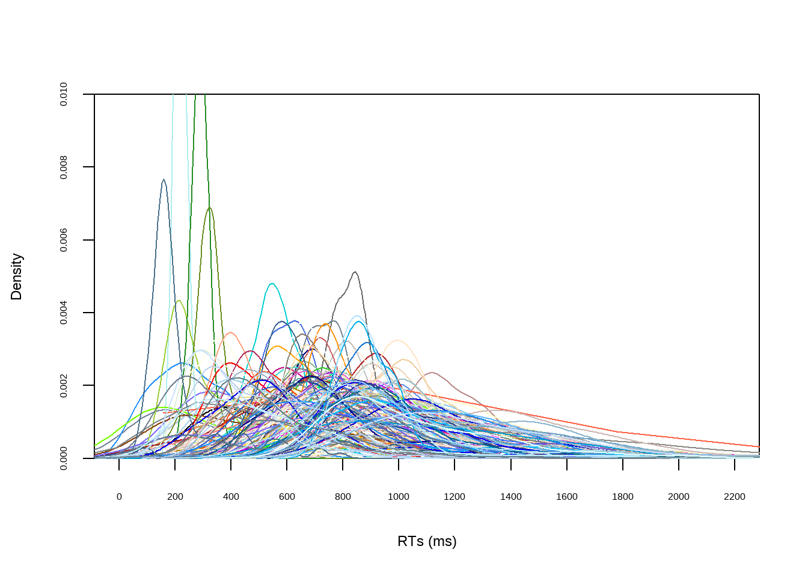
data_testing_rt_means <- aggregate(data_testing$rt, list(data_testing$sbj_ID), FUN=mean, na.rm=TRUE);
summary(data_testing_rt_means$x); # good med & mean Min. 1st Qu. Median Mean 3rd Qu. Max.
253.8 773.8 941.6 964.1 1089.7 4393.0 plot(data_testing_rt_means$x, ylab="Mean participant RT (ms)",xlab="Participants",main="",xaxt = "n",pch=3,yaxs="i",ylim=c(0,2750))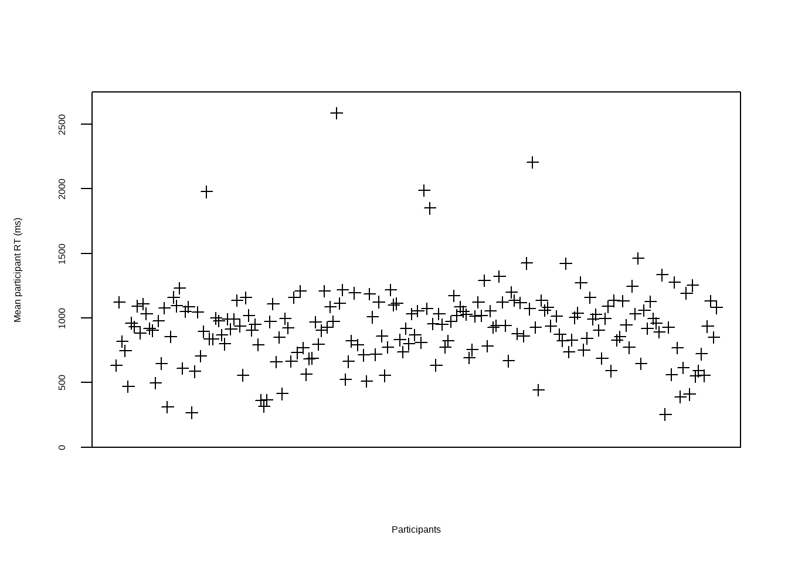
# looks healthy overall
plot(data_testing$rt[data_testing$sbj_ID=='6989bf21e63ddf302c08f8ee'],pch=19);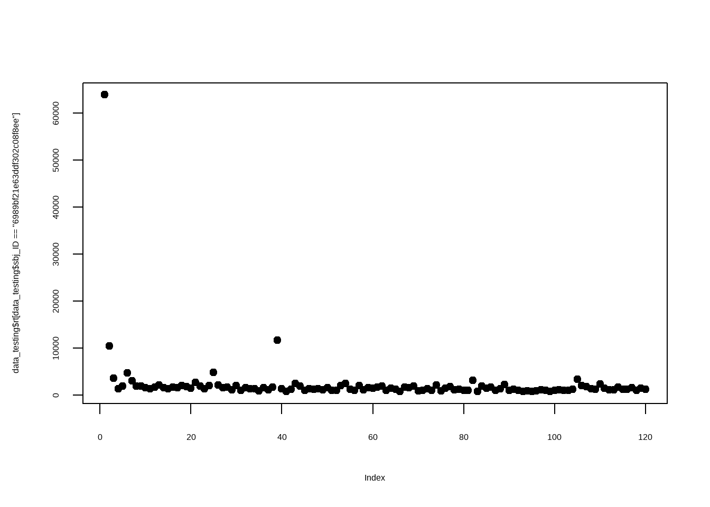
plot(data_testing$rt[data_testing$sbj_ID=='6989bf21e63ddf302c08f8ee'&data_testing$rt>2000],pch=19);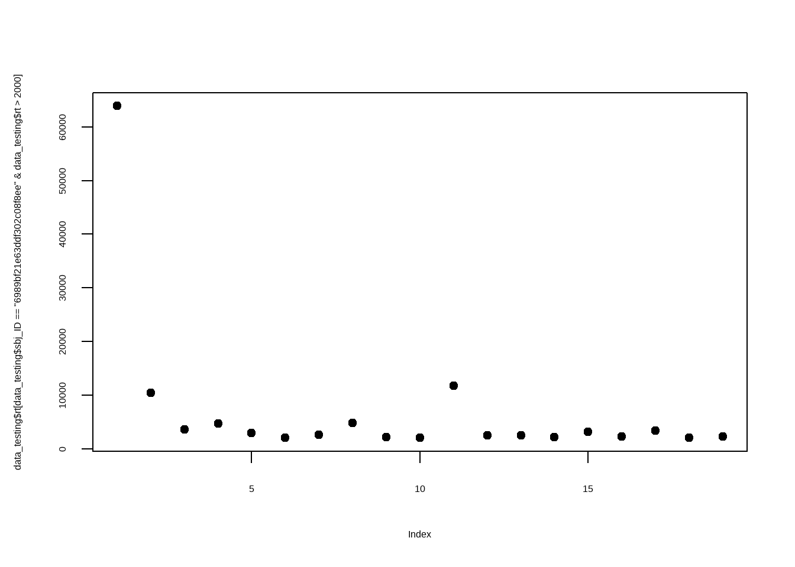
plot(data_testing$rt[data_testing$sbj_ID=='6989bf21e63ddf302c08f8ee'&data_testing$rt>10000],pch=19);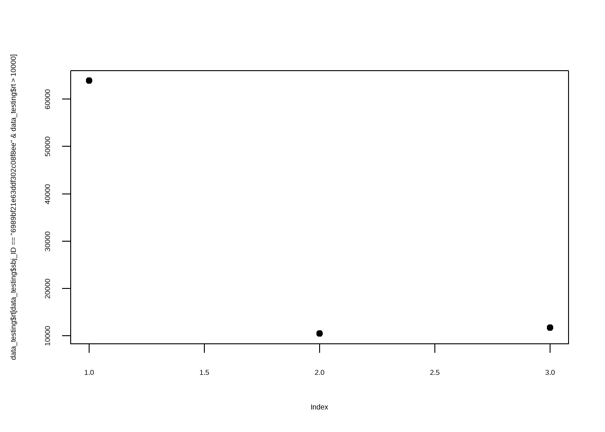
summary(data_testing$rt[data_testing$sbj_ID=='6989bf21e63ddf302c08f8ee']); Min. 1st Qu. Median Mean 3rd Qu. Max.
746 1065 1378 2205 1842 63897 # 19 data points above 2s response time, 3 above 10s
# mean RT = 2205ms -> exclude
data_testing <- data_testing[!data_testing$sbj_ID %in% c('6989bf21e63ddf302c08f8ee'),];
data_testing_rt_means <- data_testing_rt_means[!data_testing_rt_means$Group.1 %in% c('6989bf21e63ddf302c08f8ee'),];
# now n=199
plot(data_testing$rt[data_testing$sbj_ID=='698a1dffe0d91dbe2dde8ab7'],pch=19);plot(data_testing$rt[data_testing$sbj_ID=='698a1dffe0d91dbe2dde8ab7'&data_testing$rt>2000],pch=19);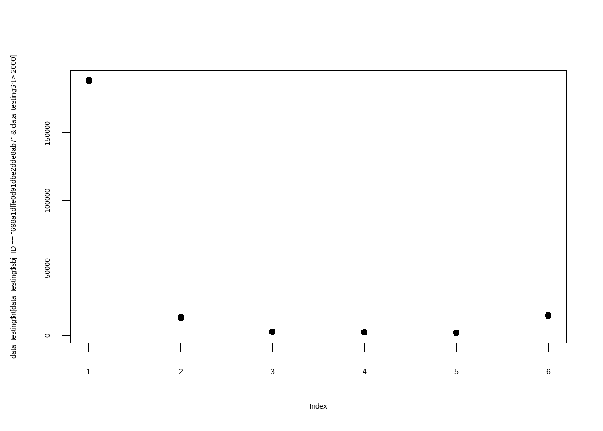
plot(data_testing$rt[data_testing$sbj_ID=='698a1dffe0d91dbe2dde8ab7'&data_testing$rt>10000],pch=19);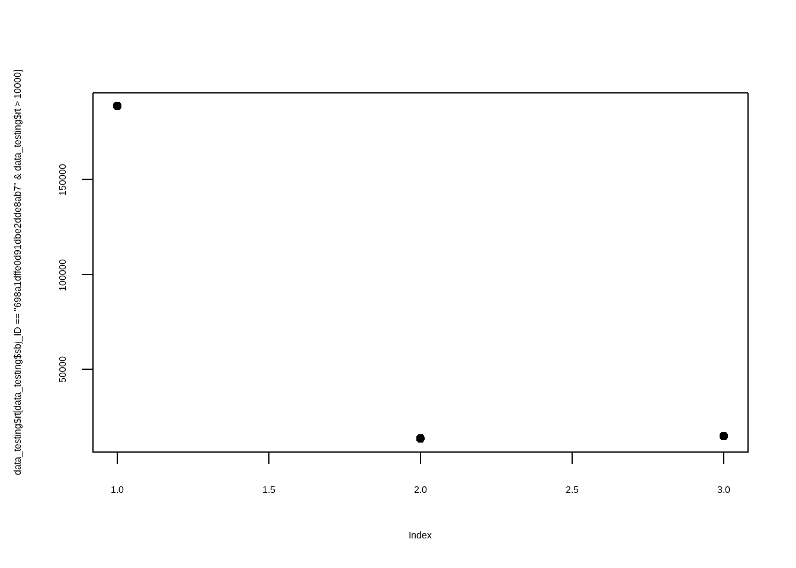
summary(data_testing$rt[data_testing$sbj_ID=='698a1dffe0d91dbe2dde8ab7']); Min. 1st Qu. Median Mean 3rd Qu. Max.
557 868 1101 2911 1332 188655 # 6 data points above 2s response time, 3 above 10s
# mean RT = 2911ms -> exclude
data_testing <- data_testing[!data_testing$sbj_ID %in% c('698a1dffe0d91dbe2dde8ab7'),];
data_testing_rt_means <- data_testing_rt_means[!data_testing_rt_means$Group.1 %in% c('698a1dffe0d91dbe2dde8ab7'),];
# now n=198
plot(data_testing$rt[data_testing$sbj_ID=='698074881d252d37dd9bc4d2'],pch=19);plot(data_testing$rt[data_testing$sbj_ID=='698074881d252d37dd9bc4d2'&data_testing$rt>2000],pch=19);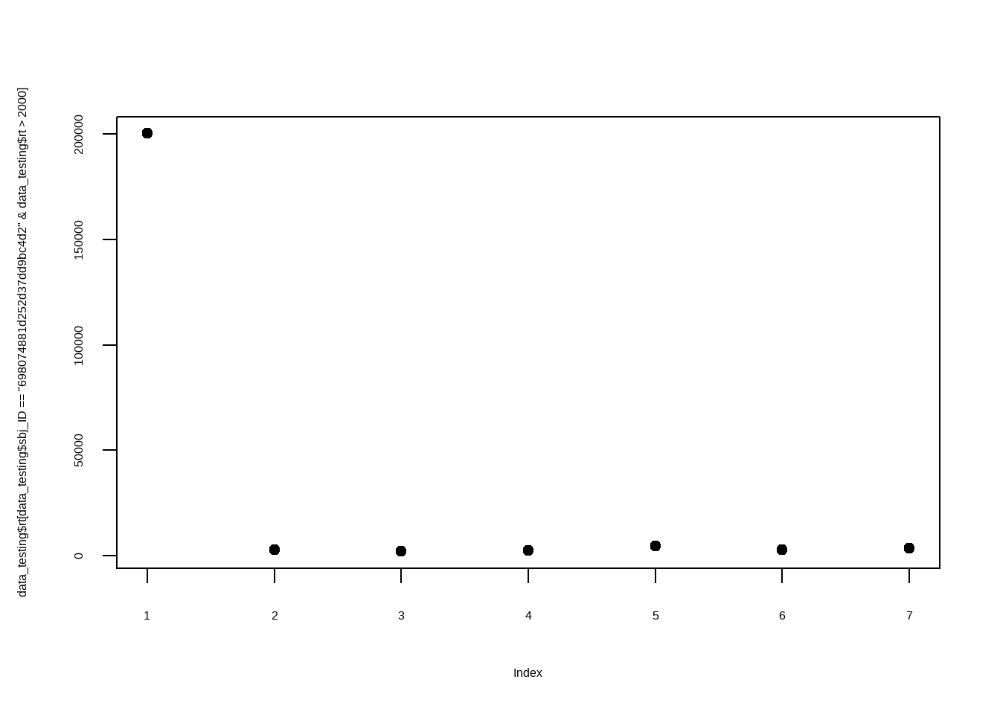
plot(data_testing$rt[data_testing$sbj_ID=='698074881d252d37dd9bc4d2'&data_testing$rt>10000],pch=19);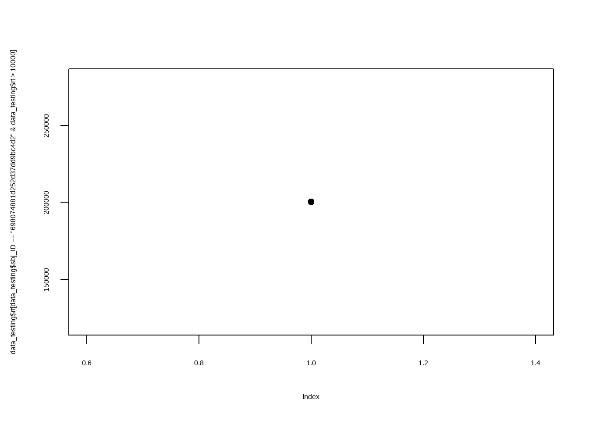
summary(data_testing$rt[data_testing$sbj_ID=='698074881d252d37dd9bc4d2']); Min. 1st Qu. Median Mean 3rd Qu. Max.
156.0 647.5 757.0 2587.2 975.5 200313.0 # 7 data points above 2s response time, 1 above 10s
# mean RT = 2587ms -> exclude
data_testing <- data_testing[!data_testing$sbj_ID %in% c('698074881d252d37dd9bc4d2'),];
data_testing_rt_means <- data_testing_rt_means[!data_testing_rt_means$Group.1 %in% c('698074881d252d37dd9bc4d2'),];
# now n=197
plot(data_testing$rt[data_testing$sbj_ID=='69808060419a938572d8eb13'],pch=19);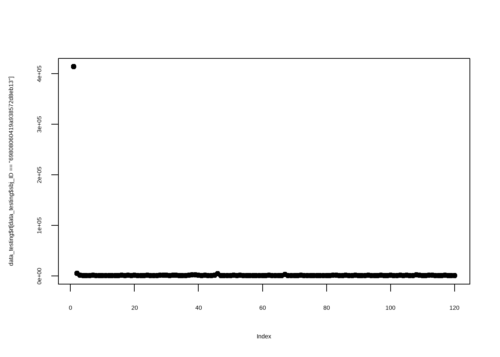
plot(data_testing$rt[data_testing$sbj_ID=='69808060419a938572d8eb13'&data_testing$rt>2000],pch=19);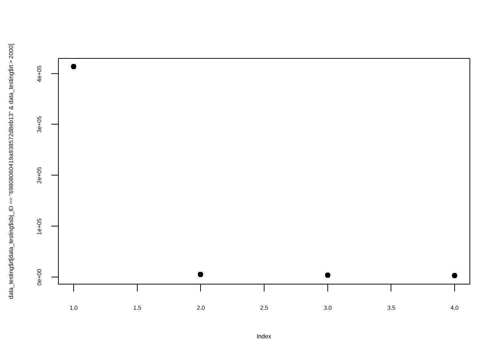
plot(data_testing$rt[data_testing$sbj_ID=='69808060419a938572d8eb13'&data_testing$rt>10000],pch=19);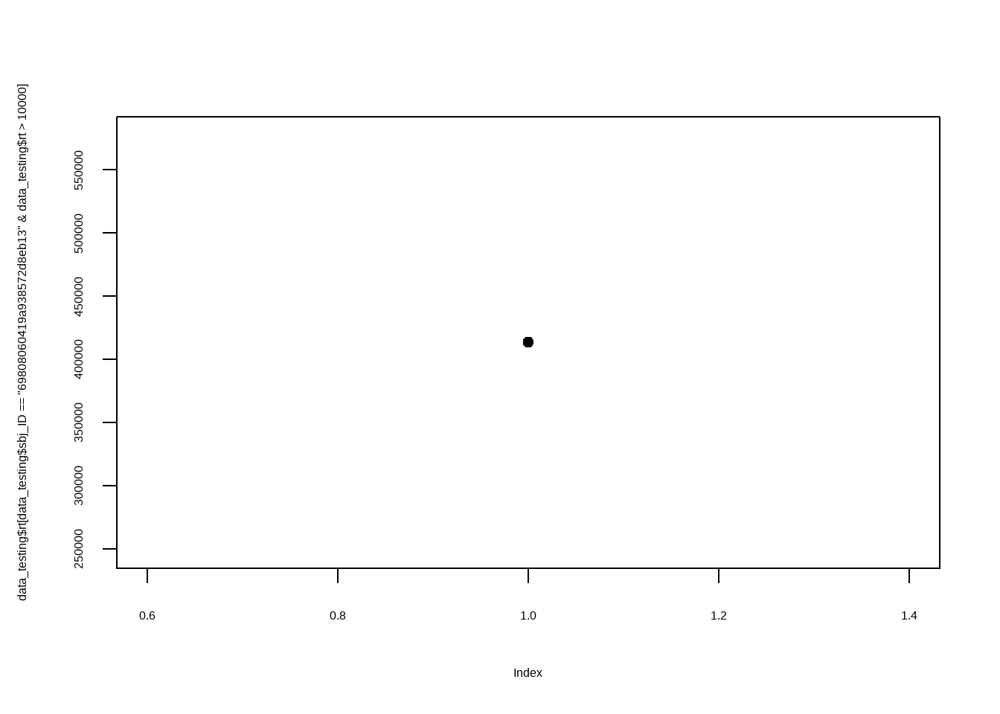
summary(data_testing$rt[data_testing$sbj_ID=='69808060419a938572d8eb13']); Min. 1st Qu. Median Mean 3rd Qu. Max.
447 642 825 4393 1016 413339 # 4 data points above 2s response time, 1 above 10s
# mean RT = 4393ms -> exclude
data_testing <- data_testing[!data_testing$sbj_ID %in% c('69808060419a938572d8eb13'),];
data_testing_rt_means <- data_testing_rt_means[!data_testing_rt_means$Group.1 %in% c('69808060419a938572d8eb13'),];
# now n=196
summary(data_testing_rt_means$x); Min. 1st Qu. Median Mean 3rd Qu. Max.
253.8 771.5 938.6 922.0 1085.4 1989.5 # min:254 Q1:773 med:939 mean:925 Q3:1086 max:1990mean_yes <- aggregate(data_testing$observed,by=list(data_testing$sbj_ID), FUN=function(x) sum(x == 'within_lang'));
names(mean_yes) <- c("sbj_ID", "yes");
summary(mean_yes$yes); # out of 120 items Min. 1st Qu. Median Mean 3rd Qu. Max.
21.00 55.00 63.00 63.91 73.00 120.00 #never said "yes":
#always said "yes": 697b39e368a5d148ab03b923
data_testing <- data_testing[!data_testing$sbj_ID %in% c('697b39e368a5d148ab03b923'),];
data_testing_rt_means <- data_testing_rt_means[!data_testing_rt_means$Group.1 %in% c('697b39e368a5d148ab03b923'),];
# now n=195
summary(data_testing_rt_means$x); Min. 1st Qu. Median Mean 3rd Qu. Max.
253.8 773.1 938.7 924.9 1086.0 1989.5 # min:254 Q1:773 med:939 mean:925 Q3:1086 max:1990data_testing_0M_yes <- aggregate(data_testing$observed[data_testing$testing_condition=='0M'], by=list(data_testing$sbj_ID[data_testing$testing_condition=='0M']), FUN = function(x) sum(x == 'within_lang'));
names(data_testing_0M_yes) <- c("sbj_ID","yes_0M");
data_testing_0M_yes$yes_0M <- data_testing_0M_yes$yes_0M/40*100; #transform into percent
summary(data_testing_0M_yes$yes_0M); Min. 1st Qu. Median Mean 3rd Qu. Max.
2.50 25.00 40.00 39.62 52.50 92.50 # min:2.5 Q1:25 med:40 mean:39.62 Q3:52.5 max:92.5
t.test(data_testing_0M_yes$yes_0M, mu=50);
One Sample t-test
data: data_testing_0M_yes$yes_0M
t = -7.1823, df = 194, p-value = 1.43e-11
alternative hypothesis: true mean is not equal to 50
95 percent confidence interval:
36.76377 42.46700
sample estimates:
mean of x
39.61538 # t=-7.18 df=194 p=1.43e-11 CI=[36.76;42.47] est=39.62
data_testing <- merge(data_testing,data_testing_0M_yes,by="sbj_ID");data_testing_1M_yes <- aggregate(data_testing$observed[data_testing$testing_condition=='1M'], by=list(data_testing$sbj_ID[data_testing$testing_condition=='1M']), FUN = function(x) sum(x == 'within_lang'));
names(data_testing_1M_yes) <- c("sbj_ID","yes_1M");
data_testing_1M_yes$yes_1M <- data_testing_1M_yes$yes_1M/40*100; #transform into percent
summary(data_testing_1M_yes$yes_1M); Min. 1st Qu. Median Mean 3rd Qu. Max.
15.00 42.50 52.50 53.14 62.50 100.00 # min:15 Q1:42.5 med:52.5 mean:53.14 Q3:62.5 max:100
t.test(data_testing_1M_yes$yes_1M, mu=50);
One Sample t-test
data: data_testing_1M_yes$yes_1M
t = 3.0878, df = 194, p-value = 0.002312
alternative hypothesis: true mean is not equal to 50
95 percent confidence interval:
51.13478 55.14728
sample estimates:
mean of x
53.14103 # t=3.09 df=194 p=0.002 CI=[51.13;55.15] est=53.14
data_testing <- merge(data_testing,data_testing_1M_yes,by="sbj_ID");data_testing_2M_yes <- aggregate(data_testing$observed[data_testing$testing_condition=='2M'], by=list(data_testing$sbj_ID[data_testing$testing_condition=='2M']), FUN = function(x) sum(x == 'within_lang'));
names(data_testing_2M_yes) <- c("sbj_ID","yes_2M");
data_testing_2M_yes$yes_2M <- data_testing_2M_yes$yes_2M/40*100; #transform into percent
summary(data_testing_2M_yes$yes_2M); Min. 1st Qu. Median Mean 3rd Qu. Max.
25.00 57.50 67.50 66.29 77.50 97.50 # min=25 Q1=57.5 med=67.5 mean=66.29 Q3=77.5 max=97.5
t.test(data_testing_2M_yes$yes_2M, mu=50);
One Sample t-test
data: data_testing_2M_yes$yes_2M
t = 15.321, df = 194, p-value < 2.2e-16
alternative hypothesis: true mean is not equal to 50
95 percent confidence interval:
64.19725 68.39250
sample estimates:
mean of x
66.29487 # t=15.32 df=194 p<2.2e-16 CI=[64.20;68.39] est=66.29
data_testing <- merge(data_testing,data_testing_2M_yes,by="sbj_ID");
data_testing_2M_aggr <- data_testing %>%
mutate(correct01 = case_when(correct == TRUE ~ 1,
correct == FALSE ~ 0),
yesno01 = case_when(observed == 'between_lang' ~ 0,
observed == 'within_lang' ~ 1)) %>%
filter(testing_condition == '2M') %>%
group_by(expected, sbj_ID) %>%
dplyr::summarise(meanCorrect = mean(correct01), se = sd(correct01/sqrt(n())),
meanYes = mean(yesno01), se = sd(yesno01/sqrt(n()))) %>%
mutate(meanNo = 1 - meanYes);`summarise()` has regrouped the output.
ℹ Summaries were computed grouped by expected and sbj_ID.
ℹ Output is grouped by expected.
ℹ Use `summarise(.groups = "drop_last")` to silence this message.
ℹ Use `summarise(.by = c(expected, sbj_ID))` for per-operation grouping
(`?dplyr::dplyr_by`) instead.data_testing_2M_aggr <- data_testing_2M_aggr %>%
pivot_longer(
cols = c(meanYes, meanNo),
names_to = "response",
values_to = "meanValue"
);
data_testing_2M_aggr$response <- as.factor(data_testing_2M_aggr$response);
ggplot(data_testing_2M_aggr[ which(data_testing_2M_aggr$response=='meanYes'),], aes(x=expected, y=meanValue, fill=expected)) +
geom_hline(yintercept=0.5, linetype="dashed", color="darkgrey",lwd=1.25) +
geom_violin(alpha=0.75,width=1) +
geom_boxplot(width=0.1,position=position_dodge(width=1)) +
scale_fill_manual(values=c(cols2[100],cols2[200]),
name="Participant response",labels=c("Between-language","Within-language")) +
scale_x_discrete(labels=c('Between-language', 'Within-language')) +
labs(x = "String nature", y = 'Prop of "within-language" responses') +
theme(panel.grid.major = element_blank(), panel.grid.minor = element_blank(),
panel.background = element_blank(), axis.line = element_line(colour = "black"),
axis.text = element_text(family = "CMU Serif", size = 30, color = "black"),
text=element_text(family="CMU Serif",size=30),
legend.position="none",
legend.background=element_rect(fill=NA));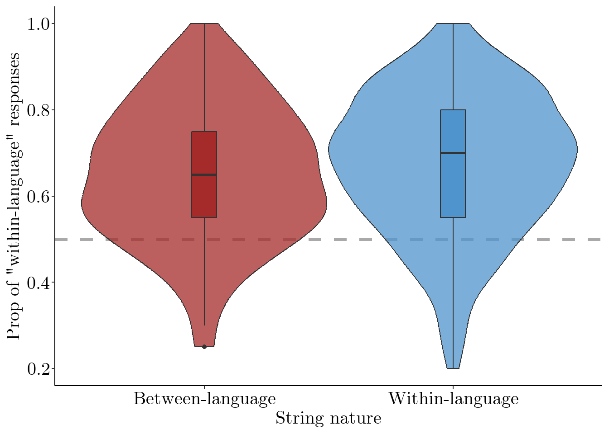
data_testing_2M_means <- aggregate(data_testing$correct[data_testing$testing_condition=='2M'], list(data_testing$sbj_ID[data_testing$testing_condition=='2M']), FUN=mean, na.rm=TRUE);
names(data_testing_2M_means) <- c("sbj_ID","score_2M");
ggplot(data_testing_2M_means, aes(x="", y=score_2M)) +
geom_hline(yintercept=0.5, linetype="dashed", color="darkgrey",lwd=1.25) +
geom_boxplot(fill="grey") +
ylim(0,1) +
labs(y='Participant 2M scores') +
theme(axis.title.x=element_blank(),axis.text.x=element_blank(),
axis.ticks.x=element_blank(),
panel.grid.major = element_blank(), panel.grid.minor = element_blank(),
panel.background = element_blank(), axis.line = element_line(colour = "black"),
axis.text = element_text(family = "CMU Serif", size = 30, color = "black"),
text=element_text(family="CMU Serif",size=30),
legend.position="inside",legend.position.inside = c(0.85,0.09),
legend.background=element_rect(fill=NA));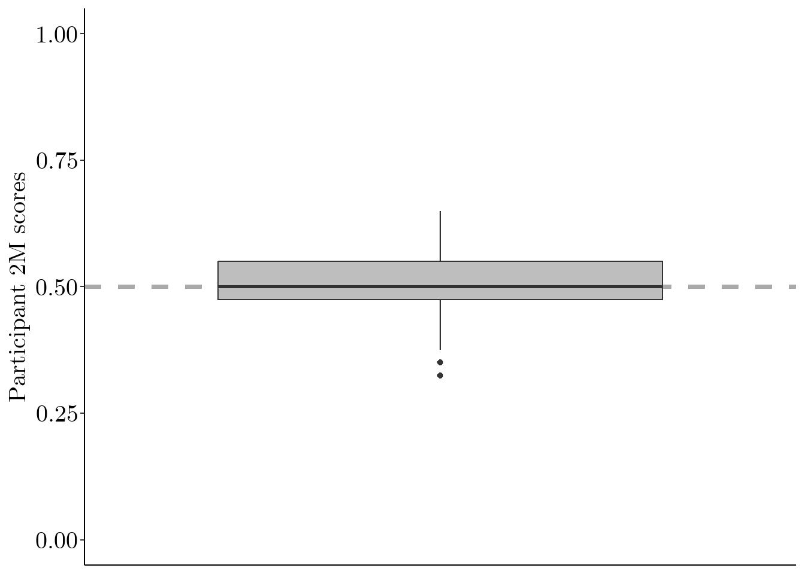
summary(data_testing_2M_means$score_2M); Min. 1st Qu. Median Mean 3rd Qu. Max.
0.3250 0.4750 0.5000 0.5119 0.5500 0.6500 # min=0.33 Q1=0.48 med=0.50 mean=0.51 Q3=0.55 max=0.65
var(data_testing_2M_means$score_2M); #var=0.004[1] 0.003848731plot(data_testing_2M_means$score_2M,pch=3,ylim=c(0,1));
abline(h=0.5, lty=5); # clustered around chance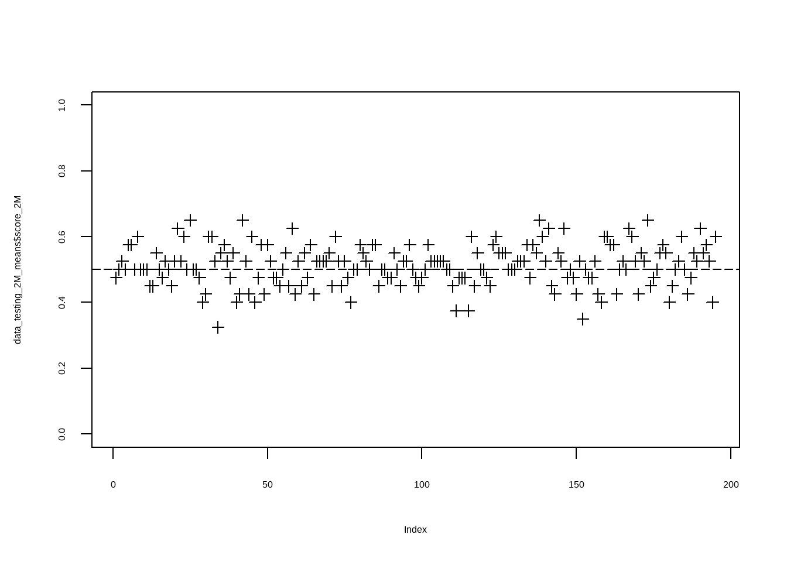
hist(data_testing_2M_means$score_2M); # normally distributed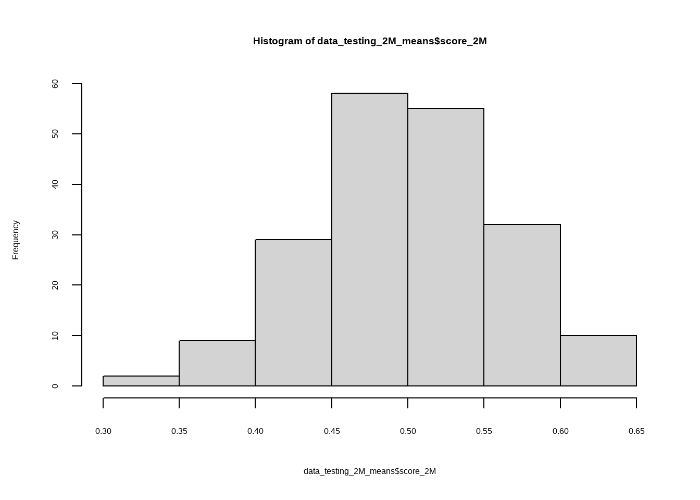
t.test(data_testing_2M_means$score_2M, mu=0.50);
One Sample t-test
data: data_testing_2M_means$score_2M
t = 2.6838, df = 194, p-value = 0.007909
alternative hypothesis: true mean is not equal to 0.5
95 percent confidence interval:
0.5031610 0.5206852
sample estimates:
mean of x
0.5119231 # t=2.68, df=194, p=0.008, CI=[0.503;0.521], est=0.51
data_testing <- merge(data_testing,data_testing_2M_means,by="sbj_ID");data_testing_2M <- data_testing[data_testing$testing_condition == '2M',];
data_testing_2M$expected_bi[data_testing_2M$expected == "between_lang"] <- 0;
data_testing_2M$expected_bi[data_testing_2M$expected == "within_lang"] <- 1;
data_testing_2M$observed_bi[data_testing_2M$observed == "between_lang"] <- 0;
data_testing_2M$observed_bi[data_testing_2M$observed == "within_lang"] <- 1;
dprimes2M <- dPrime(data_testing_2M$sbj_ID, data_testing_2M$expected_bi, data_testing_2M$observed_bi);
names(dprimes2M) <- c("sbj_ID","dprime","log_beta","c");
summary(dprimes2M); sbj_ID dprime log_beta c
Length :195 Min. :-0.96800 Min. :-1.26600 Min. :-1.7230
N.unique :195 1st Qu.:-0.15400 1st Qu.:-0.11300 1st Qu.:-0.7150
N.blank : 0 Median : 0.00000 Median : 0.00000 Median :-0.4320
Min.nchar: 24 Mean : 0.06801 Mean :-0.03923 Mean :-0.4443
Max.nchar: 24 3rd Qu.: 0.33000 3rd Qu.: 0.03350 3rd Qu.:-0.1800
Max. : 0.84800 Max. : 0.95000 Max. : 0.6370 # mean(d') = 0.07, mean(c) = -0.44
data_testing <- merge(data_testing,dprimes2M,by="sbj_ID");
cor.test(dprimes2M$dprime,dprimes2M$c, method="pearson");
Pearson's product-moment correlation
data: dprimes2M$dprime and dprimes2M$c
t = -0.80267, df = 193, p-value = 0.4232
alternative hypothesis: true correlation is not equal to 0
95 percent confidence interval:
-0.19659998 0.08350814
sample estimates:
cor
-0.05768105 # t=-0.80 df=193 p=0.42 CI=[-0.20;0.08] est=-0.06 ()
testing_short <- data_testing[!duplicated(data_testing$sbj_ID), ];
t.test(testing_short$dprime, mu=0);
One Sample t-test
data: testing_short$dprime
t = 2.6058, df = 194, p-value = 0.009876
alternative hypothesis: true mean is not equal to 0
95 percent confidence interval:
0.01653421 0.11947605
sample estimates:
mean of x
0.06800513 # t=2.61 df=194 p=0.01 CI=[0.02;0.12] est=0.07
t.test(testing_short$c, mu=0);
One Sample t-test
data: testing_short$c
t = -14.401, df = 194, p-value < 2.2e-16
alternative hypothesis: true mean is not equal to 0
95 percent confidence interval:
-0.5051508 -0.3834543
sample estimates:
mean of x
-0.4443026 # t=-14.40 df=194 p<2.2e-16 CI=[-0.51;-0.38] est=-0.44 # evaluating the differences between conditions
data_testing_conditions <- merge(data_testing_0M_yes,data_testing_1M_yes, by='sbj_ID');
data_testing_conditions <- merge(data_testing_conditions,data_testing_2M_yes, by='sbj_ID');
conditions_table <- table(data_testing$testing_condition, data_testing$observed);
chisq.test(conditions_table);
Pearson's Chi-squared test
data: conditions_table
X-squared = 1114.5, df = 2, p-value < 2.2e-16# X2 = 1114.5 df=2 p<2.2e-16
data_testing_conditions <- data_testing_conditions %>%
gather(condition, score, -sbj_ID);
data_testing_conditions$score <- data_testing_conditions$score/100;
# plotting all "yes" responses across conditions
ggplot(data_testing_conditions, aes(x = condition, y = score, color = condition)) +
geom_hline(yintercept=0.5, linetype="dashed",
color = "darkgray",lwd=1.25) +
geom_jitter(width = 0.1, height = 0, alpha = 0.3,color= "black",size=2) +
labs(x = "Condition", y = 'Proportion of "yes" responses') +
theme(panel.grid.major = element_blank(), panel.grid.minor = element_blank(),
panel.background = element_blank(), axis.line = element_line(colour = "black"),
axis.text = element_text(family = "CMU Serif", size = 30, color = "black"),
text=element_text(family="CMU Serif",size=30)) +
ylim(0,1.01) +
stat_summary(geom = "point",fun = "mean",col = "red",size = 4,shape = 19) +
stat_summary(geom = "errorbar", fun.data = "mean_se", width = 0.05,col="red",position = position_dodge(width = 0.5)) +
scale_x_discrete(labels=c("0M", "1M", "2M"));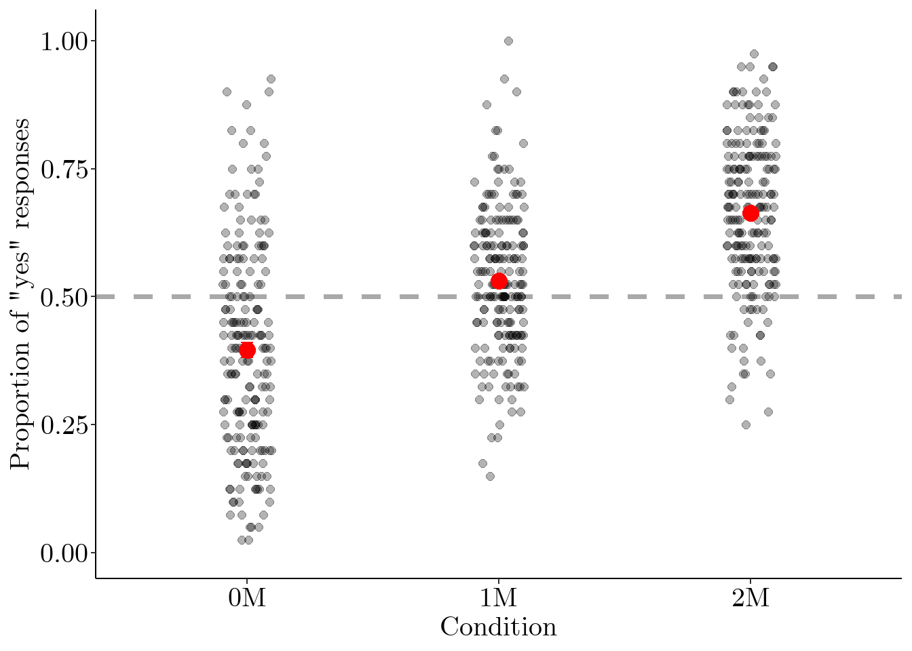
# 2M accuracy*RTs
cor.test(data_testing_2M_means$score_2M, data_testing_rt_means$x, method="pearson");
Pearson's product-moment correlation
data: data_testing_2M_means$score_2M and data_testing_rt_means$x
t = 0.53306, df = 193, p-value = 0.5946
alternative hypothesis: true correlation is not equal to 0
95 percent confidence interval:
-0.1027237 0.1778961
sample estimates:
cor
0.03834212 # t=0.53 df=193 p=0.59 CI=[-0.10;0.18] est=0.04 ()strats <- subset(data_testing, select = c(sbj_ID, strategy));
strats <- strats[!duplicated(strats),];
write.csv(strats,"BASL_exp3_strats.csv", row.names = FALSE);chunkID_strategists <- list('5ba4da6f03692b00019adae6','5ea2e2054687bd0517c23492','60c0fa09ef735c52ada64d23','60fa7628023c88195f68529c','612e6bf6f0eba168c2a1dc35','61353c933f32fef782432cc7','65feaaac53eb219f09ad5ea0','669d0b18e3a1ae0b5f7571ef','66b2acaa5fe9506f6cd278a8','66c7469a4526d21d11ed0e15','66ce4da62b4ca0e6ead754d6','66cf143e060992b3d817c20f','67269f439696d166fbb74e09','677302ad15f7e3d0c1725fef','68c00b0de12e311f71a427fd','690b6a1d98044838e462d048','6932b8da8751dc6771770907','6951d6fd93f50ed0e6363eba','6972610c74d08456b2aa6ae2','6978c41323acbe6260c25b6b','697ae23c7ed5edbb062a80a3','697b23f24e0252dfb327f950','697cab1603c68e76a4d71eb0','697caee42ccb58f80bd052aa','697cc570d57156b29c34b70a','697cd69b8306e0d7e7ff4bfc','697cee693cacc7fc3ccaedb3','697ceef83c5a1d1a0f21c6c1','697d0af5cbf092790e5303e5','698077f69bf2b842579340fc','69807e97ec7daf3eb0a4f256','698093a6ccef1114e376cfe5','69809b4956d7129d4b119b43','69809e035896ef246cbc2922','6980b660de828c2f1a83d72f','6980b7b8619ca8828b86f21b','6980bc0b357eb9d91de4a0e9','6980dcc1fee5670e573354f1','6981128082d28d2191154253','698242aea446c3fc40454a2d','69824e53e214c63c2afb2c53','698255186a52f393404e26f7','698351788833bcdaa3c391ce','69835a10b58c1a190110ab59','698362eea52b5dadb6f3197b','6984ab8a88a32e8274e0351b','6984b22b8b8f99c86194ce62','6984b8a7eadad5d5bd8e12cf','6985466b840079abc0ac75e9','6985a1a2a9b075341a3e65b0','698725ce979bc4d4ea7c7373','698732a17e9271820246153f','6989baec35fa286279b29ca5','6989bc7b28c71e3280a6e7f6','6989c9427f6c4ffb769fad68','6989de5cb788d8dfc4a2641e','6989f4760694ce91b5bc35f7','698cb68a1093d20f7c6087b7','698dd411bc2ef10a72a75749','698df4a194fabefa716596ec','698f277e7eb87d0f843d6bf7','69907667f821728d219ce06d','6998a16a9147ebdebf871a82','69a5dbac7321bbc23b76cb30','69aeee44187fdda005ab835b','69b0960f30730461ec1d57b1','69b81e444b794cbe8947b065','69bbe66ef888cc3fc9405de9','69bc58df28cbddd60a341a03','69c1120111926f72009dde4d','69c147cc355c3af96875e729','69c4d00086c2b4a1a8dc2191','69ca93b861a695b1c1eec106','69cff69eb8da20e1ea8a2fbe','69d25ddbd1a5851c7aa92ad3','69d7cd471aa7b7397313cb1f','69d8b313ae434f632a305c9b','69df940e45bb58f49783baac','69e0e73998a997f72e680509','69e266c172efe398cfc4c52d','69e90048f00cb9113be223d3','69af34e771ce9d065c0d9d80','66ca0a6b19da058b82d8637d','66019ce5f01f7f69af8016d1');
# n=84
data_chunkIDstrategists <- data_testing[data_testing$sbj_ID %in% chunkID_strategists,];
data_chunkIDstrategists <- data_chunkIDstrategists[data_chunkIDstrategists$testing_condition=='2M',];
data_chunkIDstrategists <- data_chunkIDstrategists[!duplicated(data_chunkIDstrategists$sbj_ID), ];
data_chunkIDstrategists$strat <- "chunkID";
summary(data_chunkIDstrategists$score_2M); Min. 1st Qu. Median Mean 3rd Qu. Max.
0.3250 0.4750 0.5250 0.5122 0.5500 0.6500 # min=0.33 Q1=0.48 med=0.53 mean=0.51 Q3=0.55 max=0.65
t.test(data_chunkIDstrategists$score_2M, mu=0.50);
One Sample t-test
data: data_chunkIDstrategists$score_2M
t = 1.8208, df = 83, p-value = 0.07224
alternative hypothesis: true mean is not equal to 0.5
95 percent confidence interval:
0.4988733 0.5255315
sample estimates:
mean of x
0.5122024 # t=1.82 df=83 p=0.07 CI=[0.499;0.53] est=0.51 (.)
summary(data_chunkIDstrategists$dprime); Min. 1st Qu. Median Mean 3rd Qu. Max.
-0.8790 -0.1540 0.1210 0.0669 0.2767 0.8480 summary(data_chunkIDstrategists$c); Min. 1st Qu. Median Mean 3rd Qu. Max.
-1.7230 -0.7150 -0.4645 -0.4709 -0.1822 0.6370 # dprime:0.07 c:-0.46
t.test(data_chunkIDstrategists$dprime, mu=0);
One Sample t-test
data: data_chunkIDstrategists$dprime
t = 1.7103, df = 83, p-value = 0.09095
alternative hypothesis: true mean is not equal to 0
95 percent confidence interval:
-0.01090102 0.14471055
sample estimates:
mean of x
0.06690476 # t=1.71 df=83 p=0.09 CI=[-0.01;0.14] est=0.07 (.)
t.test(data_chunkIDstrategists$c, mu=0);
One Sample t-test
data: data_chunkIDstrategists$c
t = -9.4362, df = 83, p-value = 8.758e-15
alternative hypothesis: true mean is not equal to 0
95 percent confidence interval:
-0.5701907 -0.3716664
sample estimates:
mean of x
-0.4709286 # t=-9.44 df=83 p=8.76e-15 CI=[-0.57;-0.37] est=-0.47 (***)
ggplot(data_chunkIDstrategists, aes(x="", y=score_2M)) +
geom_hline(yintercept=0.5, linetype="dashed", color="darkgrey",lwd=1.25) +
geom_violin(alpha=0.75,fill="gold1") +
geom_boxplot(width=0.1,fill="gold1") +
ylim(0,1) +
labs(y='Participant 2M scores') +
theme(axis.title.x=element_blank(),axis.text.x=element_blank(),
axis.ticks.x=element_blank(),
panel.grid.major = element_blank(), panel.grid.minor = element_blank(),
panel.background = element_blank(), axis.line = element_line(colour = "black"),
axis.text = element_text(family = "CMU Serif", size = 30, color = "black"),
text=element_text(family="CMU Serif",size=30),
legend.position="inside",legend.position.inside = c(0.85,0.09),
legend.background=element_rect(fill=NA));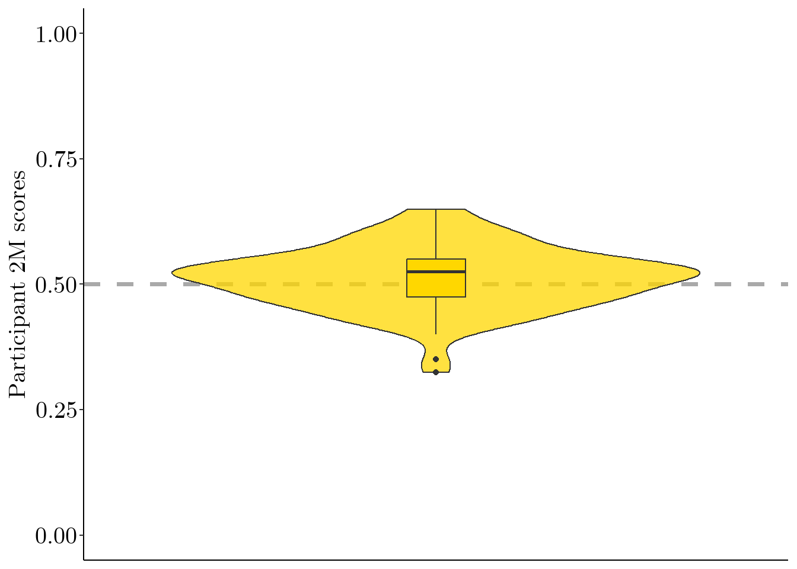
intuition_strategists <- list('6124f23ea1f4ef44fe280dd4','659c0682d109f8537a89fdd3','65fad6c874ac75642ffc254b','669d0b18e3a1ae0b5f7571ef','671a35e007e5342c31f94fa7','673c2ec22f554dedb25d4049','673caf90069aa7e3820136cc','67407b1fdd5d63e5b542d325','67503701c4ef8958767a58d9','6931bc7a9286300ba24d7703','6931edb6c25b0bfc7745d97b','6932c63c66408da96a982ab1','697af0b9a1262e67a280818f','697babc50cd42f81edf45acc','697bbefe70fe1cb006530f0f','697cabd6c4f2dee174cf2a1d','697ce004a414418e49c8d32a','697ced4d80e2cdd6597570a4','698074189377637711d6ee4c','698078075d3326e1b30bd1c3','698078e0b930dfcbfde9d603','69807d4738a6a1d1a2774e67','69807f12172ef48a2ac7edfa','69808261911a7a9bd10cd048','6980b37761737090ad122e6f','6980b64569f487effa4069a3','6980b8dbf12d0bde4727635e','6980c16f9985e39f6bcbbe3a','698119def2a23d22dac3df09','6981e24e62bb6fd0037109e5','69824df3026e0eff3dec0d0b','6983518f181a5c0bd8d4742c','69835b48d4c4c9a78668c0af','69839e45e8ca9d3863565d6d','6984c939f133acffbbd3b36a','69863c0a716ec6381ad4d1fb','69865b7be282f1756be7d697','698734d0ecc42269dc0e75ac','698b4e2840974dba43e185e8','698b57a46bf6a0eee98c0c04','6998ed35ce310d26bcf802aa','69a56a100ee2dc518e8c415c','69a81ed11957a0f6e26144d2','69aeee44187fdda005ab835b','69b52f9256ef2162a97fbebc','69d62066fd5570ddfaee9725','69d648d33057d63617173b85','69d66f2bcd1bac4e9bbdddc3','69dcfc3bcb3d5759729e920e','69e258d883661ada98acc7ee','69e511fc6bace0c078531c15','697da4b448849212fa6532e6','69aebf5ccbf8f23f086f7b6c');
# n=53
data_intuitionstrategists <- data_testing[data_testing$sbj_ID %in% intuition_strategists,];
data_intuitionstrategists <- data_intuitionstrategists[data_intuitionstrategists$testing_condition=='2M',];
data_intuitionstrategists <- data_intuitionstrategists[!duplicated(data_intuitionstrategists$sbj_ID), ];
data_intuitionstrategists$strat <- "intuition";
summary(data_intuitionstrategists$score_2M); Min. 1st Qu. Median Mean 3rd Qu. Max.
0.3750 0.4750 0.5000 0.5033 0.5500 0.6000 # min=0.38 Q1=0.48 med=0.50 mean=0.50 Q3=0.55 max=0.60
t.test(data_intuitionstrategists$score_2M, mu=0.50);
One Sample t-test
data: data_intuitionstrategists$score_2M
t = 0.40296, df = 52, p-value = 0.6886
alternative hypothesis: true mean is not equal to 0.5
95 percent confidence interval:
0.4868592 0.5197446
sample estimates:
mean of x
0.5033019 # t=0.40 df=52 p=0.69 CI=[0.49;0.52] est=0.50
summary(data_intuitionstrategists$dprime); Min. 1st Qu. Median Mean 3rd Qu. Max.
-0.67400 -0.21200 0.00000 0.02334 0.33000 0.82800 summary(data_intuitionstrategists$c); Min. 1st Qu. Median Mean 3rd Qu. Max.
-1.5800 -0.7320 -0.3790 -0.4176 -0.0600 0.4320 # dprime:0.02 c:-0.2
t.test(data_intuitionstrategists$dprime, mu=0);
One Sample t-test
data: data_intuitionstrategists$dprime
t = 0.4777, df = 52, p-value = 0.6349
alternative hypothesis: true mean is not equal to 0
95 percent confidence interval:
-0.07470182 0.12138106
sample estimates:
mean of x
0.02333962 # t=0.48 df=52 p=0.63 CI=[-0.07;0.12] est=0.02
t.test(data_intuitionstrategists$c, mu=0);
One Sample t-test
data: data_intuitionstrategists$c
t = -6.6174, df = 52, p-value = 2.016e-08
alternative hypothesis: true mean is not equal to 0
95 percent confidence interval:
-0.5442862 -0.2909968
sample estimates:
mean of x
-0.4176415 # t=-6.62 df=52 p=2.02e-8 CI=[-0.54;-0.29] est=-0.42
ggplot(data_intuitionstrategists, aes(x="", y=score_2M)) +
geom_hline(yintercept=0.5, linetype="dashed", color="darkgrey",lwd=1.25) +
geom_violin(alpha=0.75,fill="palevioletred") +
geom_boxplot(width=0.1,fill="palevioletred") +
ylim(0,1) +
labs(y='Participant 2M scores') +
theme(axis.title.x=element_blank(),axis.text.x=element_blank(),
axis.ticks.x=element_blank(),
panel.grid.major = element_blank(), panel.grid.minor = element_blank(),
panel.background = element_blank(), axis.line = element_line(colour = "black"),
axis.text = element_text(family = "CMU Serif", size = 30, color = "black"),
text=element_text(family="CMU Serif",size=30),
legend.position="inside",legend.position.inside = c(0.85,0.09),
legend.background=element_rect(fill=NA));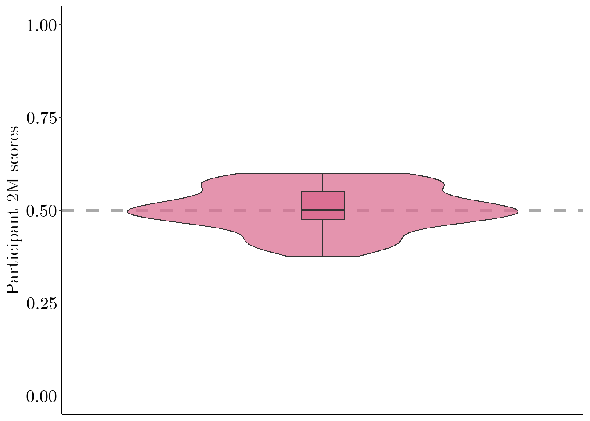
scores_strategies <- rbind(data_chunkIDstrategists,data_intuitionstrategists);
ggplot(scores_strategies, aes(x=strat, y=score_2M, fill=strat)) +
geom_hline(yintercept=0.5, linetype="dashed", color="darkgrey",lwd=1.25) +
geom_violin(alpha=0.75,width=1) +
geom_boxplot(width=0.1,position=position_dodge(width=1)) +
ylim(0,1) +
scale_fill_manual(values=c("gold1","palevioletred")) +
scale_x_discrete(labels=c('Chunk ID', 'Intuition')) +
labs(x="Strategy used",y="Participant 2M scores") +
theme(panel.grid.major = element_blank(), panel.grid.minor = element_blank(),
panel.background = element_blank(), axis.line = element_line(colour = "black"),
axis.text = element_text(family = "CMU Serif", size = 30, color = "black"),
text=element_text(family="CMU Serif",size=30),
legend.position="none",legend.background=element_rect(fill=NA));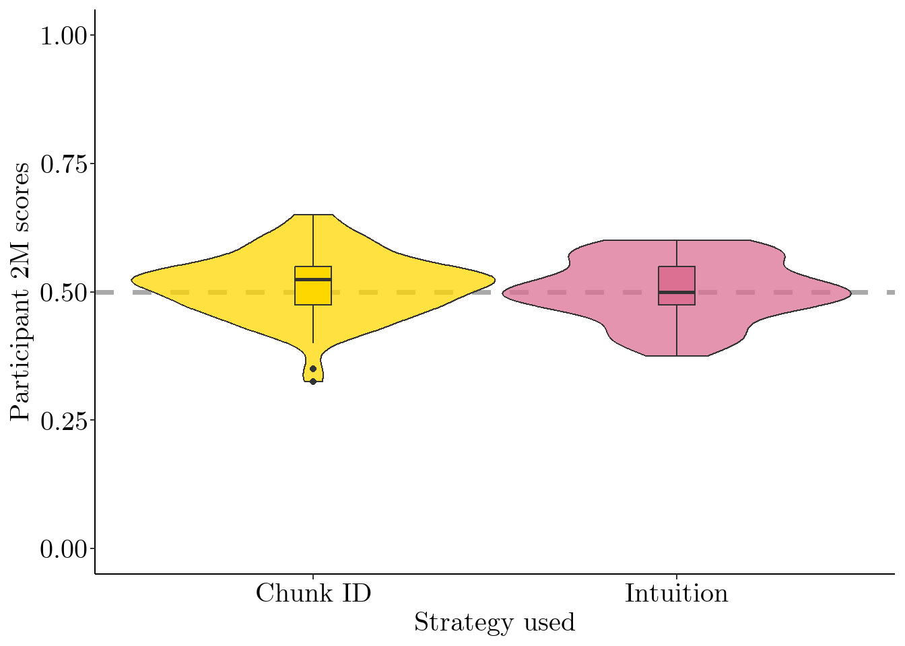
ggplot(scores_strategies, aes(x=strat, y=dprime, fill=strat)) +
geom_hline(yintercept=0, linetype="dashed", color="darkgrey",lwd=1.25) +
geom_violin(alpha=0.75,width=1) +
geom_boxplot(width=0.1,position=position_dodge(width=1)) +
scale_fill_manual(values=c("gold1","palevioletred")) +
scale_x_discrete(labels=c('Chunk ID', 'Intuition')) +
labs(x="Strategy used",y="Participant D prime") +
theme(panel.grid.major = element_blank(), panel.grid.minor = element_blank(),
panel.background = element_blank(), axis.line = element_line(colour = "black"),
axis.text = element_text(family = "CMU Serif", size = 30, color = "black"),
text=element_text(family="CMU Serif",size=30),
legend.position="none",legend.background=element_rect(fill=NA));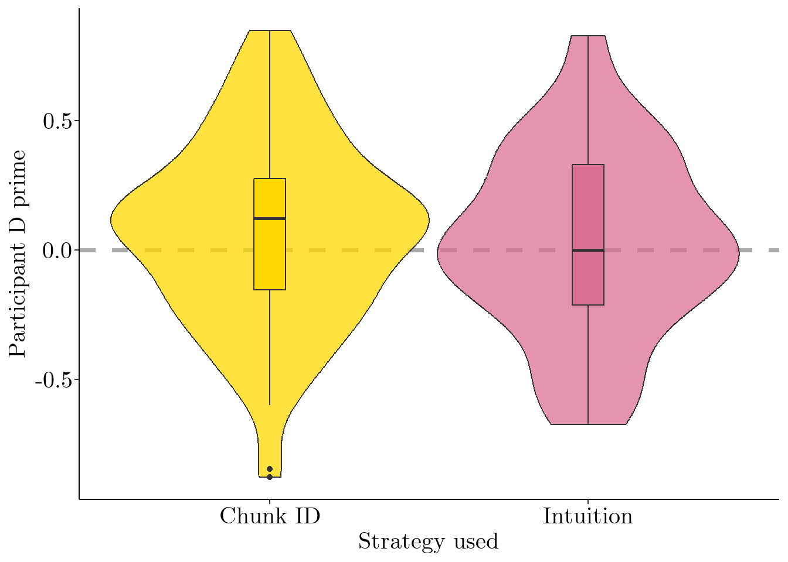
data_all_familiarity <- read.csv("exp3_familiarity_preprocessed.csv",header=T,sep=",");
data_all_familiarity <- subset(data_all_familiarity, select = -c(X)) # remove redundant column added by Pavlovia
data_familiarity <- data_all_familiarity[data_all_familiarity$sbj_ID %in% participants,]; # n = 187 participants
data_familiarity <- data_familiarity[!data_familiarity$sbj_ID %in% c('6989bf21e63ddf302c08f8ee','698074881d252d37dd9bc4d2','698a1dffe0d91dbe2dde8ab7','69808060419a938572d8eb13','697b39e368a5d148ab03b923'),];
# make some variables factors
data_familiarity$sbj_ID <- as.factor(data_familiarity$sbj_ID);
data_familiarity$task <- as.factor(data_familiarity$task);
data_familiarity$correct <- as.logical(data_familiarity$correct);
data_familiarity$target <- as.factor(data_familiarity$target);
data_familiarity$confound <- as.factor(data_familiarity$confound);data_familiarity_means <- aggregate(data_familiarity$correct, list(data_familiarity$sbj_ID), FUN=mean);
colnames(data_familiarity_means)[colnames(data_familiarity_means)=="Group.1"]="sbj_ID";
colnames(data_familiarity_means)[colnames(data_familiarity_means)=="x"]="fam_mean";
summary(data_familiarity_means$fam_mean); Min. 1st Qu. Median Mean 3rd Qu. Max.
0.3000 0.5667 0.6667 0.6554 0.7333 0.9667 # min=0.30 Q1=0.57 med=0.67 mean=0.66 Q3=0.73 max=0.97
hist(data_familiarity_means$fam_mean); # mostly normally distributed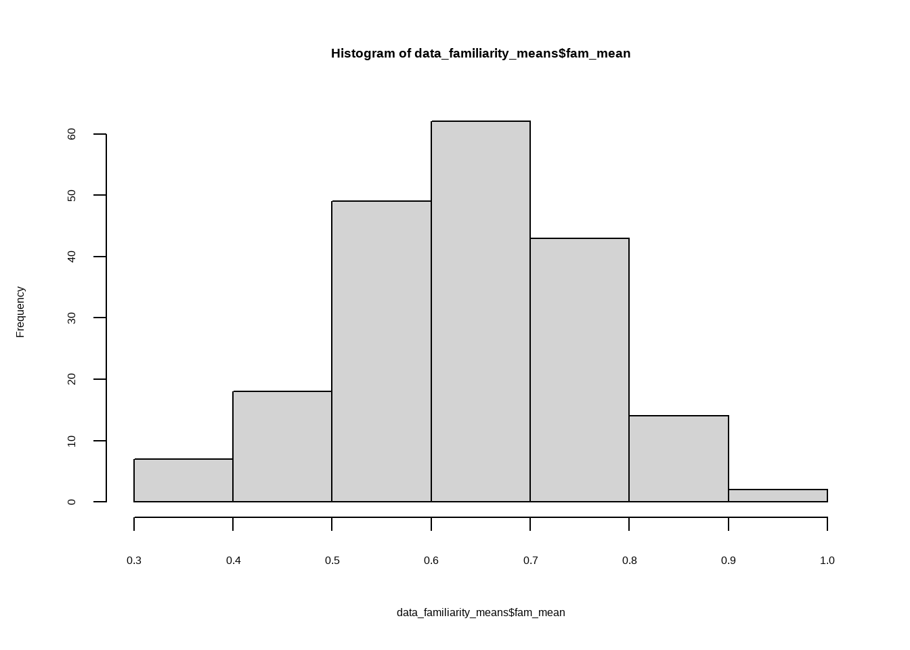
t.test(data_familiarity_means$fam_mean, mu=0.50);
One Sample t-test
data: data_familiarity_means$fam_mean
t = 17.914, df = 194, p-value < 2.2e-16
alternative hypothesis: true mean is not equal to 0.5
95 percent confidence interval:
0.6382771 0.6724921
sample estimates:
mean of x
0.6553846 # t=17.91 df=194 p<2.2e-16 CI=[0.64;0.67] est=0.66
var(data_familiarity_means$fam_mean); # var=0.01[1] 0.0146716data_familiarity <- merge(data_familiarity,data_familiarity_means,by="sbj_ID");
# familiarity accuracy violin plot
ggplot(data_familiarity_means, aes(y=fam_mean, x=x)) +
geom_hline(yintercept=0.5, linetype="dashed",
color = "darkgray",lwd=1.25) +
geom_violin(alpha=0.75,fill="orchid4") +
geom_boxplot(width=0.1,fill="orchid4") +
ylim(0,1) +
scale_fill_manual(values=cols2[350]) +
labs(y = 'Proportion of correct familiarity responses') +
theme(panel.grid.major = element_blank(), panel.grid.minor = element_blank(),
panel.background = element_blank(), axis.line = element_line(colour = "black"),
axis.text = element_text(family = "CMU Serif", size = 30, color = "black"),
text=element_text(family="CMU Serif",size=30),legend.position = "none",
axis.title.x=element_blank(),axis.text.x=element_blank(),
axis.ticks.x=element_blank());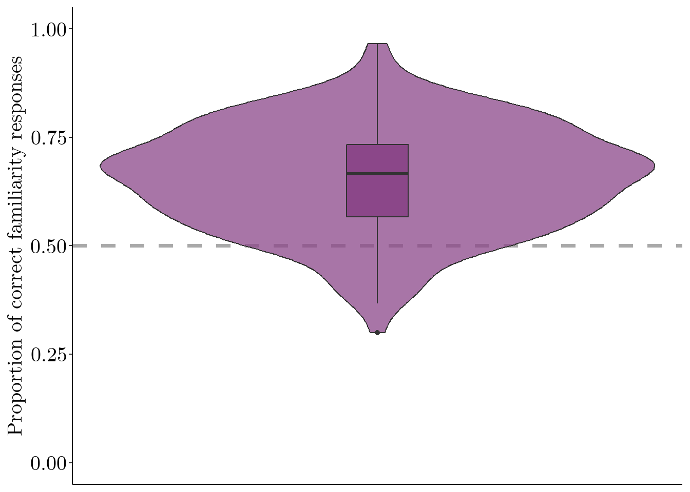
IDs <- list(data_familiarity$sbj_ID);
IDs <- sapply(IDs, unique);
plot(density(data_familiarity$rt));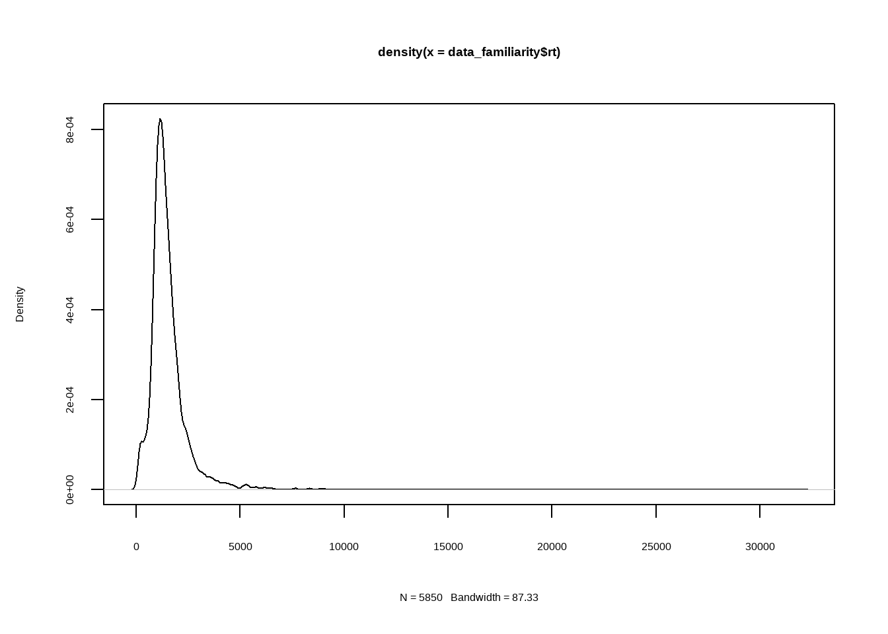
plot(density(data_familiarity$rt[data_familiarity$sbj_ID==IDs[1]]),xlim=c(0,4000),ylim=c(0,0.006),xlab="Familiarity RTs (ms)",main="",xaxt = "n",col=cols2[1],lwd=2,yaxs="i");
axis(1, at = c(0,500,1000,1500,2000,2500,3000,3500,4000));
for (x in 2:length(IDs)) {
lines(density(data_familiarity$rt[data_familiarity$sbj_ID==IDs[x]]),col=cols2[x],lwd=2)
};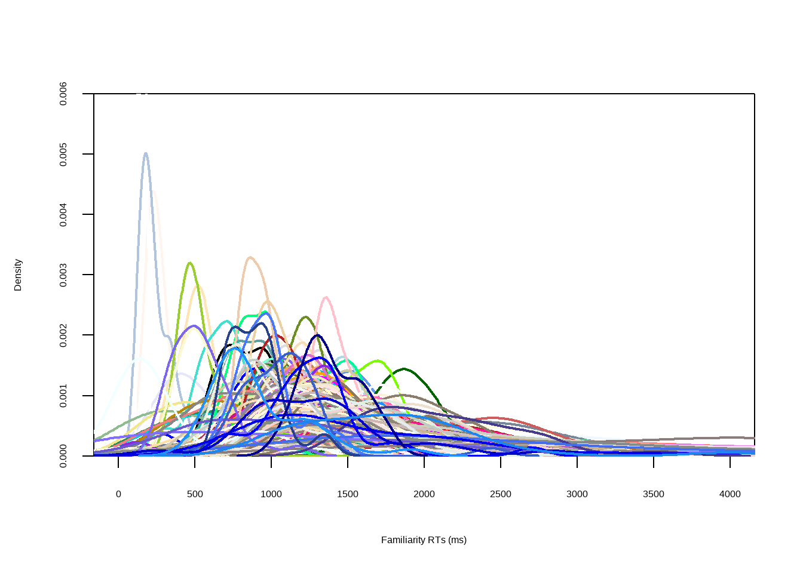
data_familiarity_rt_means <- aggregate(data_familiarity$rt, list(data_familiarity$sbj_ID), FUN=mean, na.rm=TRUE);
summary(data_familiarity_rt_means$x); Min. 1st Qu. Median Mean 3rd Qu. Max.
207.1 1200.8 1417.9 1515.1 1761.2 3728.7 # min=207 Q1=1201 med=1418 mean=1515 Q3=1761 max=3729
# familiarity accuracy*RTs
cor.test(data_familiarity_means$fam_mean, data_familiarity_rt_means$x, method="pearson")
Pearson's product-moment correlation
data: data_familiarity_means$fam_mean and data_familiarity_rt_means$x
t = 5.0915, df = 193, p-value = 8.408e-07
alternative hypothesis: true correlation is not equal to 0
95 percent confidence interval:
0.2139453 0.4622734
sample estimates:
cor
0.3441129 # t=5.09 df=193 p=8.41e-7 CI=[0.21;0.46] est=0.34
# slower at responding = better accuracycor.test(data_familiarity_means$fam_mean, data_testing_2M_means$score_2M, method="pearson");
Pearson's product-moment correlation
data: data_familiarity_means$fam_mean and data_testing_2M_means$score_2M
t = 0.59995, df = 193, p-value = 0.5492
alternative hypothesis: true correlation is not equal to 0
95 percent confidence interval:
-0.09796093 0.18255097
sample estimates:
cor
0.04314532 #t=0.60 df=193 p=0.55 CI=[-0.10;0.18] est=0.04
# no correlation
# familiarity accuracy by testing strategy
data_strategistsfam <- data_familiarity_means;
data_strategistsfam$strat[data_strategistsfam$sbj_ID %in% intuition_strategists] <- 'intuition';
data_strategistsfam$strat[data_strategistsfam$sbj_ID %in% chunkID_strategists] <- 'chunks';
data_strategistsfam$strat[data_strategistsfam$sbj_ID %in% chunkID_strategists] <- 'chunks';
data_strategistsfam$strat <- data_strategistsfam$strat %>% replace_na('other');
summary(data_strategistsfam$fam_mean[data_strategistsfam$strat=='chunks']); Min. 1st Qu. Median Mean 3rd Qu. Max.
0.4000 0.6250 0.7000 0.6885 0.7667 0.8667 # min=0.40 Q1=0.62 med=0.70 mean=0.69 Q3=0.77 max=0.87
t.test(data_strategistsfam$fam_mean[data_strategistsfam$strat=='chunks'],mu=0.50);
One Sample t-test
data: data_strategistsfam$fam_mean[data_strategistsfam$strat == "chunks"]
t = 15.644, df = 83, p-value < 2.2e-16
alternative hypothesis: true mean is not equal to 0.5
95 percent confidence interval:
0.6645268 0.7124573
sample estimates:
mean of x
0.6884921 # t=15.44 df=82 p<2.2e-16 CI=[0.66;0.71] est=0.69
summary(data_strategistsfam$fam_mean[data_strategistsfam$strat=='intuition']); Min. 1st Qu. Median Mean 3rd Qu. Max.
0.3667 0.5333 0.6000 0.6176 0.6833 0.9667 # min=0.37 Q1=0.53 med=0.60 mean=0.62 Q3=0.68 max=0.97
t.test(data_strategistsfam$fam_mean[data_strategistsfam$strat=='intuition'],mu=0.50);
One Sample t-test
data: data_strategistsfam$fam_mean[data_strategistsfam$strat == "intuition"]
t = 6.6389, df = 50, p-value = 2.205e-08
alternative hypothesis: true mean is not equal to 0.5
95 percent confidence interval:
0.5820534 0.6532407
sample estimates:
mean of x
0.6176471 # t=6.64 df=50 p=2.21e-8 CI=[0.58;0.65] est=0.62
par(mar=c(5,5,2,2));
boxplot(data_strategistsfam$fam_mean~data_strategistsfam$strat,ylab = "Familiarity score",xlab="Testing strategy",ylim=c(0.28,0.9),cex.lab=2,cex.axis=1.75,yaxs="i");
abline(h=0.5, lty=5);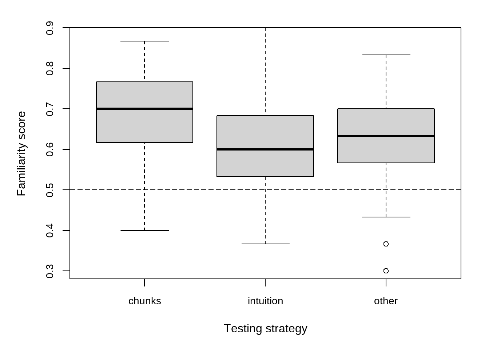
par(mar=c(5, 4, 4, 2) + 0.1); # back to defaultdata_all_BLP <- read.csv("exp3_BLP_preprocessed.csv",header=T,sep=",");
data_all_BLP <- subset(data_all_BLP, select = -c(X)); # remove redundant column added by Pavlovia
data_BLP <- data_all_BLP[data_all_BLP$sbj_ID %in% participants,]; # n = 190 participants
data_BLP <- data_BLP[!data_BLP$sbj_ID %in% c('6989bf21e63ddf302c08f8ee','698074881d252d37dd9bc4d2','698074881d252d37dd9bc4d2','698a1dffe0d91dbe2dde8ab7','69808060419a938572d8eb13','697b39e368a5d148ab03b923'),];
BLP_correction <- function(data_BLP)
{
data_BLP[data_BLP == "english"|data_BLP == "English "|data_BLP=="Enlish"|data_BLP=="ENGLISH "|data_BLP=="ENGLISH"|data_BLP=="Engish"|data_BLP=="Englosh"|data_BLP=="inglese"|data_BLP=="Englisg"|data_BLP=="Inglês"|data_BLP=="inglish"|data_BLP=="Engilsh"|data_BLP=="Englis"|data_BLP=="Inglês"] <- "English";
data_BLP[data_BLP == "spanish"|data_BLP=="SPANISH"|data_BLP=="Spanish "|data_BLP=="spanish "|data_BLP=="spagnolo"|data_BLP=="Espanhol"] <- "Spanish";
data_BLP[data_BLP == "GERMAN"|data_BLP=="German "|data_BLP=="Germany"|data_BLP=="germany"|data_BLP=="german"] <- "German";
data_BLP[data_BLP == "french"|data_BLP=="FRENCH"|data_BLP=="french but very poor"] <- "French";
data_BLP[data_BLP == "PORTUGUESE"|data_BLP=="Português"|data_BLP=="Português"] <- "Portuguese";
data_BLP[data_BLP == "dutch"|data_BLP=="DUTCH"] <- "Dutch";
data_BLP[data_BLP == "arabic"|data_BLP=="ARABIC"|data_BLP=="Arabic "] <- "Arabic";
data_BLP[data_BLP == "greek"|data_BLP=="GREEK"] <- "Greek";
data_BLP[data_BLP == "HINDI"|data_BLP=="hindi"] <- "Hindi";
data_BLP[data_BLP == "italiano"] <- "Italian";
data_BLP[data_BLP == "tulu"] <- "Tulu";
data_BLP[data_BLP == "kannada"] <- "Kannada";
data_BLP[data_BLP == "russian"] <- "Russian";
data_BLP[data_BLP == "catalan"] <- "Catalan";
data_BLP[data_BLP == "cantonese"] <- "Cantonese";
data_BLP[data_BLP == "PUNJABI"] <- "Punjabi";
data_BLP[data_BLP == "chinese (dialect)"] <- "Chinese";
data_BLP[data_BLP == "N/A"|data_BLP=="N/a"|data_BLP=="na"|data_BLP=="no"|data_BLP=="No"|data_BLP=="n/a"|data_BLP=="n/a "|data_BLP=='"n/a"'] <- "n/a";
data_BLP["L1"][is.na(data_BLP["L1"])] <- "n/a";
data_BLP["L2"][is.na(data_BLP["L2"])] <- "n/a";
data_BLP["L3"][is.na(data_BLP["L3"])] <- "n/a";
data_BLP["L4"][is.na(data_BLP["L4"])] <- "n/a";
# correcting some participants' demographic information - correction based off of Prolific's information
data_BLP["Age"][data_BLP["sbj_ID"] == "65fad6c874ac75642ffc254b"] <- "21";
data_BLP["Age"][data_BLP["sbj_ID"] == "66cf143e060992b3d817c20f"] <- "23";
data_BLP["Age"][data_BLP["sbj_ID"] == "673c2ec22f554dedb25d4049"] <- "21";
data_BLP["Age"][data_BLP["sbj_ID"] == "673caf90069aa7e3820136cc"] <- "23";
data_BLP["Age"][data_BLP["sbj_ID"] == "67503701c4ef8958767a58d9"] <- "23";
data_BLP["Age"][data_BLP["sbj_ID"] == "697bbefe70fe1cb006530f0f"] <- "23";
data_BLP["Age"][data_BLP["sbj_ID"] == "697cac029fc2c2f5a6adbc65"] <- "24";
data_BLP["Age"][data_BLP["sbj_ID"] == "697cc570d57156b29c34b70a"] <- "19";
data_BLP["Age"][data_BLP["sbj_ID"] == "697ceef83c5a1d1a0f21c6c1"] <- "19";
data_BLP["Age"][data_BLP["sbj_ID"] == "697f3920d3a9308de7557222"] <- "22";
data_BLP["Age"][data_BLP["sbj_ID"] == "698074189377637711d6ee4c"] <- "25";
data_BLP["Age"][data_BLP["sbj_ID"] == "6980756db82b3f6b672c2fea"] <- "25";
data_BLP["Age"][data_BLP["sbj_ID"] == "6980b37761737090ad122e6f"] <- "24";
data_BLP["Age"][data_BLP["sbj_ID"] == "6980b64569f487effa4069a3"] <- "19";
data_BLP["Age"][data_BLP["sbj_ID"] == "6980b660de828c2f1a83d72f"] <- "20";
data_BLP["Age"][data_BLP["sbj_ID"] == "698119def2a23d22dac3df09"] <- "24";
data_BLP["Age"][data_BLP["sbj_ID"] == "6981e24e62bb6fd0037109e5"] <- "24";
data_BLP["Age"][data_BLP["sbj_ID"] == "698242aea446c3fc40454a2d"] <- "25";
data_BLP["Age"][data_BLP["sbj_ID"] == "69824df3026e0eff3dec0d0b"] <- "24";
data_BLP["Age"][data_BLP["sbj_ID"] == "6983518f181a5c0bd8d4742c"] <- "23";
data_BLP["Age"][data_BLP["sbj_ID"] == "698362eea52b5dadb6f3197b"] <- "22";
data_BLP["Age"][data_BLP["sbj_ID"] == "698a4bd40711b1611e7f96ca"] <- "20";
data_BLP["Age"][data_BLP["sbj_ID"] == "698cb68a1093d20f7c6087b7"] <- "24";
data_BLP["Age"][data_BLP["sbj_ID"] == "698dd411bc2ef10a72a75749"] <- "24";
data_BLP["Age"][data_BLP["sbj_ID"] == "6998a16a9147ebdebf871a82"] <- "23";
data_BLP["Age"][data_BLP["sbj_ID"] == "69a56a100ee2dc518e8c415c"] <- "21";
data_BLP["Age"][data_BLP["sbj_ID"] == "69aeee44187fdda005ab835b"] <- "23";
data_BLP["Age"][data_BLP["sbj_ID"] == "69b52f9256ef2162a97fbebc"] <- "23";
data_BLP["Age"][data_BLP["sbj_ID"] == "69d8b313ae434f632a305c9b"] <- "25";
data_BLP["Age"][data_BLP["sbj_ID"] == "69e511fc6bace0c078531c15"] <- "18";
data_BLP["Age"][data_BLP["sbj_ID"] == "69e549ba0b6a44f0ec2b09cc"] <- "19";
data_BLP["Age"][data_BLP["sbj_ID"] == "69e743c5f506b9499e8fa3f9"] <- "20";
data_BLP["Gender"][data_BLP["sbj_ID"] == "65fad6c874ac75642ffc254b"] <- "Woman";
data_BLP["Gender"][data_BLP["sbj_ID"] == "697af0b9a1262e67a280818f"] <- "Man";
data_BLP["Gender"][data_BLP["sbj_ID"] == "69ca93b861a695b1c1eec106"] <- "Man";
return (data_BLP)
};
data_BLP <- BLP_correction(data_BLP);
# make some variables factors
data_BLP$task <- as.factor(data_BLP$task)
data_BLP$sbj_ID <- as.factor(data_BLP$sbj_ID);
data_BLP$Age <- as.numeric(data_BLP$Age);
data_BLP$Gender <- as.factor(data_BLP$Gender);
data_BLP$Education <- as.factor(data_BLP$Education);
data_BLP$L1 <- as.factor(data_BLP$L1);
data_BLP$L2 <- as.factor(data_BLP$L2);
data_BLP$L3 <- as.factor(data_BLP$L3);
data_BLP$L4 <- as.factor(data_BLP$L4);
data_BLP$otherLs <- as.factor(data_BLP$otherLs);
data_BLP$AttentionL1 <- as.factor(data_BLP$AttentionL1);
data_BLP$AttentionL2 <- as.factor(data_BLP$AttentionL2);
data_BLP$AttentionL3 <- as.factor(data_BLP$AttentionL3);
data_BLP$AttentionL4 <- as.factor(data_BLP$AttentionL4);
summary(data_BLP); sbj_ID Age Gender
5ba4da6f03692b00019adae6: 1 Min. :18.00 Man :138
5ea2e2054687bd0517c23492: 1 1st Qu.:21.00 Woman: 57
60c0fa09ef735c52ada64d23: 1 Median :23.00
60fa6f5d0c4ef9c26538f610: 1 Mean :22.21
60fa7628023c88195f68529c: 1 3rd Qu.:24.00
6124f23ea1f4ef44fe280dd4: 1 Max. :25.00
(Other) :189
Education L1 L2 L3 L4
College :85 Arabic :74 English:137 n/a :115 n/a :170
HighSchool :33 English :47 n/a : 23 French : 23 French : 5
Masters :11 Portuguese:18 French : 6 German : 15 Spanish: 5
MinusCollege :37 Spanish :18 Hindi : 6 Spanish: 15 German : 3
MinusHighSchool: 2 Hindi :10 German : 4 English: 10 Arabic : 1
PlusCollege :27 Italian : 7 Spanish: 4 Punjabi: 4 Bengali: 1
(Other) :21 (Other): 15 (Other): 13 (Other): 10
otherLs task AoAL1
n/a :165 BLP:195 Min. : 0.00
NO : 6 1st Qu.:20.00
French : 2 Median :20.00
A little bit of Italian and Spanish laguages: 1 Mean :19.42
a tiny bit german : 1 3rd Qu.:20.00
Arabic : 1 Max. :20.00
(Other) : 19
AoAL2 AoAL3 AoAL4 AoEaseL1
Min. : 0.00 Min. : 0.00 Min. : 0.000 Min. : 0.00
1st Qu.:12.00 1st Qu.: 5.00 1st Qu.: 2.000 1st Qu.:20.00
Median :14.00 Median : 9.00 Median : 7.500 Median :20.00
Mean :13.81 Mean : 9.37 Mean : 8.192 Mean :18.48
3rd Qu.:16.00 3rd Qu.:14.00 3rd Qu.:13.750 3rd Qu.:20.00
Max. :20.00 Max. :20.00 Max. :20.000 Max. :20.00
NAs :23 NAs :114 NAs :169
AoEaseL2 AoEaseL3 AoEaseL4 yearsEduL1
Min. : 0.000 Min. : 0.00 Min. : 0.000 Min. : 0.00
1st Qu.: 5.000 1st Qu.: 0.00 1st Qu.: 0.000 1st Qu.:12.00
Median : 8.000 Median : 4.00 Median : 2.000 Median :16.00
Mean : 9.471 Mean : 5.21 Mean : 5.654 Mean :15.37
3rd Qu.:14.000 3rd Qu.: 8.00 3rd Qu.: 9.750 3rd Qu.:19.50
Max. :20.000 Max. :20.00 Max. :20.000 Max. :20.00
NAs :23 NAs :114 NAs :169
yearsEduL2 yearsEduL3 yearsEduL4 yearsCountryL1
Min. : 0.00 Min. : 0.000 Min. : 0.000 Min. : 0.00
1st Qu.: 9.75 1st Qu.: 2.000 1st Qu.: 2.250 1st Qu.:20.00
Median :13.00 Median : 4.000 Median : 3.000 Median :20.00
Mean :12.70 Mean : 6.321 Mean : 5.038 Mean :19.04
3rd Qu.:17.00 3rd Qu.:10.000 3rd Qu.: 6.750 3rd Qu.:20.00
Max. :20.00 Max. :20.000 Max. :20.000 Max. :20.00
NAs :23 NAs :114 NAs :169
yearsCountryL2 yearsCountryL3 yearsCountryL4 yearsFamilyL1
Min. : 0.000 Min. : 0.00 Min. : 0.000 Min. : 0.00
1st Qu.: 0.000 1st Qu.: 0.00 1st Qu.: 0.000 1st Qu.:20.00
Median : 1.000 Median : 0.00 Median : 1.000 Median :20.00
Mean : 5.936 Mean : 4.21 Mean : 5.731 Mean :19.25
3rd Qu.:15.750 3rd Qu.: 2.00 3rd Qu.:12.750 3rd Qu.:20.00
Max. :20.000 Max. :20.00 Max. :20.000 Max. :20.00
NAs :23 NAs :114 NAs :169
yearsFamilyL2 yearsFamilyL3 yearsFamilyL4 yearsWorkL1
Min. : 0.000 Min. : 0.000 Min. : 0.000 Min. : 0.00
1st Qu.: 0.000 1st Qu.: 0.000 1st Qu.: 0.000 1st Qu.: 3.00
Median : 0.000 Median : 0.000 Median : 0.000 Median :19.00
Mean : 6.814 Mean : 3.741 Mean : 4.538 Mean :12.08
3rd Qu.:19.000 3rd Qu.: 1.000 3rd Qu.: 5.250 3rd Qu.:20.00
Max. :20.000 Max. :20.000 Max. :20.000 Max. :20.00
NAs :23 NAs :114 NAs :169
yearsWorkL2 yearsWorkL3 yearsWorkL4 PercFriendsL1 PercFriendsL2
Min. : 0.0 Min. : 0.000 Min. : 0.00 Min. : 0.0 Min. :0.000
1st Qu.: 0.5 1st Qu.: 0.000 1st Qu.: 0.00 1st Qu.: 7.0 1st Qu.:1.000
Median : 2.0 Median : 0.000 Median : 1.00 Median : 8.0 Median :2.000
Mean : 5.0 Mean : 2.247 Mean : 3.00 Mean : 7.8 Mean :1.994
3rd Qu.: 5.0 3rd Qu.: 2.000 3rd Qu.: 2.75 3rd Qu.: 9.0 3rd Qu.:3.000
Max. :20.0 Max. :20.000 Max. :20.00 Max. :10.0 Max. :9.000
NAs :24 NAs :114 NAs :169 NAs :23
PercFriendsL3 PercFriendsL4 PercFamilyL1 PercFamilyL2
Min. : 0.0000 Min. :0.0 Min. : 1.000 Min. :0.000
1st Qu.: 0.0000 1st Qu.:0.0 1st Qu.: 8.500 1st Qu.:0.000
Median : 0.0000 Median :0.0 Median :10.000 Median :0.000
Mean : 0.9012 Mean :0.5 Mean : 8.805 Mean :1.041
3rd Qu.: 1.0000 3rd Qu.:1.0 3rd Qu.:10.000 3rd Qu.:1.000
Max. :10.0000 Max. :2.0 Max. :10.000 Max. :9.000
NAs :114 NAs :169 NAs :23
PercFamilyL3 PercFamilyL4 PercWorkL1 PercWorkL2
Min. :0.0000 Min. :0.0000 Min. : 0.000 Min. : 0.000
1st Qu.:0.0000 1st Qu.:0.0000 1st Qu.: 5.000 1st Qu.: 1.000
Median :0.0000 Median :0.0000 Median : 7.000 Median : 3.000
Mean :0.4815 Mean :0.5769 Mean : 6.841 Mean : 2.907
3rd Qu.:1.0000 3rd Qu.:0.7500 3rd Qu.: 9.000 3rd Qu.: 4.000
Max. :7.0000 Max. :7.0000 Max. :10.000 Max. :10.000
NAs :114 NAs :169 NAs :23
PercWorkL3 PercWorkL4 PercSelfL1 PercSelfL2
Min. : 0.000 Min. :0.0000 Min. : 0.000 Min. : 0.000
1st Qu.: 0.000 1st Qu.:0.0000 1st Qu.: 6.000 1st Qu.: 1.000
Median : 0.000 Median :0.0000 Median : 8.000 Median : 2.000
Mean : 1.284 Mean :0.4615 Mean : 7.508 Mean : 2.413
3rd Qu.: 1.000 3rd Qu.:1.0000 3rd Qu.:10.000 3rd Qu.: 3.000
Max. :10.000 Max. :3.0000 Max. :10.000 Max. :10.000
NAs :114 NAs :169 NAs :23
PercSelfL3 PercSelfL4 PercCountL1 PercCountL2
Min. :0.0000 Min. :0.0000 Min. : 0.000 Min. : 0.000
1st Qu.:0.0000 1st Qu.:0.0000 1st Qu.: 5.000 1st Qu.: 1.000
Median :0.0000 Median :0.0000 Median : 8.000 Median : 2.000
Mean :0.7654 Mean :0.3462 Mean : 7.292 Mean : 2.663
3rd Qu.:1.0000 3rd Qu.:0.0000 3rd Qu.:10.000 3rd Qu.: 5.000
Max. :7.0000 Max. :3.0000 Max. :10.000 Max. :10.000
NAs :114 NAs :169 NAs :23
PercCountL3 PercCountL4 ProfSpeakL1 ProfSpeakL2
Min. :0.0000 Min. :0.0000 Min. :5.000 Min. :1.000
1st Qu.:0.0000 1st Qu.:0.0000 1st Qu.:6.000 1st Qu.:4.000
Median :0.0000 Median :0.0000 Median :6.000 Median :5.000
Mean :0.7407 Mean :0.3846 Mean :5.974 Mean :4.994
3rd Qu.:1.0000 3rd Qu.:0.0000 3rd Qu.:6.000 3rd Qu.:6.000
Max. :9.0000 Max. :3.0000 Max. :6.000 Max. :6.000
NAs :114 NAs :169 NAs :23
ProfSpeakL3 ProfSpeakL4 ProfUnderstandL1 ProfUnderstandL2
Min. :0.000 Min. :0.000 Min. :5.000 Min. :2.000
1st Qu.:2.000 1st Qu.:1.000 1st Qu.:6.000 1st Qu.:5.000
Median :3.000 Median :2.000 Median :6.000 Median :6.000
Mean :3.037 Mean :2.423 Mean :5.985 Mean :5.465
3rd Qu.:4.000 3rd Qu.:3.000 3rd Qu.:6.000 3rd Qu.:6.000
Max. :6.000 Max. :6.000 Max. :6.000 Max. :6.000
NAs :114 NAs :169 NAs :23
ProfUnderstandL3 ProfUnderstandL4 ProfReadL1 ProfReadL2
Min. :0.000 Min. :0.000 Min. :4.000 Min. :0.000
1st Qu.:3.000 1st Qu.:2.000 1st Qu.:6.000 1st Qu.:5.000
Median :3.000 Median :3.000 Median :6.000 Median :6.000
Mean :3.802 Mean :3.038 Mean :5.979 Mean :5.477
3rd Qu.:6.000 3rd Qu.:4.750 3rd Qu.:6.000 3rd Qu.:6.000
Max. :6.000 Max. :6.000 Max. :6.000 Max. :6.000
NAs :114 NAs :169 NAs :23
ProfReadL3 ProfReadL4 AttentionL1 AttentionL2 AttentionL3
Min. :0.000 Min. :0.000 true:195 : 23 :114
1st Qu.:2.000 1st Qu.:1.250 true:172 true: 81
Median :4.000 Median :3.000
Mean :3.679 Mean :2.885
3rd Qu.:5.000 3rd Qu.:4.000
Max. :6.000 Max. :6.000
NAs :114 NAs :169
AttentionL4 ProfWriteL1 ProfWriteL2 ProfWriteL3 ProfWriteL4
:169 Min. :1.000 Min. :0.00 Min. :0.000 Min. :0.000
true: 26 1st Qu.:6.000 1st Qu.:4.00 1st Qu.:1.000 1st Qu.:1.000
Median :6.000 Median :5.00 Median :3.000 Median :1.500
Mean :5.877 Mean :4.93 Mean :2.951 Mean :2.462
3rd Qu.:6.000 3rd Qu.:6.00 3rd Qu.:5.000 3rd Qu.:4.000
Max. :6.000 Max. :6.00 Max. :6.000 Max. :6.000
NAs :23 NAs :114 NAs :169
AttSelfL1 AttSelfL2 AttSelfL3 AttSelfL4 AttCultureL1
Min. :0.000 Min. :0.000 Min. :0.000 Min. :0.00 Min. :0.000
1st Qu.:6.000 1st Qu.:4.000 1st Qu.:1.000 1st Qu.:0.00 1st Qu.:6.000
Median :6.000 Median :5.000 Median :3.000 Median :1.00 Median :6.000
Mean :5.882 Mean :4.738 Mean :2.864 Mean :2.00 Mean :5.662
3rd Qu.:6.000 3rd Qu.:6.000 3rd Qu.:5.000 3rd Qu.:2.75 3rd Qu.:6.000
Max. :6.000 Max. :6.000 Max. :6.000 Max. :6.00 Max. :6.000
NAs :23 NAs :114 NAs :169
AttCultureL2 AttCultureL3 AttCultureL4 AttNativeLevelL1
Min. :0.000 Min. :0.000 Min. :0.000 Min. :3.000
1st Qu.:2.000 1st Qu.:0.000 1st Qu.:0.000 1st Qu.:6.000
Median :4.000 Median :2.000 Median :1.000 Median :6.000
Mean :3.349 Mean :2.247 Mean :1.962 Mean :5.872
3rd Qu.:5.000 3rd Qu.:4.000 3rd Qu.:3.000 3rd Qu.:6.000
Max. :6.000 Max. :6.000 Max. :6.000 Max. :6.000
NAs :23 NAs :114 NAs :169
AttNativeLevelL2 AttNativeLevelL3 AttNativeLevelL4 AttMothertongueL1
Min. :0.000 Min. :0.00 Min. :0.000 Min. :0.000
1st Qu.:4.000 1st Qu.:1.00 1st Qu.:1.000 1st Qu.:6.000
Median :6.000 Median :3.00 Median :2.000 Median :6.000
Mean :4.924 Mean :3.16 Mean :2.654 Mean :5.667
3rd Qu.:6.000 3rd Qu.:6.00 3rd Qu.:4.000 3rd Qu.:6.000
Max. :6.000 Max. :6.00 Max. :6.000 Max. :6.000
NAs :23 NAs :114 NAs :169
AttMothertongueL2 AttMothertongueL3 AttMothertongueL4 HistoryL1Score
Min. :0.00 Min. :0.000 Min. :0.000 Min. :14.98
1st Qu.:4.00 1st Qu.:1.000 1st Qu.:0.000 1st Qu.:44.04
Median :6.00 Median :4.000 Median :3.000 Median :47.67
Mean :4.57 Mean :3.432 Mean :2.654 Mean :47.05
3rd Qu.:6.00 3rd Qu.:6.000 3rd Qu.:4.750 3rd Qu.:52.66
Max. :6.00 Max. :6.000 Max. :6.000 Max. :54.48
NAs :23 NAs :114 NAs :169
HistoryL2Score HistoryL3Score HistoryL4Score UseL1Score
Min. : 0.00 Min. : 0.000 Min. : 0.000 Min. : 3.27
1st Qu.:12.03 1st Qu.: 0.000 1st Qu.: 0.000 1st Qu.:37.06
Median :18.16 Median : 0.000 Median : 0.000 Median :42.51
Mean :21.44 Mean : 5.865 Mean : 1.946 Mean :41.69
3rd Qu.:33.37 3rd Qu.: 7.945 3rd Qu.: 0.000 3rd Qu.:47.96
Max. :54.48 Max. :47.670 Max. :45.400 Max. :54.50
UseL2Score UseL3Score UseL4Score ProficiencyL1Score
Min. : 0.00 Min. : 0.000 Min. : 0.0000 Min. :38.59
1st Qu.: 4.36 1st Qu.: 0.000 1st Qu.: 0.0000 1st Qu.:54.48
Median : 9.81 Median : 0.000 Median : 0.0000 Median :54.48
Mean :10.59 Mean : 5.416 Mean : 0.3298 Mean :54.06
3rd Qu.:15.26 3rd Qu.:10.900 3rd Qu.: 0.0000 3rd Qu.:54.48
Max. :39.24 Max. :35.970 Max. :13.0800 Max. :54.48
ProficiencyL2Score ProficiencyL3Score ProficiencyL4Score AttitudeL1Score
Min. : 0.00 Min. : 0.00 Min. : 0.000 Min. :22.70
1st Qu.:40.86 1st Qu.: 0.00 1st Qu.: 0.000 1st Qu.:54.48
Median :47.67 Median : 0.00 Median : 0.000 Median :54.48
Mean :41.78 Mean :12.70 Mean : 3.271 Mean :52.40
3rd Qu.:52.21 3rd Qu.:24.97 3rd Qu.: 0.000 3rd Qu.:54.48
Max. :54.48 Max. :54.48 Max. :54.480 Max. :54.48
AttitudeL2Score AttitudeL3Score AttitudeL4Score L1Score
Min. : 0.00 Min. : 0.00 Min. : 0.000 Min. :132.2
1st Qu.:27.24 1st Qu.: 0.00 1st Qu.: 0.000 1st Qu.:188.2
Median :40.86 Median : 0.00 Median : 0.000 Median :197.5
Mean :35.20 Mean :11.04 Mean : 2.805 Mean :195.2
3rd Qu.:49.94 3rd Qu.:20.43 3rd Qu.: 0.000 3rd Qu.:205.4
Max. :54.48 Max. :54.48 Max. :54.480 Max. :217.9
L2Score L3Score L4Score
Min. : 0.00 Min. : 0.00 Min. : 0.000
1st Qu.: 96.57 1st Qu.: 0.00 1st Qu.: 0.000
Median :119.86 Median : 0.00 Median : 0.000
Mean :109.02 Mean : 35.02 Mean : 8.353
3rd Qu.:140.97 3rd Qu.: 70.15 3rd Qu.: 0.000
Max. :184.33 Max. :170.53 Max. :164.170
# 138/57 M/F split
# mean age = 22.21
# top L1: Arabic
# top L2: English
# top L3: French
# top L4: French# languages visualisation
df <- read.csv("BASL_exp3_langs_summary.csv",header=T,sep=",");
df <- df %>% mutate(pathString = paste(family, branch, language, sep="/"));
tree_dt <- as.Node(df, pathName = "pathString");
tree_phylo <- as.phylo(tree_dt);
get_descendant_tips <- function(tree, node) {
children_edges <- which(tree$edge[,1] == node)
tips <- c()
for (i in children_edges) {
child <- tree$edge[i,2]
if (child <= length(tree$tip.label)) {
tips <- c(tips, child)
} else {
tips <- c(tips, get_descendant_tips(tree, child))
}
}
return(tips)
};
family_vec <- setNames(df$family, df$language);
branch_vec <- setNames(df$branch, df$language);
count_vec <- setNames(df$count, df$language);
edge_df <- ggtree::fortify(tree_phylo);
edge_df <- edge_df %>%
rowwise() %>%
mutate(
edge_width = if (isTip) {
cnt <- count_vec[label]
if(length(cnt) == 0) 0 else cnt
} else {
tips <- get_descendant_tips(tree_phylo, node)
sum(count_vec[tree_phylo$tip.label[tips]])
}
) %>% ungroup();
edge_df <- edge_df %>%
mutate(
node_family = ifelse(
isTip, family_vec[label],
NA_character_
),
node_branch = ifelse(
isTip, branch_vec[label],
NA_character_
)
);
for (n in unique(edge_df$node)) {
if (!edge_df$isTip[edge_df$node == n]) {
tips <- get_descendant_tips(tree_phylo, n)
languages <- tree_phylo$tip.label[tips]
fams <- unique(family_vec[languages])
brs <- unique(branch_vec[languages])
if (length(fams) == 1)
edge_df$node_family[edge_df$node == n] <- fams
if (length(brs) == 1)
edge_df$node_branch[edge_df$node == n] <- brs
}
};
edge_df$edge_family <- edge_df$node_family;
edge_df$node_family <- ifelse(edge_df$isTip,
family_vec[edge_df$label],
NA);
for (n in unique(edge_df$node)) {
if (!edge_df$isTip[edge_df$node == n]) {
tips <- get_descendant_tips(tree_phylo, n)
langs <- tree_phylo$tip.label[tips]
fams <- family_vec[langs]
edge_df$node_family[edge_df$node == n] <- names(sort(table(fams), decreasing = TRUE))[1]
}
};
edge_df$edge_family <- edge_df$node_family;
ggtree(tree_phylo, layout="circular") %<+% edge_df +
geom_tree(aes(linewidth=edge_width, color=edge_family)) +
geom_tiplab(aes(label=gsub("_", " ", label), color=edge_family), size=15, align=TRUE,
show.legend=FALSE,family="CMU Serif") +
geom_text2(aes(subset = !isTip & !is.na(node_branch),
label=gsub("_", " ", node_branch),
color=edge_family,
angle=angle),
size=10, hjust=-0.2, vjust=1.4, show.legend=FALSE,
family="CMU Serif") +
scale_linewidth(breaks = c(1, 50, 100, 150),
range = c(0.5, 10)) +
scale_color_manual(values=c(cols3[1],cols3[3],cols3[5],cols3[9],cols3[11],cols3[15]),guide = guide_legend(override.aes=list(linewidth=6))) +
theme_tree() +
theme(text = element_text(family = "CMU Serif",size=30)) +
labs(color="Family", linewidth="Count");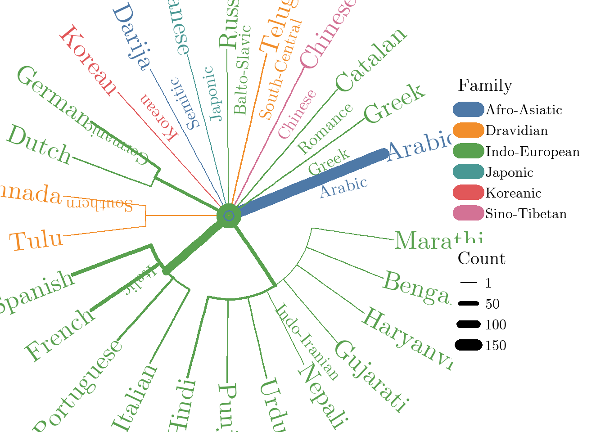
scores_list <- subset(data_BLP, select=c('sbj_ID','L1Score','L2Score','L3Score','L4Score')); # combine scores into 1 list
write.csv(scores_list,"BASL_exp3_scores.csv", row.names = FALSE);
use_scores_list <- subset(data_BLP, select=c('sbj_ID','UseL1Score','UseL2Score','UseL3Score','UseL4Score')); # combine use scores into 1 list
write.csv(use_scores_list,"BASL_exp3_usescores.csv", row.names = FALSE);BLP_scores <- subset(data_BLP,select=c(HistoryL1Score,HistoryL2Score,HistoryL3Score,HistoryL4Score,UseL1Score,UseL2Score,UseL3Score,UseL4Score,ProficiencyL1Score,ProficiencyL2Score,ProficiencyL3Score,ProficiencyL4Score,AttitudeL1Score,AttitudeL2Score,AttitudeL3Score,AttitudeL4Score));png('exp3_corrPlot_BLP.png', width=1000, height=1000);
corrplot::corrplot(cor(BLP_scores),type="lower", order="original", diag=T, method="color", outline=F, addgrid.col=F, tl.col='black', tl.pos='ld', addCoef.col='black',tl.cex=1.5);
dev.off();png
2 grid.raster(readPNG("exp3_corrPlot_BLP.png"));
png('exp3_corrPlot_BLP_hclust.png', width=1000, height=1000);
corrplot::corrplot(cor(BLP_scores),type="lower", order="hclust", diag=T, method="color", outline=F, addgrid.col=F, tl.col='black', tl.pos='ld', addCoef.col='black',tl.cex=1.5);
dev.off();png
2 grid.raster(readPNG("exp3_corrPlot_BLP_hclust.png"));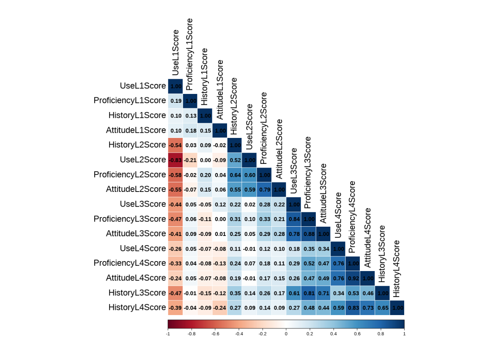
# BLP scores PCA
pca_varimax <- psych::principal(BLP_scores, nfactors=16, rotate='varimax');
pca_varimaxPrincipal Components Analysis
Call: psych::principal(r = BLP_scores, nfactors = 16, rotate = "varimax")
Standardized loadings (pattern matrix) based upon correlation matrix
RC1 RC3 RC2 RC7 RC5 RC4 RC8 RC6 RC10 RC9
HistoryL1Score -0.05 -0.06 -0.02 0.08 0.07 0.99 0.04 0.06 -0.02 -0.01
HistoryL2Score 0.12 0.14 0.33 0.26 -0.01 0.05 0.88 0.04 0.06 -0.01
HistoryL3Score 0.33 0.64 0.14 0.01 -0.09 -0.08 0.15 -0.01 0.64 0.00
HistoryL4Score 0.77 0.22 0.11 -0.02 -0.16 -0.02 0.11 -0.04 0.24 -0.03
UseL1Score -0.17 -0.34 -0.85 -0.19 0.05 0.06 -0.17 0.10 -0.05 -0.09
UseL2Score -0.02 -0.05 0.93 0.25 -0.04 0.00 0.17 -0.09 0.03 -0.05
UseL3Score 0.07 0.95 0.07 0.07 0.09 0.00 0.04 0.01 -0.04 0.03
UseL4Score 0.77 0.11 0.04 0.04 -0.02 -0.03 -0.01 0.03 0.00 0.63
ProficiencyL1Score 0.03 0.05 -0.12 -0.02 0.08 0.07 0.03 0.98 -0.01 0.01
ProficiencyL2Score 0.07 0.19 0.39 0.58 0.03 0.14 0.30 0.01 0.02 0.01
ProficiencyL3Score 0.29 0.89 0.11 0.04 0.00 -0.05 0.10 0.03 0.15 0.02
ProficiencyL4Score 0.95 0.23 0.09 -0.01 -0.05 -0.02 0.07 0.02 0.06 0.01
AttitudeL1Score -0.09 0.04 -0.05 0.04 0.99 0.07 0.00 0.08 -0.03 -0.01
AttitudeL2Score 0.05 0.12 0.36 0.90 0.04 0.08 0.19 -0.03 0.00 0.01
AttitudeL3Score 0.29 0.87 0.05 0.15 -0.01 -0.04 0.04 0.05 0.06 0.01
AttitudeL4Score 0.95 0.21 -0.01 0.09 -0.01 -0.03 0.03 0.02 0.01 0.00
RC11 RC12 RC13 RC14 RC15 RC16 h2 u2 com
HistoryL1Score 0.03 0.00 0.00 0.00 0.00 0.00 1 1.9e-15 1.1
HistoryL2Score 0.09 0.03 0.00 0.00 0.00 0.00 1 -6.7e-16 1.6
HistoryL3Score 0.02 0.10 0.01 0.01 0.00 0.00 1 -8.9e-16 2.8
HistoryL4Score -0.02 0.50 0.00 0.00 0.01 -0.01 1 8.9e-16 2.4
UseL1Score -0.03 -0.10 0.04 0.06 0.01 0.17 1 2.2e-16 1.9
UseL2Score 0.08 -0.04 0.03 0.05 0.01 0.12 1 -1.1e-15 1.3
UseL3Score 0.03 0.04 -0.20 -0.18 0.00 -0.03 1 4.4e-16 1.2
UseL4Score 0.01 -0.02 0.00 0.00 0.00 0.00 1 0.0e+00 2.0
ProficiencyL1Score 0.00 -0.01 0.00 0.00 0.00 0.00 1 -8.9e-16 1.1
ProficiencyL2Score 0.60 -0.01 0.00 0.01 0.00 0.00 1 3.3e-16 3.7
ProficiencyL3Score 0.09 0.00 -0.02 0.24 0.01 0.02 1 5.6e-16 1.5
ProficiencyL4Score 0.03 0.03 -0.02 0.02 0.17 0.01 1 4.4e-16 1.2
AttitudeL1Score 0.01 -0.02 0.00 0.00 0.00 0.00 1 -4.4e-16 1.1
AttitudeL2Score 0.05 0.00 0.01 0.00 0.00 0.00 1 4.4e-16 1.5
AttitudeL3Score -0.01 0.01 0.36 -0.01 -0.01 0.00 1 7.8e-16 1.7
AttitudeL4Score 0.01 -0.10 0.05 -0.01 -0.17 -0.01 1 3.3e-16 1.2
RC1 RC3 RC2 RC7 RC5 RC4 RC8 RC6 RC10 RC9 RC11
SS loadings 3.32 3.21 2.05 1.36 1.03 1.03 1.02 1.01 0.51 0.41 0.39
Proportion Var 0.21 0.20 0.13 0.08 0.06 0.06 0.06 0.06 0.03 0.03 0.02
Cumulative Var 0.21 0.41 0.54 0.62 0.69 0.75 0.81 0.88 0.91 0.93 0.96
Proportion Explained 0.21 0.20 0.13 0.08 0.06 0.06 0.06 0.06 0.03 0.03 0.02
Cumulative Proportion 0.21 0.41 0.54 0.62 0.69 0.75 0.81 0.88 0.91 0.93 0.96
RC12 RC13 RC14 RC15 RC16
SS loadings 0.29 0.18 0.10 0.06 0.04
Proportion Var 0.02 0.01 0.01 0.00 0.00
Cumulative Var 0.98 0.99 0.99 1.00 1.00
Proportion Explained 0.02 0.01 0.01 0.00 0.00
Cumulative Proportion 0.98 0.99 0.99 1.00 1.00
Mean item complexity = 1.7
Test of the hypothesis that 16 components are sufficient.
The root mean square of the residuals (RMSR) is 0
with the empirical chi square 0 with prob < NA
Fit based upon off diagonal values = 1data_BLP <- cbind(data_BLP, pca_varimax$scores[,c('RC1','RC3','RC2','RC8')]);
colnames(data_BLP)[which(names(data_BLP) == "RC1")] <- "RC1_L4";
colnames(data_BLP)[which(names(data_BLP) == "RC3")] <- "RC3_L3";
colnames(data_BLP)[which(names(data_BLP) == "RC2")] <- "RC2_use_L1vsL2";
colnames(data_BLP)[which(names(data_BLP) == "RC8")] <- "RC8_hist_L2";# scree plot
scree_data <- data.frame(Component = 1:16,Variance = pca_varimax$values[1:16]);
ggplot(scree_data, aes(x = Component, y = Variance)) +
geom_line(linewidth=1) +
geom_hline(yintercept=0.5,linetype="dashed") +
geom_point(size=4) +
labs(title = "Scree Plot", x = "Principal Components", y = "Variance Explained") +
scale_x_discrete(limits=c(factor(seq(from=1,to=16)))) +
theme(panel.grid.major = element_blank(), panel.grid.minor = element_blank(),
panel.background = element_blank(), axis.line = element_line(colour = "black"),
axis.text = element_text(family = "CMU Serif", size = 30, color = "black"),
text=element_text(family="CMU Serif",size=30),
legend.background=element_rect(fill=NA));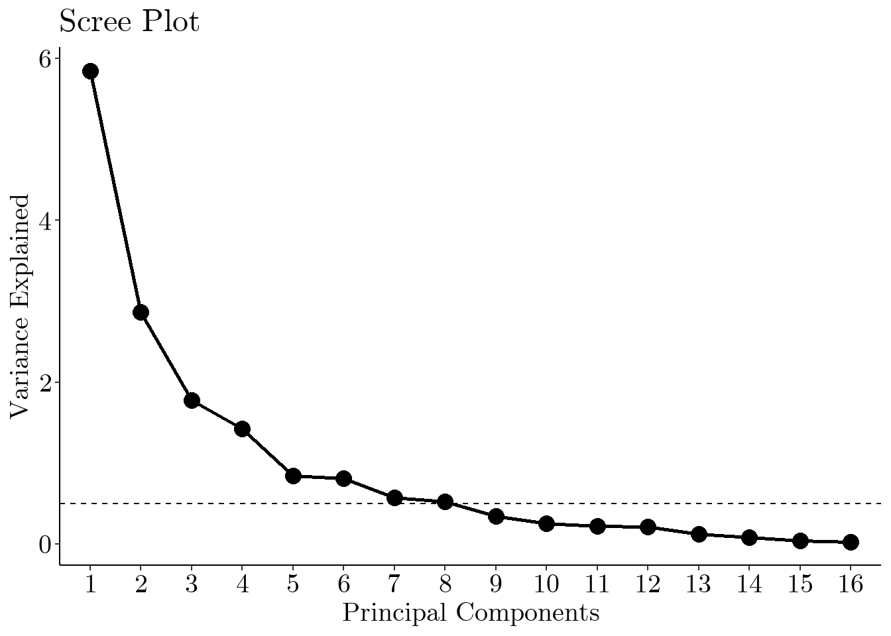
# biplot of 1st 2 PCs
#biplot(pca_varimax, main="Biplot of First Two Principal Components");# loadings plot for 1st 2 PCs
loadings_data <- as.data.frame(pca_varimax$loadings[1:16, ]);
loadings_data$BLP_var <- c("L1 History","L2 History", "L3 History", "L4 History",
"L1 Use","L2 Use","L3 Use","L4 Use",
"L1 Proficiency","L2 Proficiency","L3 Proficiency","L4 Proficiency",
"L1 Attitude","L2 Attitude","L3 Attitude","L4 Attitude");
loadings_data$lang <- c(rep(c("L1","L2","L3","L4"),times=4));
ggplot(loadings_data, aes(x=RC1, y=RC3)) +
geom_point(size=4,colour=c(rep(c(cols2[100],cols2[310],cols2[200],cols2[285]),times=4))) +
geom_text_repel(aes(label=rownames(loadings_data)),vjust=2,family="CMU Serif",
position=position_dodge(width=0.01),force=2,size=10,
colour=c(rep(c(cols2[100],cols2[310],cols2[200],cols2[285]),times=4))) +
labs(title="PCA Loadings Plot (PC1 vs PC3)",x="PC1 (L4)",y="PC3 (L3)") +
theme(panel.grid.major = element_blank(), panel.grid.minor = element_blank(),
panel.background = element_blank(), axis.line = element_line(colour = "black"),
axis.text = element_text(family = "CMU Serif", size = 30, color = "black"),
text=element_text(family="CMU Serif",size=30),legend.position="none",
legend.background=element_rect(fill=NA));Warning: `position_dodge()` requires non-overlapping x intervals.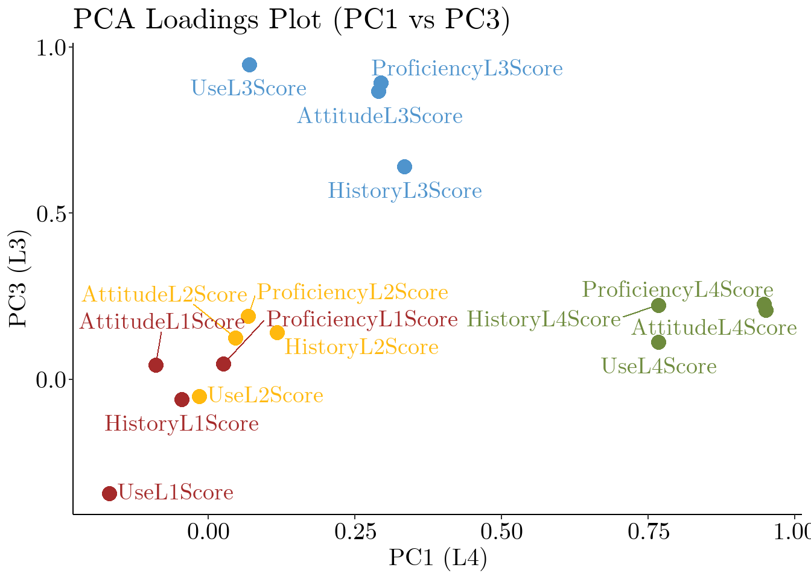
# PC1
ggplot(loadings_data, aes(x=BLP_var, y=RC1, fill=lang)) +
geom_bar(stat="identity") +
geom_hline(yintercept=0) +
scale_fill_manual(values=c("L1"=cols2[100],"L2"=cols2[310],"L3"=cols2[200],"L4"=cols2[285]),
name="") +
labs(title="PCA Loadings Plot (PC1 - L4)",y="PC1 loading",x="BLP variables") +
theme(panel.grid.major = element_blank(), panel.grid.minor = element_blank(),
panel.background = element_blank(), axis.line = element_line(colour = "black"),
axis.text = element_text(family = "CMU Serif", size = 30, color = "black"),
text=element_text(family="CMU Serif",size=30),axis.text.x=element_text(angle=45,vjust=1,hjust=1),
legend.position=c(0.05,0.9),legend.background=element_rect(fill=NA));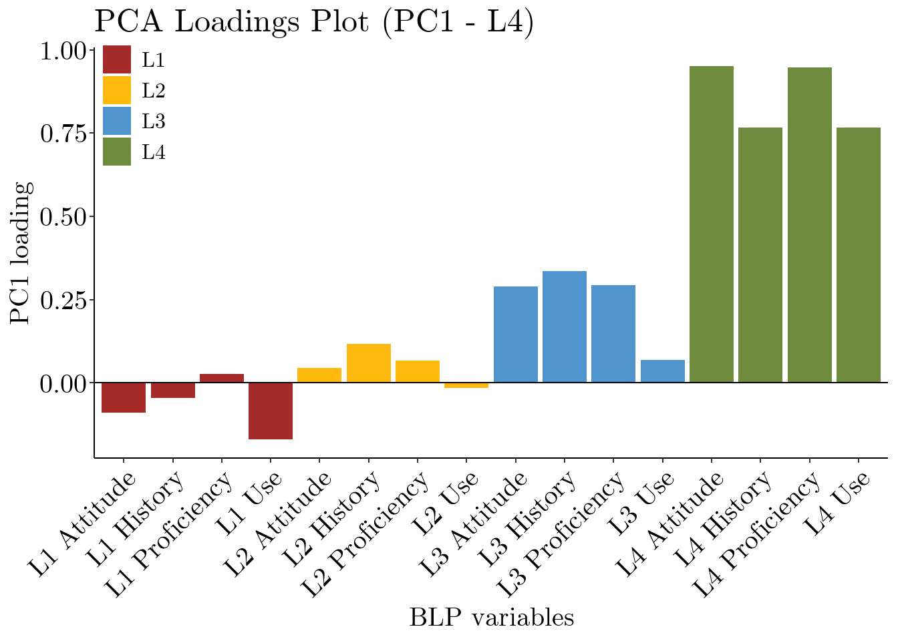
# PC3
ggplot(loadings_data, aes(x=BLP_var, y=RC3, fill=lang)) +
geom_bar(stat="identity") +
geom_hline(yintercept=0) +
scale_fill_manual(values=c("L1"=cols2[100],"L2"=cols2[310],"L3"=cols2[200],"L4"=cols2[285]),
name="") +
labs(title="PCA Loadings Plot (PC3 - L3)",y="PC3 loading",x="BLP variables") +
theme(panel.grid.major = element_blank(), panel.grid.minor = element_blank(),
panel.background = element_blank(), axis.line = element_line(colour = "black"),
axis.text = element_text(family = "CMU Serif", size = 30, color = "black"),
text=element_text(family="CMU Serif",size=30),axis.text.x=element_text(angle=45,vjust=1,hjust=1),
legend.position=c(0.05,0.9),legend.background=element_rect(fill=NA));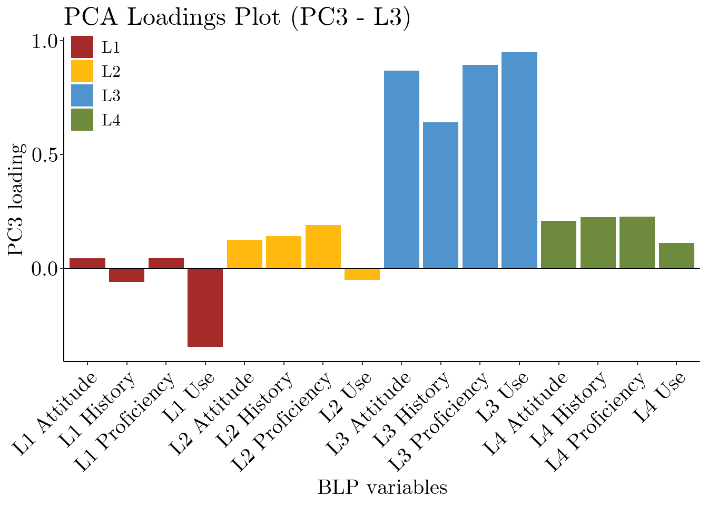
# PC2
ggplot(loadings_data, aes(x=BLP_var, y=RC2, fill=lang)) +
geom_bar(stat="identity") +
geom_hline(yintercept=0) +
scale_fill_manual(values=c("L1"=cols2[100],"L2"=cols2[310],"L3"=cols2[200],"L4"=cols2[285]),
name="") +
labs(title="PCA Loadings Plot (PC2 - L1 Use vs L2 Use)",y="PC2 loading",x="BLP variables") +
theme(panel.grid.major = element_blank(), panel.grid.minor = element_blank(),
panel.background = element_blank(), axis.line = element_line(colour = "black"),
axis.text = element_text(family = "CMU Serif", size = 30, color = "black"),
text=element_text(family="CMU Serif",size=30),axis.text.x=element_text(angle=45,vjust=1,hjust=1),
legend.position=c(0.05,0.9),legend.background=element_rect(fill=NA));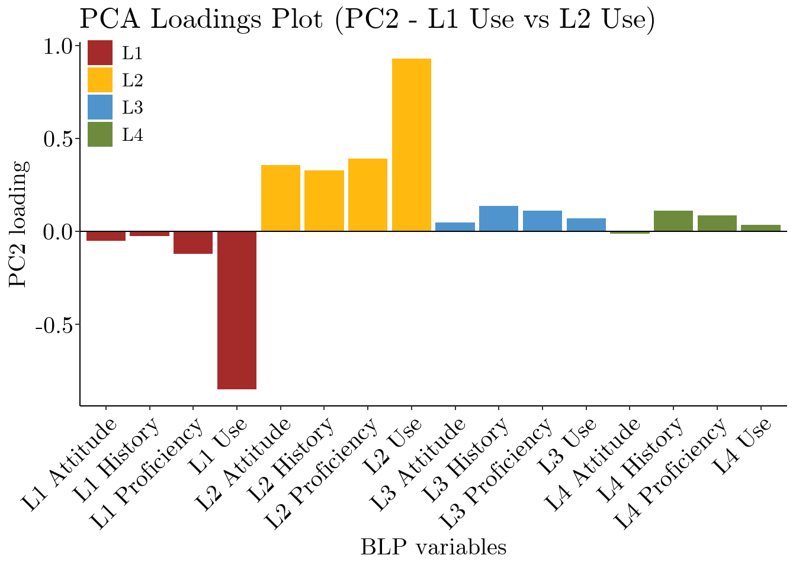
# PC8
ggplot(loadings_data, aes(x=BLP_var, y=RC8, fill=lang)) +
geom_bar(stat="identity") +
geom_hline(yintercept=0) +
scale_fill_manual(values=c("L1"=cols2[100],"L2"=cols2[310],"L3"=cols2[200],"L4"=cols2[285]),
name="") +
labs(title="PCA Loadings Plot (PC8 - L2 History)",y="PC8 loading",x="BLP variables") +
theme(panel.grid.major = element_blank(), panel.grid.minor = element_blank(),
panel.background = element_blank(), axis.line = element_line(colour = "black"),
axis.text = element_text(family = "CMU Serif", size = 30, color = "black"),
text=element_text(family="CMU Serif",size=30),axis.text.x=element_text(angle=45,vjust=1,hjust=1),
legend.position=c(0.05,0.9),legend.background=element_rect(fill=NA));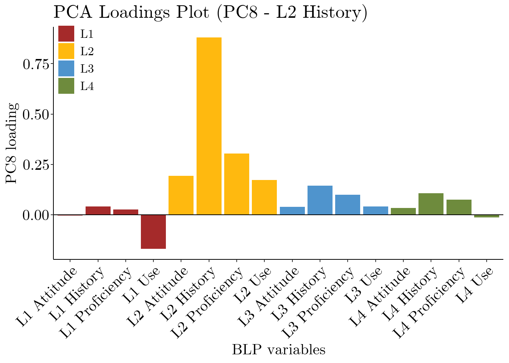
# Cluster plot of 1st 2 PCs} cluster_data <- data.frame(pca_varimax$scores[, 1:2]); colnames(cluster_data) <- c("PC1", "PC2"); ggplot(cluster_data, aes(x = PC1, y = PC2)) + geom_point() + labs(title = "PCA Cluster Plot (First Two PCs)", x = "Principal Component 1", y = "Principal Component 2") + theme_minimal();multilingual_metrics <- data.frame();
for (i in 1:length(scores_list$sbj_ID==unique(scores_list$sbj_ID))) {
temp <- scores_list[which(scores_list$sbj_ID==unique(scores_list$sbj_ID)[i]),];
sbj_ID <- temp$sbj_ID[1];
temp_scores <- as.list(temp);
temp_scores <- temp_scores[-1];
temp_scores <- unlist(temp_scores);
use_temp <- use_scores_list[which(use_scores_list$sbj_ID==unique(use_scores_list$sbj_ID)[i]),];
use_temp_scores <- as.list(use_temp);
use_temp_scores <- use_temp_scores[-1];
use_temp_scores <- unlist(use_temp_scores);
# variance
variance <- var(temp_scores,na.rm=TRUE);
# entropy
entropy <- Entropy(temp_scores,na.rm=TRUE);
use_entropy <- Entropy(use_temp_scores,na.rm=TRUE);
# multilingual experience
multiexp <- sum(temp_scores);
# L1 - L2 score
L1L2 <- abs(temp_scores[[1]]-temp_scores[[2]]);
multilingual_metrics <- rbind(multilingual_metrics,
list(sbj_ID,variance,entropy,use_entropy,multiexp,L1L2));
};
names(multilingual_metrics) <- c("sbj_ID","var","ent","use_ent","multiexp","L1_L2_diff");
data_BLP <- merge(data_BLP,multilingual_metrics,by="sbj_ID");cossim <- read.csv("distances_exp3_NOLOWSCORES.csv",header=T,sep=",");
cossim <- subset(cossim, select = -c(X)); # remove redundant column added by Python
names(cossim) <- c('sbj_ID','cossim');
data_BLP <- merge(data_BLP,cossim,by="sbj_ID");
use_cossim <- read.csv("distances_exp3_usescores.csv",header=T,sep=",");
use_cossim <- subset(use_cossim, select = -c(X)); # remove redundant column added by Python
names(use_cossim) <- c('sbj_ID','use_cossim');
data_BLP <- merge(data_BLP,use_cossim,by="sbj_ID");data_BLP$category <- "mono";
data_BLP$category[data_BLP$L2Score>0] <- "bi";
data_BLP$category[data_BLP$L3Score>0] <- "tri";
data_BLP$category[data_BLP$L4Score>0] <- "quadri";
data_BLP$category <- factor(data_BLP$category,levels=c("mono","bi","tri","quadri"));
summary(data_BLP$category); mono bi tri quadri
23 91 55 26 # n=23 monos
# n=91 bis
# n=55 tris
# n=26 quadrismixed_script_sbjID <- c('659c0682d109f8537a89fdd3','65b3c533a99b6a6b97a6f54a','65fad6c874ac75642ffc254b','66446d88662725412dc27d06','666b081591c316f46bbb3361','66ce4da62b4ca0e6ead754d6','66cf143e060992b3d817c20f','67270215b5ff7147c67afb89','673c2ec22f554dedb25d4049','67503701c4ef8958767a58d9','68c00b0de12e311f71a427fd','68c91cf657e369ac5e1a5663','68d446bc9f28065a31881b5f','690b6a1d98044838e462d048','6951d6fd93f50ed0e6363eba','6972610c74d08456b2aa6ae2','697cab1603c68e76a4d71eb0','697cabd6c4f2dee174cf2a1d','697cac029fc2c2f5a6adbc65','697caee42ccb58f80bd052aa','697cb9bb801ddf0766cdaa70','697cbe43c25ee72899c9c213','697cc570d57156b29c34b70a','697ccf682c513bd6ac96151f','697ce004a414418e49c8d32a','697ce9513b3628db72070f23','697ceef83c5a1d1a0f21c6c1','697da4b448849212fa6532e6','697f3920d3a9308de7557222','6980756db82b3f6b672c2fea','698078075d3326e1b30bd1c3','698078e0b930dfcbfde9d603','69807d4738a6a1d1a2774e67','69807e97ec7daf3eb0a4f256','69807f12172ef48a2ac7edfa','69808261911a7a9bd10cd048','6980899c7847724b431b38ac','698093a6ccef1114e376cfe5','6980962a67c3b3ba8cb2836a','69809b4956d7129d4b119b43','69809e035896ef246cbc2922','6980a4f0faef0e53cdfb97a7','6980a7096eb2c15732813632','6980b37761737090ad122e6f','6980b64569f487effa4069a3','6980b660de828c2f1a83d72f','6980b7b8619ca8828b86f21b','6980b8dbf12d0bde4727635e','6980bc0b357eb9d91de4a0e9','6980bff5e4be64da2d6c8914','6980c16f9985e39f6bcbbe3a','6980c5902273a0acf918ced1','6980d349ae34723f48ea7a3d','6980dcc1fee5670e573354f1','6981128082d28d2191154253','698119def2a23d22dac3df09','698138565bd9d4728a0a2e04','6981e24e62bb6fd0037109e5','6981ec61b00cbb326f2382a2','698242aea446c3fc40454a2d','69824df3026e0eff3dec0d0b','69824e53e214c63c2afb2c53','6983518f181a5c0bd8d4742c','69835a10b58c1a190110ab59','69835b48d4c4c9a78668c0af','698362eea52b5dadb6f3197b','69839df6b3f83b9c02ac8234','69839e45e8ca9d3863565d6d','6984ab8a88a32e8274e0351b','6984c939f133acffbbd3b36a','6985a1a2a9b075341a3e65b0','69863c0a716ec6381ad4d1fb','69865b7be282f1756be7d697','698732a17e9271820246153f','6989baec35fa286279b29ca5','6989bc7b28c71e3280a6e7f6','6989c0c01b2e93d5d8f2e20a','6989c9427f6c4ffb769fad68','6989da604f75e4c44ffefa17','6989de5cb788d8dfc4a2641e','6989f4760694ce91b5bc35f7','698a196b6438a03eb3cce8f3','698a4bd40711b1611e7f96ca','698b4e2840974dba43e185e8','698b57a46bf6a0eee98c0c04','698cb68a1093d20f7c6087b7','698dd411bc2ef10a72a75749','698f277e7eb87d0f843d6bf7','69907667f821728d219ce06d','6998a16a9147ebdebf871a82','699c7585ca22df8b1bf087fe','69a56a100ee2dc518e8c415c','69a81ed11957a0f6e26144d2','69aeec32d642e2a0092f6452','69aeee44187fdda005ab835b','69af1632fa81c6ae5d2df790','69af34e771ce9d065c0d9d80','69b52f9256ef2162a97fbebc','69b81e444b794cbe8947b065','69bc58df28cbddd60a341a03','69c147cc355c3af96875e729','69c4d00086c2b4a1a8dc2191','69d25ddbd1a5851c7aa92ad3','69dcfc3bcb3d5759729e920e','69e50234165d341516973996');
# n=105
sbj_IDs_included <- list(unique(data_BLP$sbj_ID))[[1]];
same_script_sbjID <- sbj_IDs_included[!sbj_IDs_included %in% mixed_script_sbjID];
# n=90
data_BLP$script[data_BLP$sbj_ID %in% mixed_script_sbjID] <- 'mixed';
data_BLP$script[data_BLP$sbj_ID %in% same_script_sbjID] <- 'same';
data_BLP$script <- factor(data_BLP$script,levels=c("same","mixed"));#var
summary(data_BLP$var); Min. 1st Qu. Median Mean 3rd Qu. Max.
123.8 6960.9 8791.2 8245.7 9996.0 12171.6 var(data_BLP$var);[1] 6124432#ent
cor.test(data_BLP$var,data_BLP$ent,method="pearson");
Pearson's product-moment correlation
data: data_BLP$var and data_BLP$ent
t = -16.839, df = 193, p-value < 2.2e-16
alternative hypothesis: true correlation is not equal to 0
95 percent confidence interval:
-0.8227139 -0.7075507
sample estimates:
cor
-0.7713734 # t=-16.84 df=193 p<2.2e-16 CI=[-0.82;-0.71] est=-0.77
# significantly very strongly negatively correlated
ggplot(data_BLP, aes(x=sbj_ID,y=ent,colour=category)) +
geom_point(size=4) +
labs(x = "Participant ID", y = "Multilingual balance (entropy)") +
theme(panel.grid.major = element_blank(), panel.grid.minor = element_blank(),
panel.background = element_blank(), axis.line = element_line(colour = "black"),
axis.text = element_text(family = "CMU Serif", size = 30, color = "black"),
axis.text.x=element_blank(),
text=element_text(family="CMU Serif",size=30),
legend.position=c(0.15,0.25),legend.background=element_rect(fill=NA)) +
scale_color_manual(values=c(cols2[100],cols2[150],cols2[200],cols2[250]),
name="Category",
labels=c("Monolingual","Bilingual","Trilingual","Quadrilingual"));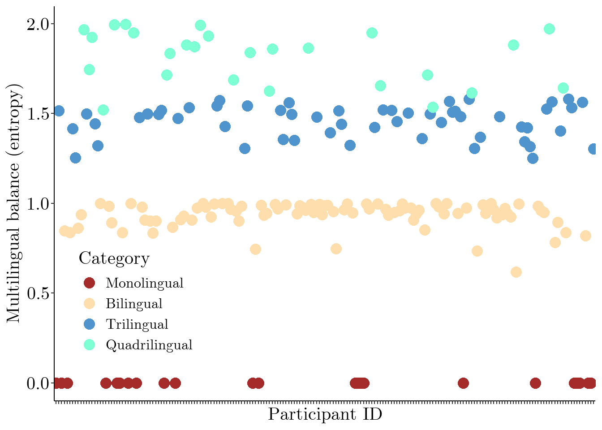
hist(data_BLP$ent,breaks=1000,xlab="Multilingual balance (entropy)",
main="",cex.lab=2,cex.axis=1.5);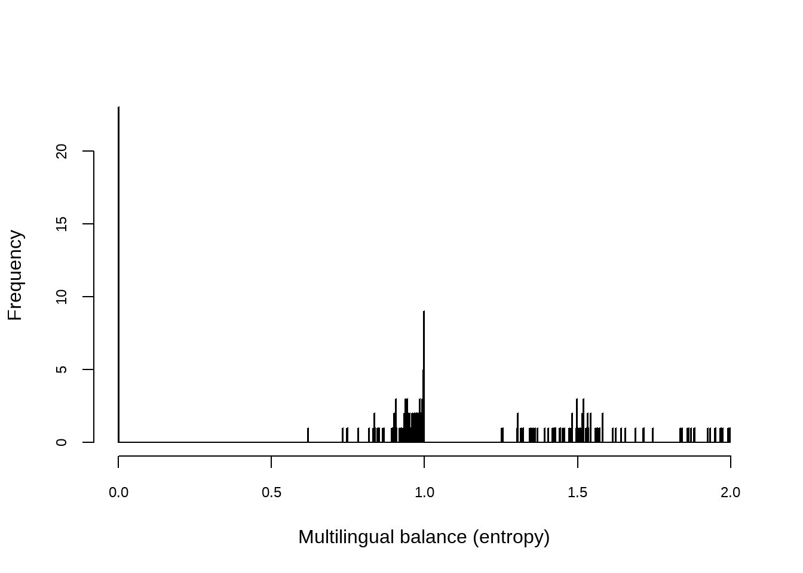
# lots at 0 and 1#use_ent
summary(data_BLP$use_ent); Min. 1st Qu. Median Mean 3rd Qu. Max.
0.0000 0.5842 0.9044 0.8716 1.2709 1.9494 var(data_BLP$use_ent);[1] 0.2271546#mutliexp
summary(data_BLP$multiexp); Min. 1st Qu. Median Mean 3rd Qu. Max.
179.3 301.2 336.4 347.6 397.5 643.3 var(data_BLP$multiexp);[1] 7533.055#L1_L2_diff
summary(data_BLP$L1_L2_diff); Min. 1st Qu. Median Mean 3rd Qu. Max.
1.812 48.496 76.462 86.753 110.295 217.940 var(data_BLP$L1_L2_diff);[1] 3016.227#cossim
summary(data_BLP$cossim); Min. 1st Qu. Median Mean 3rd Qu. Max.
0.8407 0.9412 0.9695 0.9621 0.9935 1.0000 var(data_BLP$cossim);[1] 0.00128142ggplot(data_BLP, aes(x=sbj_ID,y=cossim,colour=category)) +
geom_point(size=4) +
labs(x = "Participant ID", y = "Multilingual balance (cosine similarity)") +
theme(panel.grid.major = element_blank(), panel.grid.minor = element_blank(),
panel.background = element_blank(), axis.line = element_line(colour = "black"),
axis.text = element_text(family = "CMU Serif", size = 30, color = "black"),
axis.text.x=element_blank(),
text=element_text(family="CMU Serif",size=30),
legend.position=c(0.15,0.15),legend.background=element_rect(fill=NA)) +
scale_color_manual(values=c(cols2[100],cols2[150],cols2[200],cols2[250]),
name="Category",
labels=c("Monolingual","Bilingual","Trilingual","Quadrilingual"));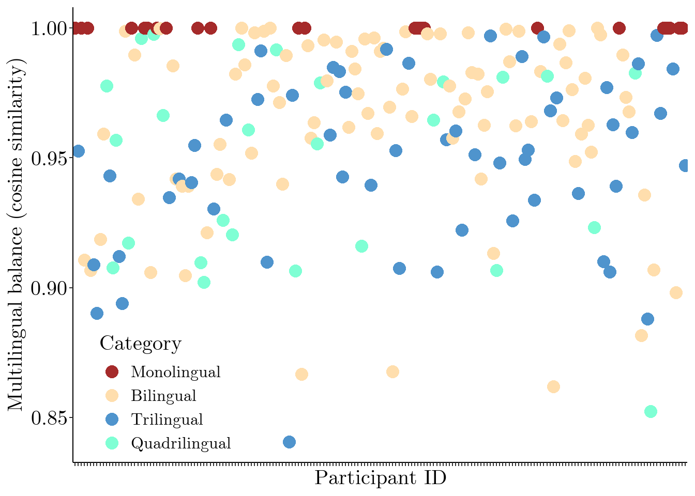
hist(data_BLP$cossim,breaks=1000,
xlab="Multilingual balance (cosine similarity)",main="",
cex.lab=2,cex.axis=1.5);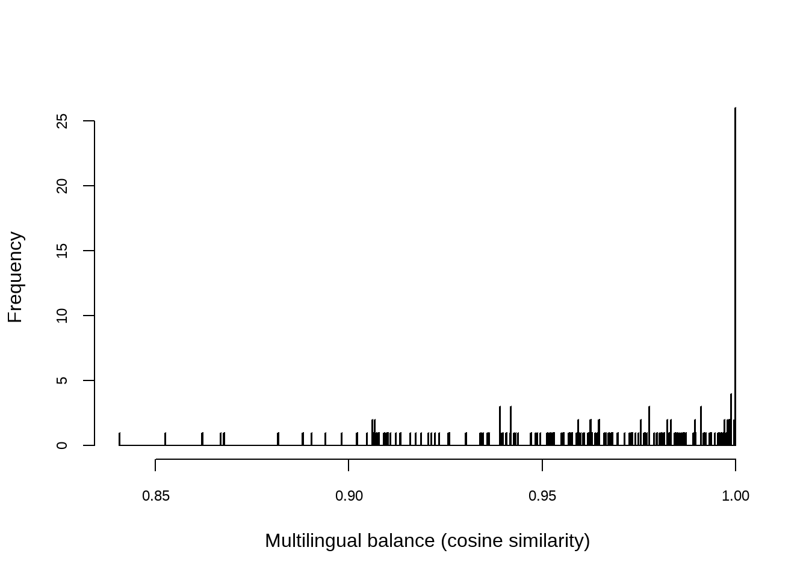
# lots at 1
hist(data_BLP$cossim[data_BLP$category!="mono"],breaks=1000,
xlab="Multilingual balance (cosine similarity)",main="",
cex.lab=2,cex.axis=1.5);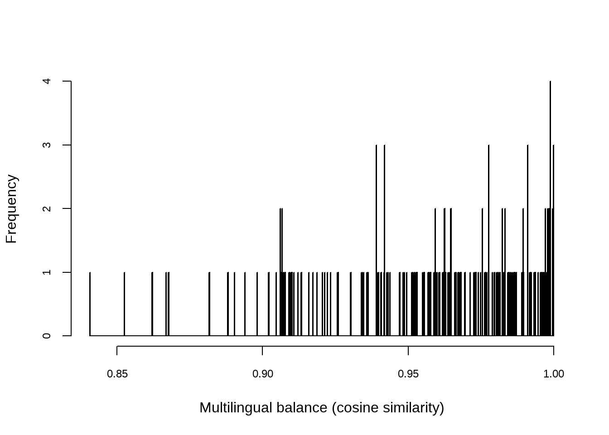
# exponential distribution
ggplot(data_BLP, aes(x=cossim,y=ent,colour=category)) +
geom_point(size=4) +
labs(x = "Multilingual balance (cosine similarity)", y = "Multilingual balance (entropy)") +
theme(panel.grid.major = element_blank(), panel.grid.minor = element_blank(),
panel.background = element_blank(), axis.line = element_line(colour = "black"),
axis.text = element_text(family = "CMU Serif", size = 30, color = "black"),
text=element_text(family="CMU Serif",size=30),
legend.position=c(0.17,0.2),legend.background=element_rect(fill=NA)) +
scale_color_manual(values=c(cols2[100],cols2[150],cols2[200],cols2[250]),
name="Category",
labels=c("Monolingual (n=22)","Bilingual (n=70)",
"Trilingual (n=51)","Quadrilingual (n=41)"));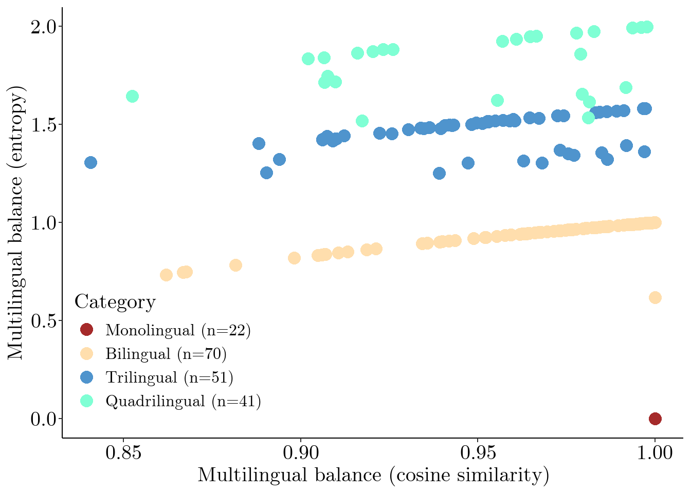
#use_cossim
summary(data_BLP$use_cossim); Min. 1st Qu. Median Mean 3rd Qu. Max.
0.6787 0.7962 0.8684 0.8681 0.9430 1.0000 var(data_BLP$use_cossim);[1] 0.00815696cor.test(data_BLP$cossim,data_BLP$use_cossim,method="pearson");
Pearson's product-moment correlation
data: data_BLP$cossim and data_BLP$use_cossim
t = 11.345, df = 193, p-value < 2.2e-16
alternative hypothesis: true correlation is not equal to 0
95 percent confidence interval:
0.539992 0.709929
sample estimates:
cor
0.6325121 # significantly strongly positively correlated#ent & multiexp
cor.test(data_BLP$ent,data_BLP$multiexp,method="pearson");
Pearson's product-moment correlation
data: data_BLP$ent and data_BLP$multiexp
t = 32.954, df = 193, p-value < 2.2e-16
alternative hypothesis: true correlation is not equal to 0
95 percent confidence interval:
0.8971062 0.9402371
sample estimates:
cor
0.9214639 # significantly very strongly positively correlated
ggplot(data_BLP, aes(x=multiexp,y=ent,colour=category)) +
geom_point(size=4) +
labs(x = "Multilingual experience", y = "Multilingual balance (entropy)") +
theme(panel.grid.major = element_blank(), panel.grid.minor = element_blank(),
panel.background = element_blank(), axis.line = element_line(colour = "black"),
axis.text = element_text(family = "CMU Serif", size = 30, color = "black"),
text=element_text(family="CMU Serif",size=30),
legend.position=c(0.8,0.2),legend.background=element_rect(fill=NA)) +
scale_color_manual(values=c(cols2[100],cols2[150],cols2[200],cols2[250]),
name="Category",
labels=c("Monolingual (n=22)","Bilingual (n=70)",
"Trilingual (n=51)","Quadrilingual (n=41)"));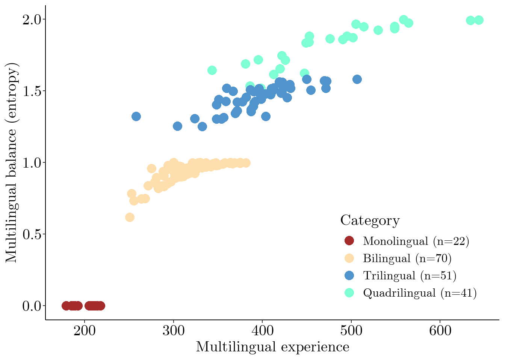
#cossim & multiexp
cor.test(data_BLP$cossim,data_BLP$multiexp,method="pearson");
Pearson's product-moment correlation
data: data_BLP$cossim and data_BLP$multiexp
t = -1.4644, df = 193, p-value = 0.1447
alternative hypothesis: true correlation is not equal to 0
95 percent confidence interval:
-0.24177995 0.03621688
sample estimates:
cor
-0.1048289 # t=-1.46 df=193 p=0.14 CI=[-0.24;0.04] est=-0.10
# not significant
ggplot(data_BLP, aes(x=cossim,y=multiexp,colour=category)) +
geom_point(size=4) +
labs(y = "Multilingual experience", x = "Multilingual balance (cosine similarity)") +
theme(panel.grid.major = element_blank(), panel.grid.minor = element_blank(),
panel.background = element_blank(), axis.line = element_line(colour = "black"),
axis.text = element_text(family = "CMU Serif", size = 30, color = "black"),
text=element_text(family="CMU Serif",size=30),
legend.position=c(0.17,0.8),legend.background=element_rect(fill=NA)) +
scale_color_manual(values=c(cols2[100],cols2[150],cols2[200],cols2[250]),
name="Category",
labels=c("Monolingual (n=22)","Bilingual (n=70)",
"Trilingual (n=51)","Quadrilingual (n=41)"));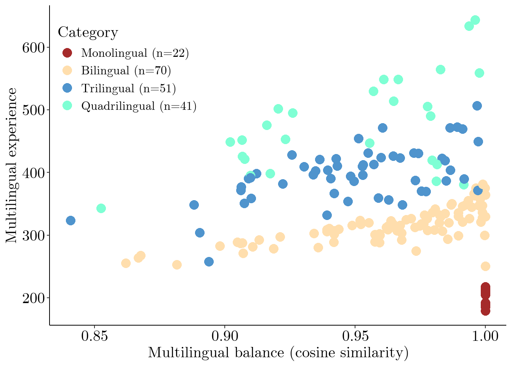
ggplot(data_BLP, aes(x=cossim,y=multiexp)) +
geom_point(size=4) +
labs(y = "Multilingual experience", x = "Multilingual balance (cosine similarity)") +
theme(panel.grid.major = element_blank(), panel.grid.minor = element_blank(),
panel.background = element_blank(), axis.line = element_line(colour = "black"),
axis.text = element_text(family = "CMU Serif", size = 30, color = "black"),
text=element_text(family="CMU Serif",size=30),
legend.position=c(0.17,0.8),legend.background=element_rect(fill=NA));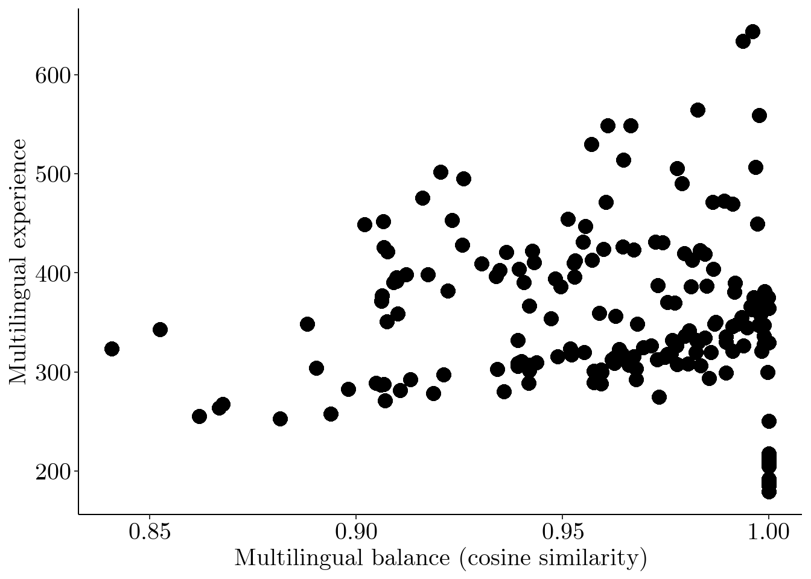
ggplot(data_BLP, aes(x=ent,y=multiexp)) +
geom_point(size=4) +
labs(y = "Multilingual experience", x = "Multilingual balance (entropy)") +
theme(panel.grid.major = element_blank(), panel.grid.minor = element_blank(),
panel.background = element_blank(), axis.line = element_line(colour = "black"),
axis.text = element_text(family = "CMU Serif", size = 30, color = "black"),
text=element_text(family="CMU Serif",size=30),
legend.position=c(0.17,0.8),legend.background=element_rect(fill=NA));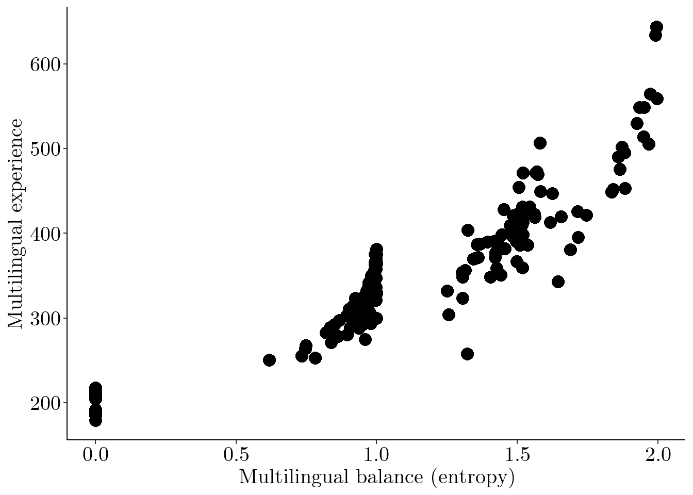
#cossim & ent
cor.test(data_BLP$cossim,data_BLP$ent,method="pearson");
Pearson's product-moment correlation
data: data_BLP$cossim and data_BLP$ent
t = -5.1058, df = 193, p-value = 7.869e-07
alternative hypothesis: true correlation is not equal to 0
95 percent confidence interval:
-0.4630294 -0.2148629
sample estimates:
cor
-0.3449606 # no monos:
cor.test(data_BLP$cossim[data_BLP$category!="mono"],data_BLP$ent[data_BLP$category!="mono"],method="pearson");
Pearson's product-moment correlation
data: data_BLP$cossim[data_BLP$category != "mono"] and data_BLP$ent[data_BLP$category != "mono"]
t = -1.0019, df = 170, p-value = 0.3178
alternative hypothesis: true correlation is not equal to 0
95 percent confidence interval:
-0.22368540 0.07386586
sample estimates:
cor
-0.07661538 # no corr
#ent & use_ent
cor.test(data_BLP$ent,data_BLP$use_ent,method="pearson");
Pearson's product-moment correlation
data: data_BLP$ent and data_BLP$use_ent
t = 31.433, df = 193, p-value < 2.2e-16
alternative hypothesis: true correlation is not equal to 0
95 percent confidence interval:
0.8883027 0.9349974
sample estimates:
cor
0.9146507 # significantly strongly positively correlated# correlations of multilingual metrics
M <- cor(subset(data_BLP,select=c('var','ent','use_ent','multiexp','L1_L2_diff','cossim','use_cossim')));
png('exp3_corrPlot_multimetrics.png', width=1000, height=1000);
corrplot::corrplot(M,type="lower", order="original", diag=T, method="color", outline=F, addgrid.col=F, tl.col='black', tl.pos='ld', addCoef.col='black',number.cex=1.5,tl.cex=1.5);
dev.off();png
2 grid.raster(readPNG("exp3_corrPlot_multimetrics.png"));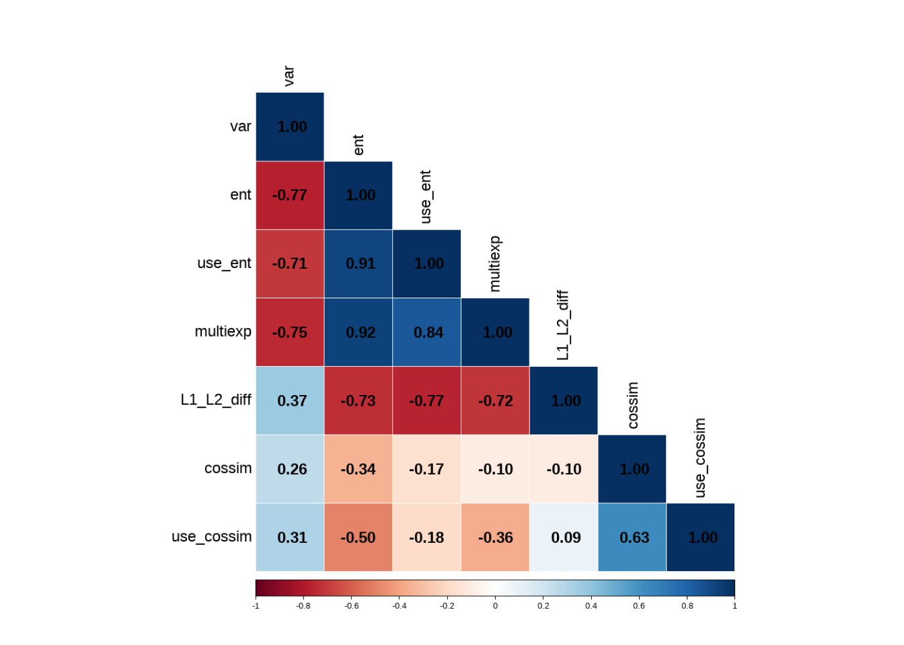
png('exp3_corrPlot_multimetrics_hclust.png', width=1000, height=1000);
corrplot::corrplot(M,type="lower", order="hclust", diag=T, method="color", outline=F, addgrid.col=F, tl.col='black', tl.pos='ld', addCoef.col='black', number.cex=1.5,tl.cex=1.5);
dev.off();png
2 grid.raster(readPNG("exp3_corrPlot_multimetrics_hclust.png"));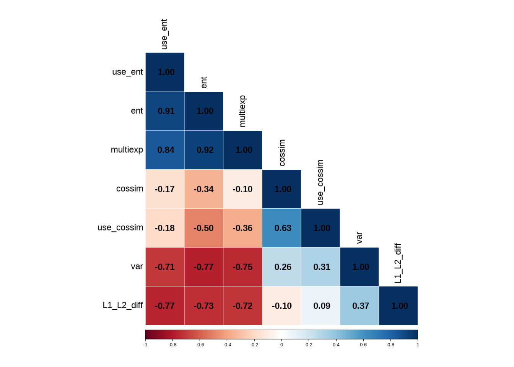
# export BLP dataframe
write.csv(data_BLP,"BASL_exp3_BLP.csv", row.names = FALSE);# combining BLP & testing scores
data_BLP_shortened <- subset(data_BLP, select=c(sbj_ID,Gender,Age,HistoryL1Score,HistoryL2Score,HistoryL3Score,HistoryL4Score,UseL1Score,UseL2Score,UseL3Score,UseL4Score,ProficiencyL1Score,ProficiencyL2Score,ProficiencyL3Score,ProficiencyL4Score,AttitudeL1Score,AttitudeL2Score,AttitudeL3Score,AttitudeL4Score,L1Score,L2Score,L3Score,L4Score,var,ent,use_ent,multiexp,L1_L2_diff,cossim,use_cossim,RC1_L4,RC3_L3,RC2_use_L1vsL2,RC8_hist_L2,category,script));
data_BLP_testing <- list(data_testing,data_BLP_shortened) %>% reduce(inner_join, by='sbj_ID');
data_BLP_familiarity <- list(data_familiarity,data_BLP_shortened) %>% reduce(inner_join, by='sbj_ID');# correlations of BLP metrics with testing scores
M <- cor(subset(data_BLP_testing,select=c(score_2M,dprime,c,
var,ent,use_ent,multiexp,L1_L2_diff,cossim,use_cossim,
RC1_L4,RC3_L3,RC2_use_L1vsL2,RC8_hist_L2)));
png('exp3_corrPlot_BLP_testing.png', width=1000, height=1000);
corrplot::corrplot(M,type="lower", order="original", diag=T, method="color", outline=F, addgrid.col=F, tl.col='black', tl.pos='ld', addCoef.col='black',tl.cex=1.5);
dev.off();png
2 grid.raster(readPNG("exp3_corrPlot_BLP_testing.png"));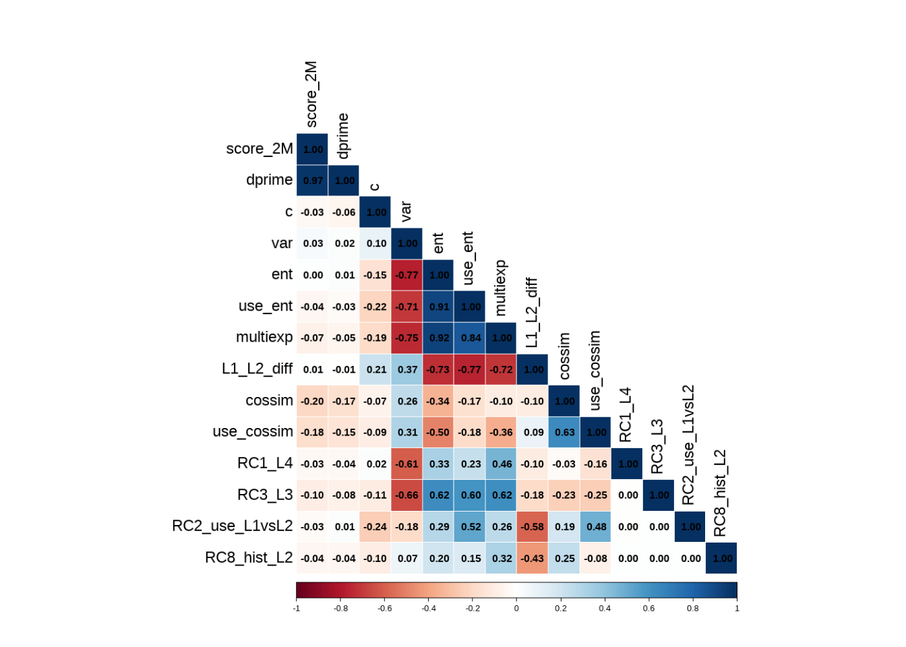
png('exp3_corrPlot_BLP_testing_hclust.png', width=1000, height=1000);
corrplot::corrplot(M,type="lower", order="hclust", diag=T, method="color", outline=F, addgrid.col=F, tl.col='black', tl.pos='ld', addCoef.col='black',tl.cex=1.5);
dev.off();png
2 grid.raster(readPNG("exp3_corrPlot_BLP_testing_hclust.png"));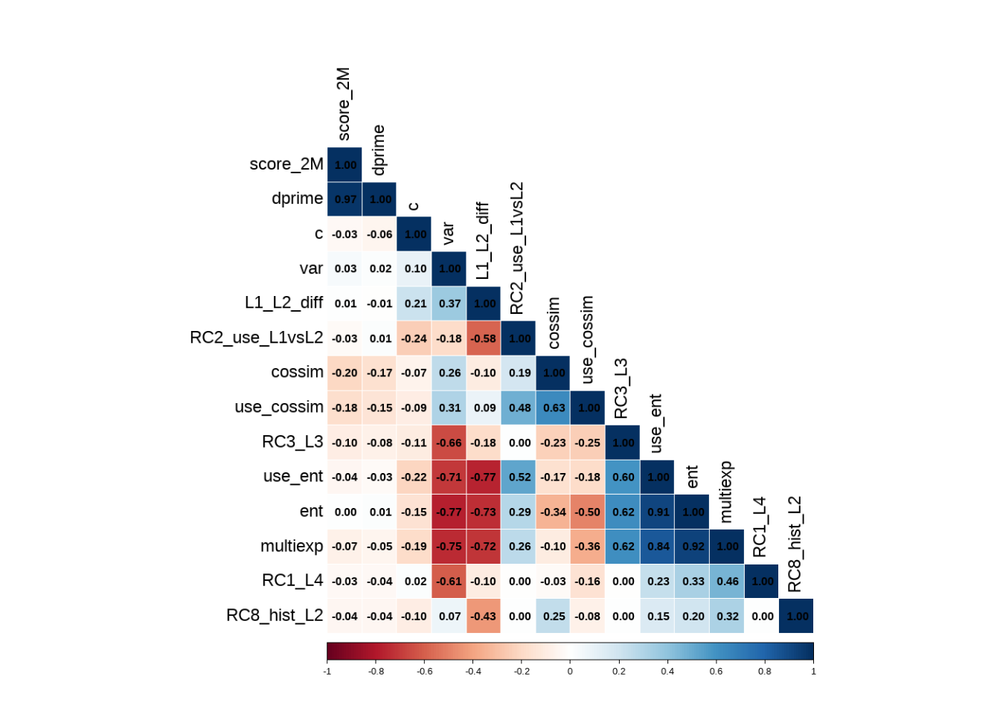
# export BLP testing dataframe
write.csv(data_BLP_testing,"BASL_exp3_BLPtesting.csv", row.names = FALSE);Testing Conditions
lm_TestingConditions <- glmer(observed ~ scale(trialn) + testing_condition + (1|sbj_ID), data=subset(data_BLP_testing, rt>300 & rt<3000), family='binomial');
summary(lm_TestingConditions);Generalized linear mixed model fit by maximum likelihood (Laplace
Approximation) [glmerMod]
Family: binomial ( logit )
Formula: observed ~ scale(trialn) + testing_condition + (1 | sbj_ID)
Data: subset(data_BLP_testing, rt > 300 & rt < 3000)
AIC BIC logLik -2*log(L) df.resid
28461.6 28501.6 -14225.8 28451.6 22103
Scaled residuals:
Min 1Q Median 3Q Max
-3.6916 -0.8984 0.4936 0.8466 2.5846
Random effects:
Groups Name Variance Std.Dev.
sbj_ID (Intercept) 0.2831 0.5321
Number of obs: 22108, groups: sbj_ID, 195
Fixed effects:
Estimate Std. Error z value Pr(>|z|)
(Intercept) -0.49889 0.04553 -10.956 <2e-16 ***
scale(trialn) -0.05732 0.01428 -4.013 6e-05 ***
testing_condition1M 0.62580 0.03446 18.162 <2e-16 ***
testing_condition2M 1.25120 0.03553 35.218 <2e-16 ***
---
Signif. codes: 0 '***' 0.001 '**' 0.01 '*' 0.05 '.' 0.1 ' ' 1
Correlation of Fixed Effects:
(Intr) scl(t) tst_1M
scale(trln) 0.012
tstng_cnd1M -0.389 -0.012
tstng_cnd2M -0.379 -0.024 0.502effect_conditions <- as.data.frame(effect('testing_condition',
lm_TestingConditions, confint=list(alpha=.95)),
xlevels = list(testing_condition=c('0M','1M','2M')));Warning in Analyze.model(focal.predictors, mod, xlevels, default.levels, : the
predictor scale(trialn) is a one-column matrix that was converted to a vectoreffect_conditions testing_condition fit se lower upper
1 0M 0.3778016 0.010703542 0.3570630 0.3989973
2 1M 0.5316861 0.011246281 0.5095962 0.5536524
3 2M 0.6796809 0.009998801 0.6597751 0.6989534export_output(model=lm_TestingConditions,name="Exp. 3 `Yes' responses - Conditions",
pred_levels=c('0M','1M','2M'),pred_type='categorical',
outcome_levels=c('0M','1M','2M'));Warning: the 'findbars' function has moved to the reformulas package. Please update your imports, or ask an upstream package maintainer to do so.
This warning is displayed once per session.Gender
lm_Gender <- glmer(observed ~ scale(trialn) + testing_condition*Gender + (1|sbj_ID), data=subset(data_BLP_testing, rt>300 & rt<3000), family='binomial');
summary(lm_Gender);Generalized linear mixed model fit by maximum likelihood (Laplace
Approximation) [glmerMod]
Family: binomial ( logit )
Formula: observed ~ scale(trialn) + testing_condition * Gender + (1 |
sbj_ID)
Data: subset(data_BLP_testing, rt > 300 & rt < 3000)
AIC BIC logLik -2*log(L) df.resid
28459.2 28523.2 -14221.6 28443.2 22100
Scaled residuals:
Min 1Q Median 3Q Max
-3.6505 -0.8991 0.4962 0.8458 2.6838
Random effects:
Groups Name Variance Std.Dev.
sbj_ID (Intercept) 0.2789 0.5281
Number of obs: 22108, groups: sbj_ID, 195
Fixed effects:
Estimate Std. Error z value Pr(>|z|)
(Intercept) -0.42879 0.05364 -7.994 1.31e-15 ***
scale(trialn) -0.05682 0.01429 -3.978 6.96e-05 ***
testing_condition1M 0.58275 0.04074 14.304 < 2e-16 ***
testing_condition2M 1.19941 0.04206 28.518 < 2e-16 ***
GenderWoman -0.24538 0.10022 -2.448 0.0144 *
testing_condition1M:GenderWoman 0.15162 0.07644 1.984 0.0473 *
testing_condition2M:GenderWoman 0.18041 0.07864 2.294 0.0218 *
---
Signif. codes: 0 '***' 0.001 '**' 0.01 '*' 0.05 '.' 0.1 ' ' 1
Correlation of Fixed Effects:
(Intr) scl(t) tst_1M tst_2M GndrWm t_1M:G
scale(trln) 0.013
tstng_cnd1M -0.387 -0.015
tstng_cnd2M -0.377 -0.027 0.497
GenderWoman -0.535 -0.006 0.207 0.201
tstng_1M:GW 0.206 0.009 -0.533 -0.265 -0.398
tstng_2M:GW 0.201 0.012 -0.266 -0.535 -0.389 0.509export_output(model=lm_Gender,name="Exp. 3 `Yes' responses - Gender",
pred_levels=c('Man','Woman'),pred_type='categorical',
outcome_levels=c('0M','1M','2M'));Age
lm_Age <- glmer(observed ~ scale(trialn) + testing_condition*scale(Age) + (1|sbj_ID), data=subset(data_BLP_testing, rt>300 & rt<3000), family='binomial');
summary(lm_Age);Generalized linear mixed model fit by maximum likelihood (Laplace
Approximation) [glmerMod]
Family: binomial ( logit )
Formula: observed ~ scale(trialn) + testing_condition * scale(Age) + (1 |
sbj_ID)
Data: subset(data_BLP_testing, rt > 300 & rt < 3000)
AIC BIC logLik -2*log(L) df.resid
28463.9 28527.9 -14223.9 28447.9 22100
Scaled residuals:
Min 1Q Median 3Q Max
-3.6022 -0.8976 0.4885 0.8473 2.5991
Random effects:
Groups Name Variance Std.Dev.
sbj_ID (Intercept) 0.2822 0.5313
Number of obs: 22108, groups: sbj_ID, 195
Fixed effects:
Estimate Std. Error z value Pr(>|z|)
(Intercept) -0.499051 0.045482 -10.973 < 2e-16 ***
scale(trialn) -0.057557 0.014285 -4.029 5.6e-05 ***
testing_condition1M 0.625957 0.034457 18.166 < 2e-16 ***
testing_condition2M 1.252415 0.035544 35.236 < 2e-16 ***
scale(Age) 0.009627 0.045476 0.212 0.8323
testing_condition1M:scale(Age) 0.027143 0.034461 0.788 0.4309
testing_condition2M:scale(Age) 0.059269 0.035301 1.679 0.0932 .
---
Signif. codes: 0 '***' 0.001 '**' 0.01 '*' 0.05 '.' 0.1 ' ' 1
Correlation of Fixed Effects:
(Intr) scl(t) tst_1M tst_2M scl(A) t_1M:(
scale(trln) 0.012
tstng_cnd1M -0.389 -0.013
tstng_cnd2M -0.379 -0.024 0.501
scale(Age) 0.000 0.005 -0.002 -0.003
tstn_1M:(A) -0.002 -0.011 0.010 0.004 -0.392
tstn_2M:(A) -0.003 -0.010 0.004 0.023 -0.385 0.507export_output(model=lm_Age,name="Exp. 3 `Yes' responses - Age",
pred_levels=c('scale(Age)'),pred_type='continuous',
outcome_levels=c('0M','1M','2M'));PC1
lm_RC1 <- glmer(observed ~ scale(trialn) + testing_condition*RC1_L4 + (1|sbj_ID), data=subset(data_BLP_testing, rt>300 & rt<3000), family='binomial');
summary(lm_RC1);Generalized linear mixed model fit by maximum likelihood (Laplace
Approximation) [glmerMod]
Family: binomial ( logit )
Formula: observed ~ scale(trialn) + testing_condition * RC1_L4 + (1 |
sbj_ID)
Data: subset(data_BLP_testing, rt > 300 & rt < 3000)
AIC BIC logLik -2*log(L) df.resid
28458.1 28522.2 -14221.1 28442.1 22100
Scaled residuals:
Min 1Q Median 3Q Max
-3.6978 -0.8986 0.4923 0.8482 2.5979
Random effects:
Groups Name Variance Std.Dev.
sbj_ID (Intercept) 0.2838 0.5328
Number of obs: 22108, groups: sbj_ID, 195
Fixed effects:
Estimate Std. Error z value Pr(>|z|)
(Intercept) -0.49840 0.04558 -10.935 < 2e-16 ***
scale(trialn) -0.05760 0.01429 -4.032 5.54e-05 ***
testing_condition1M 0.62547 0.03446 18.148 < 2e-16 ***
testing_condition2M 1.25121 0.03554 35.205 < 2e-16 ***
RC1_L4 0.05095 0.04710 1.082 0.27943
testing_condition1M:RC1_L4 -0.06955 0.03548 -1.960 0.04996 *
testing_condition2M:RC1_L4 -0.11134 0.03654 -3.047 0.00231 **
---
Signif. codes: 0 '***' 0.001 '**' 0.01 '*' 0.05 '.' 0.1 ' ' 1
Correlation of Fixed Effects:
(Intr) scl(t) tst_1M tst_2M RC1_L4 t_1M:R
scale(trln) 0.012
tstng_cnd1M -0.389 -0.012
tstng_cnd2M -0.379 -0.024 0.502
RC1_L4 0.011 -0.007 -0.003 -0.003
t_1M:RC1_L4 -0.003 0.004 0.003 0.001 -0.390
t_2M:RC1_L4 -0.003 0.008 0.001 -0.007 -0.379 0.495export_output(model=lm_RC1,name="Exp. 3 `Yes' responses - PC1 (L4)",
pred_levels=c('PC1_L4'),pred_type='continuous',
outcome_levels=c('0M','1M','2M'));PC3
lm_RC3 <- glmer(observed ~ scale(trialn) + testing_condition*RC3_L3 + (1|sbj_ID), data=subset(data_BLP_testing, rt>300 & rt<3000), family='binomial');
summary(lm_RC3);Generalized linear mixed model fit by maximum likelihood (Laplace
Approximation) [glmerMod]
Family: binomial ( logit )
Formula: observed ~ scale(trialn) + testing_condition * RC3_L3 + (1 |
sbj_ID)
Data: subset(data_BLP_testing, rt > 300 & rt < 3000)
AIC BIC logLik -2*log(L) df.resid
28450.5 28514.5 -14217.2 28434.5 22100
Scaled residuals:
Min 1Q Median 3Q Max
-3.6284 -0.8988 0.4910 0.8474 2.6508
Random effects:
Groups Name Variance Std.Dev.
sbj_ID (Intercept) 0.2812 0.5303
Number of obs: 22108, groups: sbj_ID, 195
Fixed effects:
Estimate Std. Error z value Pr(>|z|)
(Intercept) -0.50142 0.04544 -11.035 < 2e-16 ***
scale(trialn) -0.05697 0.01429 -3.987 6.7e-05 ***
testing_condition1M 0.63041 0.03450 18.271 < 2e-16 ***
testing_condition2M 1.25680 0.03560 35.307 < 2e-16 ***
RC3_L3 -0.03361 0.04609 -0.729 0.465932
testing_condition1M:RC3_L3 0.11954 0.03604 3.317 0.000910 ***
testing_condition2M:RC3_L3 0.13180 0.03742 3.522 0.000428 ***
---
Signif. codes: 0 '***' 0.001 '**' 0.01 '*' 0.05 '.' 0.1 ' ' 1
Correlation of Fixed Effects:
(Intr) scl(t) tst_1M tst_2M RC3_L3 t_1M:R
scale(trln) 0.012
tstng_cnd1M -0.390 -0.012
tstng_cnd2M -0.380 -0.024 0.501
RC3_L3 0.019 0.004 -0.018 -0.018
t_1M:RC3_L3 -0.018 0.001 0.047 0.024 -0.395
t_2M:RC3_L3 -0.018 0.004 0.024 0.057 -0.382 0.493export_output(model=lm_RC3,name="Exp. 3 `Yes' responses - PC3 (L3)",
pred_levels=c('PC3_L3'),pred_type='continuous',
outcome_levels=c('0M','1M','2M'));PC2
lm_RC2 <- glmer(observed ~ scale(trialn) + testing_condition*RC2_use_L1vsL2 + (1|sbj_ID), data=subset(data_BLP_testing, rt>300 & rt<3000), family='binomial');
summary(lm_RC2);Generalized linear mixed model fit by maximum likelihood (Laplace
Approximation) [glmerMod]
Family: binomial ( logit )
Formula: observed ~ scale(trialn) + testing_condition * RC2_use_L1vsL2 +
(1 | sbj_ID)
Data: subset(data_BLP_testing, rt > 300 & rt < 3000)
AIC BIC logLik -2*log(L) df.resid
28437.4 28501.5 -14210.7 28421.4 22100
Scaled residuals:
Min 1Q Median 3Q Max
-3.5057 -0.8950 0.4958 0.8512 2.5513
Random effects:
Groups Name Variance Std.Dev.
sbj_ID (Intercept) 0.2792 0.5284
Number of obs: 22108, groups: sbj_ID, 195
Fixed effects:
Estimate Std. Error z value Pr(>|z|)
(Intercept) -0.49797 0.04531 -10.991 < 2e-16 ***
scale(trialn) -0.05553 0.01430 -3.884 0.000103 ***
testing_condition1M 0.62475 0.03446 18.132 < 2e-16 ***
testing_condition2M 1.25223 0.03557 35.201 < 2e-16 ***
RC2_use_L1vsL2 -0.03311 0.04554 -0.727 0.467275
testing_condition1M:RC2_use_L1vsL2 0.10053 0.03477 2.891 0.003840 **
testing_condition2M:RC2_use_L1vsL2 0.18976 0.03612 5.254 1.49e-07 ***
---
Signif. codes: 0 '***' 0.001 '**' 0.01 '*' 0.05 '.' 0.1 ' ' 1
Correlation of Fixed Effects:
(Intr) scl(t) tst_1M tst_2M RC2__L t_1M:R
scale(trln) 0.012
tstng_cnd1M -0.391 -0.013
tstng_cnd2M -0.380 -0.024 0.501
RC2_s_L1vL2 -0.001 -0.012 0.000 -0.001
t_1M:RC2__L 0.000 0.015 -0.001 0.001 -0.396
t_2M:RC2__L 0.000 0.023 0.001 0.022 -0.384 0.503export_output(model=lm_RC2,name="Exp. 3 `Yes' responses - PC2 (L1 vs L2 Use)",
pred_levels=c('PC2_L1vsL2_Use'),pred_type='continuous',
outcome_levels=c('0M','1M','2M'));PC8
lm_RC8 <- glmer(observed ~ scale(trialn) + testing_condition*RC8_hist_L2 + (1|sbj_ID), data=subset(data_BLP_testing, rt>300 & rt<3000), family='binomial');
summary(lm_RC8);Generalized linear mixed model fit by maximum likelihood (Laplace
Approximation) [glmerMod]
Family: binomial ( logit )
Formula: observed ~ scale(trialn) + testing_condition * RC8_hist_L2 +
(1 | sbj_ID)
Data: subset(data_BLP_testing, rt > 300 & rt < 3000)
AIC BIC logLik -2*log(L) df.resid
28461.7 28525.8 -14222.9 28445.7 22100
Scaled residuals:
Min 1Q Median 3Q Max
-3.6452 -0.8977 0.4896 0.8466 2.5784
Random effects:
Groups Name Variance Std.Dev.
sbj_ID (Intercept) 0.2757 0.5251
Number of obs: 22108, groups: sbj_ID, 195
Fixed effects:
Estimate Std. Error z value Pr(>|z|)
(Intercept) -0.49887 0.04511 -11.059 < 2e-16 ***
scale(trialn) -0.05722 0.01428 -4.006 6.18e-05 ***
testing_condition1M 0.62569 0.03446 18.156 < 2e-16 ***
testing_condition2M 1.25083 0.03552 35.211 < 2e-16 ***
RC8_hist_L2 0.06509 0.04491 1.449 0.147
testing_condition1M:RC8_hist_L2 0.04166 0.03419 1.219 0.223
testing_condition2M:RC8_hist_L2 0.01533 0.03554 0.431 0.666
---
Signif. codes: 0 '***' 0.001 '**' 0.01 '*' 0.05 '.' 0.1 ' ' 1
Correlation of Fixed Effects:
(Intr) scl(t) tst_1M tst_2M RC8__L t_1M:R
scale(trln) 0.012
tstng_cnd1M -0.392 -0.012
tstng_cnd2M -0.382 -0.024 0.501
RC8_hist_L2 -0.006 0.000 0.006 0.006
t_1M:RC8__L 0.006 0.004 -0.003 -0.006 -0.385
t_2M:RC8__L 0.006 -0.002 -0.006 0.008 -0.372 0.491export_output(model=lm_RC8,name="Exp. 3 `Yes' responses - PC8 (L2 History)",
pred_levels=c('PC8_L2_History'),pred_type='continuous',
outcome_levels=c('0M','1M','2M'));Entropy
lm_ent <- glmer(observed ~ scale(trialn) + testing_condition*ent + (1|sbj_ID), data=subset(data_BLP_testing, rt>300 & rt<3000), family='binomial');
summary(lm_ent);Generalized linear mixed model fit by maximum likelihood (Laplace
Approximation) [glmerMod]
Family: binomial ( logit )
Formula: observed ~ scale(trialn) + testing_condition * ent + (1 | sbj_ID)
Data: subset(data_BLP_testing, rt > 300 & rt < 3000)
AIC BIC logLik -2*log(L) df.resid
28450.0 28514.1 -14217.0 28434.0 22100
Scaled residuals:
Min 1Q Median 3Q Max
-3.3704 -0.8954 0.4860 0.8480 2.6970
Random effects:
Groups Name Variance Std.Dev.
sbj_ID (Intercept) 0.2813 0.5304
Number of obs: 22108, groups: sbj_ID, 195
Fixed effects:
Estimate Std. Error z value Pr(>|z|)
(Intercept) -0.41007 0.10612 -3.864 0.000111 ***
scale(trialn) -0.05661 0.01429 -3.962 7.44e-05 ***
testing_condition1M 0.42822 0.08054 5.317 1.06e-07 ***
testing_condition2M 0.95006 0.08227 11.548 < 2e-16 ***
ent -0.08253 0.08855 -0.932 0.351368
testing_condition1M:ent 0.18264 0.06747 2.707 0.006789 **
testing_condition2M:ent 0.27947 0.06925 4.036 5.45e-05 ***
---
Signif. codes: 0 '***' 0.001 '**' 0.01 '*' 0.05 '.' 0.1 ' ' 1
Correlation of Fixed Effects:
(Intr) scl(t) tst_1M tst_2M ent ts_1M:
scale(trln) 0.009
tstng_cnd1M -0.388 -0.016
tstng_cnd2M -0.381 -0.019 0.503
ent -0.904 -0.004 0.352 0.346
tstng_cn1M: 0.351 0.012 -0.904 -0.455 -0.391
tstng_cn2M: 0.343 0.009 -0.452 -0.902 -0.382 0.502export_output(model=lm_ent,name="Exp. 3 `Yes' responses - Multilingual balance (Entropy)",
pred_levels=c('Entropy'),pred_type='continuous',
outcome_levels=c('0M','1M','2M'));Use Entropy
lm_use_ent <- glmer(observed ~ scale(trialn) + testing_condition*use_ent + (1|sbj_ID), data=subset(data_BLP_testing, rt>300 & rt<3000), family='binomial');
summary(lm_use_ent);Generalized linear mixed model fit by maximum likelihood (Laplace
Approximation) [glmerMod]
Family: binomial ( logit )
Formula: observed ~ scale(trialn) + testing_condition * use_ent + (1 |
sbj_ID)
Data: subset(data_BLP_testing, rt > 300 & rt < 3000)
AIC BIC logLik -2*log(L) df.resid
28441.7 28505.7 -14212.8 28425.7 22100
Scaled residuals:
Min 1Q Median 3Q Max
-3.3334 -0.8947 0.4854 0.8500 2.5054
Random effects:
Groups Name Variance Std.Dev.
sbj_ID (Intercept) 0.2772 0.5265
Number of obs: 22108, groups: sbj_ID, 195
Fixed effects:
Estimate Std. Error z value Pr(>|z|)
(Intercept) -0.46419 0.09440 -4.917 8.77e-07 ***
scale(trialn) -0.05616 0.01429 -3.930 8.51e-05 ***
testing_condition1M 0.42530 0.07185 5.919 3.24e-09 ***
testing_condition2M 0.94753 0.07334 12.919 < 2e-16 ***
use_ent -0.04021 0.09568 -0.420 0.67433
testing_condition1M:use_ent 0.23113 0.07304 3.164 0.00155 **
testing_condition2M:use_ent 0.35293 0.07519 4.694 2.68e-06 ***
---
Signif. codes: 0 '***' 0.001 '**' 0.01 '*' 0.05 '.' 0.1 ' ' 1
Correlation of Fixed Effects:
(Intr) scl(t) tst_1M tst_2M use_nt t_1M:_
scale(trln) 0.012
tstng_cnd1M -0.390 -0.019
tstng_cnd2M -0.383 -0.024 0.504
use_ent -0.878 -0.007 0.343 0.337
tstng_c1M:_ 0.342 0.015 -0.878 -0.442 -0.392
tstng_c2M:_ 0.333 0.014 -0.438 -0.875 -0.382 0.500Multilingual Experience
lm_multiexp <- glmer(observed ~ scale(trialn) + testing_condition*scale(multiexp) + (1|sbj_ID), data=subset(data_BLP_testing, rt>300 & rt<3000), family='binomial');
summary(lm_multiexp);Generalized linear mixed model fit by maximum likelihood (Laplace
Approximation) [glmerMod]
Family: binomial ( logit )
Formula: observed ~ scale(trialn) + testing_condition * scale(multiexp) +
(1 | sbj_ID)
Data: subset(data_BLP_testing, rt > 300 & rt < 3000)
AIC BIC logLik -2*log(L) df.resid
28455.6 28519.6 -14219.8 28439.6 22100
Scaled residuals:
Min 1Q Median 3Q Max
-3.4676 -0.8948 0.4868 0.8475 2.5976
Random effects:
Groups Name Variance Std.Dev.
sbj_ID (Intercept) 0.2756 0.525
Number of obs: 22108, groups: sbj_ID, 195
Fixed effects:
Estimate Std. Error z value Pr(>|z|)
(Intercept) -0.49939 0.04510 -11.072 < 2e-16 ***
scale(trialn) -0.05693 0.01429 -3.985 6.75e-05 ***
testing_condition1M 0.62499 0.03445 18.143 < 2e-16 ***
testing_condition2M 1.25162 0.03554 35.216 < 2e-16 ***
scale(multiexp) 0.03024 0.04483 0.675 0.49994
testing_condition1M:scale(multiexp) 0.06477 0.03441 1.882 0.05980 .
testing_condition2M:scale(multiexp) 0.09704 0.03576 2.714 0.00665 **
---
Signif. codes: 0 '***' 0.001 '**' 0.01 '*' 0.05 '.' 0.1 ' ' 1
Correlation of Fixed Effects:
(Intr) scl(t) tst_1M tst_2M scl(m) t_1M:(
scale(trln) 0.012
tstng_cnd1M -0.392 -0.013
tstng_cnd2M -0.382 -0.024 0.501
scal(mltxp) -0.011 -0.003 0.002 0.002
tstng_1M:() 0.002 0.009 -0.003 -0.004 -0.393
tstng_2M:() 0.002 0.007 -0.004 0.017 -0.380 0.494export_output(model=lm_multiexp,name="Exp. 3 `Yes' responses - Multilingual experience",
pred_levels=c('scale(Multilingual experience)'),pred_type='continuous',
outcome_levels=c('0M','1M','2M'));L1-L2 Difference
lm_L1L2diff <- glmer(observed ~ scale(trialn) + testing_condition*scale(L1_L2_diff) + (1|sbj_ID), data=subset(data_BLP_testing, rt>300 & rt<3000), family='binomial');
summary(lm_L1L2diff);Generalized linear mixed model fit by maximum likelihood (Laplace
Approximation) [glmerMod]
Family: binomial ( logit )
Formula: observed ~ scale(trialn) + testing_condition * scale(L1_L2_diff) +
(1 | sbj_ID)
Data: subset(data_BLP_testing, rt > 300 & rt < 3000)
AIC BIC logLik -2*log(L) df.resid
28445.3 28509.3 -14214.6 28429.3 22100
Scaled residuals:
Min 1Q Median 3Q Max
-3.2686 -0.8934 0.4808 0.8486 2.5694
Random effects:
Groups Name Variance Std.Dev.
sbj_ID (Intercept) 0.2753 0.5247
Number of obs: 22108, groups: sbj_ID, 195
Fixed effects:
Estimate Std. Error z value Pr(>|z|)
(Intercept) -0.498288 0.045080 -11.053 < 2e-16 ***
scale(trialn) -0.056429 0.014291 -3.949 7.86e-05 ***
testing_condition1M 0.624782 0.034448 18.137 < 2e-16 ***
testing_condition2M 1.252387 0.035558 35.221 < 2e-16 ***
scale(L1_L2_diff) -0.003454 0.044976 -0.077 0.93879
testing_condition1M:scale(L1_L2_diff) -0.095646 0.034496 -2.773 0.00556 **
testing_condition2M:scale(L1_L2_diff) -0.148573 0.035391 -4.198 2.69e-05 ***
---
Signif. codes: 0 '***' 0.001 '**' 0.01 '*' 0.05 '.' 0.1 ' ' 1
Correlation of Fixed Effects:
(Intr) scl(t) tst_1M tst_2M s(L1_L t_1M:(
scale(trln) 0.012
tstng_cnd1M -0.392 -0.013
tstng_cnd2M -0.382 -0.024 0.500
scl(L1_L2_) 0.003 0.007 -0.001 -0.001
t_1M:(L1_L2 -0.001 -0.017 0.001 0.001 -0.390
t_2M:(L1_L2 -0.001 -0.011 0.001 -0.022 -0.381 0.498export_output(model=lm_L1L2diff,name="Exp. 3 `Yes' responses - Bilingual balance (L1-L2 difference)",
pred_levels=c('scale(L1-L2 difference)'),pred_type='continuous',
outcome_levels=c('0M','1M','2M'));Cosine Similarity
lm_cossim <- glmer(observed ~ testing_condition*cossim + (1|sbj_ID), data=subset(data_BLP_testing, rt>300 & rt<3000), family='binomial',control=glmerControl(optimizer="bobyqa",optCtrl=list(maxfun=2e5)));
summary(lm_cossim);Generalized linear mixed model fit by maximum likelihood (Laplace
Approximation) [glmerMod]
Family: binomial ( logit )
Formula: observed ~ testing_condition * cossim + (1 | sbj_ID)
Data: subset(data_BLP_testing, rt > 300 & rt < 3000)
Control: glmerControl(optimizer = "bobyqa", optCtrl = list(maxfun = 2e+05))
AIC BIC logLik -2*log(L) df.resid
28473.9 28529.9 -14230.0 28459.9 22101
Scaled residuals:
Min 1Q Median 3Q Max
-3.5451 -0.8983 0.4979 0.8441 2.7597
Random effects:
Groups Name Variance Std.Dev.
sbj_ID (Intercept) 0.275 0.5244
Number of obs: 22108, groups: sbj_ID, 195
Fixed effects:
Estimate Std. Error z value Pr(>|z|)
(Intercept) -3.6736 1.2172 -3.018 0.00254 **
testing_condition1M 1.3960 0.9295 1.502 0.13312
testing_condition2M 2.8717 0.9536 3.011 0.00260 **
cossim 3.3019 1.2643 2.612 0.00901 **
testing_condition1M:cossim -0.8018 0.9657 -0.830 0.40638
testing_condition2M:cossim -1.6880 0.9909 -1.703 0.08848 .
---
Signif. codes: 0 '***' 0.001 '**' 0.01 '*' 0.05 '.' 0.1 ' ' 1
Correlation of Fixed Effects:
(Intr) tst_1M tst_2M cossim ts_1M:
tstng_cnd1M -0.398
tstng_cnd2M -0.389 0.511
cossim -0.999 0.397 0.389
tstng_cn1M: 0.397 -0.999 -0.510 -0.398
tstng_cn2M: 0.389 -0.510 -0.999 -0.389 0.510export_output(model=lm_cossim,name="Exp. 3 `Yes' responses - Multilingual balance (cosine similarity)",
pred_levels=c('Cosine similarity'),pred_type='continuous',
outcome_levels=c('0M','1M','2M'));lm_cossim_nomonos <- glmer(observed ~ testing_condition*cossim + (1|sbj_ID), data=subset(data_BLP_testing, rt>300 & rt<3000 & category != "mono"), family='binomial',control=glmerControl(optimizer="bobyqa",optCtrl=list(maxfun=2e5)));
summary(lm_cossim_nomonos);Generalized linear mixed model fit by maximum likelihood (Laplace
Approximation) [glmerMod]
Family: binomial ( logit )
Formula: observed ~ testing_condition * cossim + (1 | sbj_ID)
Data: subset(data_BLP_testing, rt > 300 & rt < 3000 & category != "mono")
Control: glmerControl(optimizer = "bobyqa", optCtrl = list(maxfun = 2e+05))
AIC BIC logLik -2*log(L) df.resid
25080.5 25135.7 -12533.3 25066.5 19478
Scaled residuals:
Min 1Q Median 3Q Max
-2.8352 -0.8980 0.5002 0.8408 2.7075
Random effects:
Groups Name Variance Std.Dev.
sbj_ID (Intercept) 0.2466 0.4966
Number of obs: 19485, groups: sbj_ID, 172
Fixed effects:
Estimate Std. Error z value Pr(>|z|)
(Intercept) -3.69796 1.26522 -2.923 0.00347 **
testing_condition1M 0.71410 1.00186 0.713 0.47599
testing_condition2M 1.82077 1.02914 1.769 0.07686 .
cossim 3.32917 1.32118 2.520 0.01174 *
testing_condition1M:cossim -0.06841 1.04641 -0.065 0.94787
testing_condition2M:cossim -0.55753 1.07539 -0.518 0.60414
---
Signif. codes: 0 '***' 0.001 '**' 0.01 '*' 0.05 '.' 0.1 ' ' 1
Correlation of Fixed Effects:
(Intr) tst_1M tst_2M cossim ts_1M:
tstng_cnd1M -0.411
tstng_cnd2M -0.401 0.508
cossim -0.999 0.411 0.401
tstng_cn1M: 0.411 -0.999 -0.508 -0.411
tstng_cn2M: 0.401 -0.507 -0.999 -0.401 0.507Use Cosine Similarity
lm_use_cossim <- glmer(observed ~ scale(trialn) + testing_condition*use_cossim + (1|sbj_ID), data=subset(data_BLP_testing, rt>300 & rt<3000), family='binomial');
summary(lm_use_cossim);Generalized linear mixed model fit by maximum likelihood (Laplace
Approximation) [glmerMod]
Family: binomial ( logit )
Formula: observed ~ scale(trialn) + testing_condition * use_cossim + (1 |
sbj_ID)
Data: subset(data_BLP_testing, rt > 300 & rt < 3000)
AIC BIC logLik -2*log(L) df.resid
28465.4 28529.5 -14224.7 28449.4 22100
Scaled residuals:
Min 1Q Median 3Q Max
-3.7649 -0.8985 0.4949 0.8476 2.5736
Random effects:
Groups Name Variance Std.Dev.
sbj_ID (Intercept) 0.2814 0.5304
Number of obs: 22108, groups: sbj_ID, 195
Fixed effects:
Estimate Std. Error z value Pr(>|z|)
(Intercept) -0.81561 0.44061 -1.851 0.06416 .
scale(trialn) -0.05721 0.01428 -4.005 6.2e-05 ***
testing_condition1M 0.44764 0.33374 1.341 0.17982
testing_condition2M 0.96795 0.34340 2.819 0.00482 **
use_cossim 0.36492 0.50483 0.723 0.46977
testing_condition1M:use_cossim 0.20521 0.38247 0.537 0.59159
testing_condition2M:use_cossim 0.32653 0.39385 0.829 0.40707
---
Signif. codes: 0 '***' 0.001 '**' 0.01 '*' 0.05 '.' 0.1 ' ' 1
Correlation of Fixed Effects:
(Intr) scl(t) tst_1M tst_2M us_css t_1M:_
scale(trln) 0.007
tstng_cnd1M -0.391 -0.005
tstng_cnd2M -0.382 -0.013 0.505
use_cossim -0.995 -0.006 0.389 0.380
tstng_c1M:_ 0.389 0.004 -0.995 -0.502 -0.391
tstng_c2M:_ 0.380 0.011 -0.501 -0.995 -0.382 0.504Script
lm_script <- glmer(observed ~ scale(trialn) + testing_condition*script + (1|sbj_ID), data=subset(data_BLP_testing, rt>300 & rt<3000), family='binomial');
summary(lm_script);Generalized linear mixed model fit by maximum likelihood (Laplace
Approximation) [glmerMod]
Family: binomial ( logit )
Formula: observed ~ scale(trialn) + testing_condition * script + (1 |
sbj_ID)
Data: subset(data_BLP_testing, rt > 300 & rt < 3000)
AIC BIC logLik -2*log(L) df.resid
28458.4 28522.5 -14221.2 28442.4 22100
Scaled residuals:
Min 1Q Median 3Q Max
-3.5597 -0.8965 0.4874 0.8493 2.6068
Random effects:
Groups Name Variance Std.Dev.
sbj_ID (Intercept) 0.2734 0.5228
Number of obs: 22108, groups: sbj_ID, 195
Fixed effects:
Estimate Std. Error z value Pr(>|z|)
(Intercept) -0.56709 0.06643 -8.537 < 2e-16 ***
scale(trialn) -0.05712 0.01429 -3.998 6.38e-05 ***
testing_condition1M 0.57149 0.05097 11.212 < 2e-16 ***
testing_condition2M 1.18892 0.05212 22.811 < 2e-16 ***
scriptmixed 0.12787 0.09025 1.417 0.157
testing_condition1M:scriptmixed 0.09941 0.06916 1.437 0.151
testing_condition2M:scriptmixed 0.11520 0.07122 1.617 0.106
---
Signif. codes: 0 '***' 0.001 '**' 0.01 '*' 0.05 '.' 0.1 ' ' 1
Correlation of Fixed Effects:
(Intr) scl(t) tst_1M tst_2M scrptm ts_1M:
scale(trln) 0.014
tstng_cnd1M -0.399 -0.012
tstng_cnd2M -0.392 -0.027 0.511
scriptmixed -0.736 -0.009 0.293 0.288
tstng_cn1M: 0.294 0.005 -0.737 -0.376 -0.394
tstng_cn2M: 0.287 0.014 -0.374 -0.732 -0.384 0.502export_output(model=lm_script,name="Exp. 3 `Yes' responses - Script",
pred_levels=c('Same script','Different script'),pred_type='categorical',
outcome_levels=c('0M','1M','2M'));Category
lm_category <- glmer(observed ~ testing_condition*category + (1|sbj_ID), data=subset(data_BLP_testing, rt>300 & rt<3000), family='binomial');
summary(lm_category);Generalized linear mixed model fit by maximum likelihood (Laplace
Approximation) [glmerMod]
Family: binomial ( logit )
Formula: observed ~ testing_condition * category + (1 | sbj_ID)
Data: subset(data_BLP_testing, rt > 300 & rt < 3000)
AIC BIC logLik -2*log(L) df.resid
28466.7 28570.7 -14220.3 28440.7 22095
Scaled residuals:
Min 1Q Median 3Q Max
-3.2810 -0.8942 0.4973 0.8546 2.6916
Random effects:
Groups Name Variance Std.Dev.
sbj_ID (Intercept) 0.2777 0.527
Number of obs: 22108, groups: sbj_ID, 195
Fixed effects:
Estimate Std. Error z value Pr(>|z|)
(Intercept) -0.3792 0.1312 -2.889 0.00386 **
testing_condition1M 0.4376 0.1002 4.366 1.27e-05 ***
testing_condition2M 0.9472 0.1018 9.302 < 2e-16 ***
categorybi -0.1028 0.1468 -0.700 0.48369
categorytri -0.1469 0.1566 -0.938 0.34820
categoryquadri -0.2218 0.1821 -1.218 0.22332
testing_condition1M:categorybi 0.1321 0.1119 1.181 0.23755
testing_condition2M:categorybi 0.2357 0.1139 2.070 0.03850 *
testing_condition1M:categorytri 0.3605 0.1198 3.009 0.00262 **
testing_condition2M:categorytri 0.5399 0.1229 4.394 1.11e-05 ***
testing_condition1M:categoryquadri 0.1867 0.1396 1.337 0.18111
testing_condition2M:categoryquadri 0.3207 0.1425 2.251 0.02439 *
---
Signif. codes: 0 '***' 0.001 '**' 0.01 '*' 0.05 '.' 0.1 ' ' 1
Correlation of Fixed Effects:
(Intr) tst_1M tst_2M ctgryb ctgryt ctgryq
tstng_cnd1M -0.387
tstng_cnd2M -0.382 0.502
categorybi -0.894 0.346 0.341
categorytri -0.838 0.324 0.320 0.749
categoryqdr -0.721 0.279 0.275 0.644 0.604
tstng_cndtn1M:ctgryb 0.347 -0.896 -0.450 -0.387 -0.290 -0.250
tstng_cndtn2M:ctgryb 0.341 -0.449 -0.894 -0.381 -0.286 -0.246
tstng_cndtn1M:ctgryt 0.324 -0.836 -0.420 -0.289 -0.389 -0.233
tstng_cndtn2M:ctgryt 0.316 -0.416 -0.829 -0.283 -0.381 -0.228
tstng_cndtn1M:ctgryq 0.278 -0.718 -0.360 -0.248 -0.233 -0.395
tstng_cndtn2M:ctgryq 0.273 -0.359 -0.715 -0.244 -0.229 -0.388
tstng_cndtn1M:ctgryb tstng_cndtn2M:ctgryb
tstng_cnd1M
tstng_cnd2M
categorybi
categorytri
categoryqdr
tstng_cndtn1M:ctgryb
tstng_cndtn2M:ctgryb 0.502
tstng_cndtn1M:ctgryt 0.749 0.375
tstng_cndtn2M:ctgryt 0.373 0.741
tstng_cndtn1M:ctgryq 0.643 0.322
tstng_cndtn2M:ctgryq 0.321 0.639
tstng_cndtn1M:ctgryt tstng_cndtn2M:ctgryt
tstng_cnd1M
tstng_cnd2M
categorybi
categorytri
categoryqdr
tstng_cndtn1M:ctgryb
tstng_cndtn2M:ctgryb
tstng_cndtn1M:ctgryt
tstng_cndtn2M:ctgryt 0.500
tstng_cndtn1M:ctgryq 0.600 0.299
tstng_cndtn2M:ctgryq 0.300 0.592
tstng_cndtn1M:ctgryq
tstng_cnd1M
tstng_cnd2M
categorybi
categorytri
categoryqdr
tstng_cndtn1M:ctgryb
tstng_cndtn2M:ctgryb
tstng_cndtn1M:ctgryt
tstng_cndtn2M:ctgryt
tstng_cndtn1M:ctgryq
tstng_cndtn2M:ctgryq 0.505 export_output(model=lm_category,name="Exp. 3 `Yes' responses - Category",
pred_levels=c('Monolingual','Bilingual','Trilingual','Quadrilingual'),
pred_type='categorical',
outcome_levels=c('0M','1M','2M'));lm_2M <- glmer(observed ~ scale(trialn) + expected + (1|sbj_ID), data=data_BLP_testing[data_BLP_testing$testing_condition=='2M' & data_BLP_testing$rt>300 & data_BLP_testing$rt<3000,], family='binomial');
summary(lm_2M);Generalized linear mixed model fit by maximum likelihood (Laplace
Approximation) [glmerMod]
Family: binomial ( logit )
Formula: observed ~ scale(trialn) + expected + (1 | sbj_ID)
Data: data_BLP_testing[data_BLP_testing$testing_condition == "2M" &
data_BLP_testing$rt > 300 & data_BLP_testing$rt < 3000, ]
AIC BIC logLik -2*log(L) df.resid
9089.6 9117.2 -4540.8 9081.6 7389
Scaled residuals:
Min 1Q Median 3Q Max
-3.2372 -1.0977 0.5384 0.7083 1.5664
Random effects:
Groups Name Variance Std.Dev.
sbj_ID (Intercept) 0.3887 0.6235
Number of obs: 7393, groups: sbj_ID, 195
Fixed effects:
Estimate Std. Error z value Pr(>|z|)
(Intercept) 0.69179 0.05774 11.982 < 2e-16 ***
scale(trialn) -0.12183 0.02593 -4.699 2.61e-06 ***
expectedwithin_lang 0.12571 0.05134 2.449 0.0143 *
---
Signif. codes: 0 '***' 0.001 '**' 0.01 '*' 0.05 '.' 0.1 ' ' 1
Correlation of Fixed Effects:
(Intr) scl(t)
scale(trln) -0.020
expctdwthn_ -0.435 0.010effect_2M <- as.data.frame(effect('expected',lm_2M,confint=list(alpha=.95)),
xlevels = list(expected=c(0,1)));Warning in Analyze.model(focal.predictors, mod, xlevels, default.levels, : the
predictor scale(trialn) is a one-column matrix that was converted to a vectorexport_output(model=lm_2M,name="Exp. 3 2M",
pred_levels=c('between_language','within_language'),
pred_type='categorical',
outcome_levels=c('between_language','within_language'));Gender
lm_2M_Gender <- glmer(observed ~ scale(trialn) + expected*Gender + (1|sbj_ID), data=data_BLP_testing[data_BLP_testing$testing_condition=='2M' & data_BLP_testing$rt>300 & data_BLP_testing$rt<3000,], family='binomial');
summary(lm_2M_Gender);Generalized linear mixed model fit by maximum likelihood (Laplace
Approximation) [glmerMod]
Family: binomial ( logit )
Formula: observed ~ scale(trialn) + expected * Gender + (1 | sbj_ID)
Data: data_BLP_testing[data_BLP_testing$testing_condition == "2M" &
data_BLP_testing$rt > 300 & data_BLP_testing$rt < 3000, ]
AIC BIC logLik -2*log(L) df.resid
9092.2 9133.7 -4540.1 9080.2 7387
Scaled residuals:
Min 1Q Median 3Q Max
-3.2164 -1.0954 0.5389 0.7069 1.5494
Random effects:
Groups Name Variance Std.Dev.
sbj_ID (Intercept) 0.388 0.6229
Number of obs: 7393, groups: sbj_ID, 195
Fixed effects:
Estimate Std. Error z value Pr(>|z|)
(Intercept) 0.72425 0.06856 10.564 < 2e-16 ***
scale(trialn) -0.12165 0.02593 -4.691 2.71e-06 ***
expectedwithin_lang 0.09112 0.06096 1.495 0.135
GenderWoman -0.11093 0.12660 -0.876 0.381
expectedwithin_lang:GenderWoman 0.11859 0.11306 1.049 0.294
---
Signif. codes: 0 '***' 0.001 '**' 0.01 '*' 0.05 '.' 0.1 ' ' 1
Correlation of Fixed Effects:
(Intr) scl(t) expct_ GndrWm
scale(trln) -0.018
expctdwthn_ -0.439 0.004
GenderWoman -0.540 0.002 0.238
expctdw_:GW 0.237 0.009 -0.539 -0.433export_output(model=lm_2M_Gender,name="Exp. 3 2M - Gender",
pred_levels=c('Man','Woman'),pred_type='categorical',
outcome_levels=c('between_language','within_language'));Age
lm_2M_Age <- glmer(observed ~ scale(trialn) + expected*scale(Age) + (1|sbj_ID), data=data_BLP_testing[data_BLP_testing$testing_condition=='2M' & data_BLP_testing$rt>300 & data_BLP_testing$rt<3000,], family='binomial');
summary(lm_2M_Age);Generalized linear mixed model fit by maximum likelihood (Laplace
Approximation) [glmerMod]
Family: binomial ( logit )
Formula: observed ~ scale(trialn) + expected * scale(Age) + (1 | sbj_ID)
Data: data_BLP_testing[data_BLP_testing$testing_condition == "2M" &
data_BLP_testing$rt > 300 & data_BLP_testing$rt < 3000, ]
AIC BIC logLik -2*log(L) df.resid
9090.0 9131.4 -4539.0 9078.0 7387
Scaled residuals:
Min 1Q Median 3Q Max
-3.3197 -1.0951 0.5381 0.7109 1.5754
Random effects:
Groups Name Variance Std.Dev.
sbj_ID (Intercept) 0.3846 0.6201
Number of obs: 7393, groups: sbj_ID, 195
Fixed effects:
Estimate Std. Error z value Pr(>|z|)
(Intercept) 0.69121 0.05755 12.012 < 2e-16 ***
scale(trialn) -0.12232 0.02593 -4.717 2.39e-06 ***
expectedwithin_lang 0.12795 0.05138 2.490 0.0128 *
scale(Age) 0.04361 0.05740 0.760 0.4474
expectedwithin_lang:scale(Age) 0.06264 0.05105 1.227 0.2198
---
Signif. codes: 0 '***' 0.001 '**' 0.01 '*' 0.05 '.' 0.1 ' ' 1
Correlation of Fixed Effects:
(Intr) scl(t) expct_ scl(A)
scale(trln) -0.020
expctdwthn_ -0.436 0.009
scale(Age) 0.008 -0.002 -0.009
expctd_:(A) -0.008 -0.011 0.034 -0.438export_output(model=lm_2M_Age,name="Exp. 3 2M - Age",
pred_levels=c('scale(Age)'),pred_type='continuous',
outcome_levels=c('between_language','within_language'));PC1
lm_2M_RC1 <- glmer(observed ~ scale(trialn) + expected*RC1_L4 + (1|sbj_ID), data=data_BLP_testing[data_BLP_testing$testing_condition=='2M' & data_BLP_testing$rt>300 & data_BLP_testing$rt<3000,], family='binomial');
summary(lm_2M_RC1);Generalized linear mixed model fit by maximum likelihood (Laplace
Approximation) [glmerMod]
Family: binomial ( logit )
Formula: observed ~ scale(trialn) + expected * RC1_L4 + (1 | sbj_ID)
Data: data_BLP_testing[data_BLP_testing$testing_condition == "2M" &
data_BLP_testing$rt > 300 & data_BLP_testing$rt < 3000, ]
AIC BIC logLik -2*log(L) df.resid
9092.3 9133.8 -4540.2 9080.3 7387
Scaled residuals:
Min 1Q Median 3Q Max
-3.1582 -1.0975 0.5379 0.7083 1.5639
Random effects:
Groups Name Variance Std.Dev.
sbj_ID (Intercept) 0.3851 0.6205
Number of obs: 7393, groups: sbj_ID, 195
Fixed effects:
Estimate Std. Error z value Pr(>|z|)
(Intercept) 0.69106 0.05757 12.004 < 2e-16 ***
scale(trialn) -0.12144 0.02593 -4.683 2.83e-06 ***
expectedwithin_lang 0.12578 0.05134 2.450 0.0143 *
RC1_L4 -0.04018 0.05930 -0.678 0.4980
expectedwithin_lang:RC1_L4 -0.02677 0.05306 -0.505 0.6139
---
Signif. codes: 0 '***' 0.001 '**' 0.01 '*' 0.05 '.' 0.1 ' ' 1
Correlation of Fixed Effects:
(Intr) scl(t) expct_ RC1_L4
scale(trln) -0.020
expctdwthn_ -0.436 0.010
RC1_L4 0.004 0.005 0.004
exp_:RC1_L4 0.004 -0.020 -0.009 -0.436export_output(model=lm_2M_RC1,name="Exp. 3 2M - PC1 (L4)",
pred_levels=c('PC1_L4'),pred_type='continuous',
outcome_levels=c('between_language','within_language'));PC3
lm_2M_RC3 <- glmer(observed ~ scale(trialn) + expected*RC3_L3 + (1|sbj_ID), data=data_BLP_testing[data_BLP_testing$testing_condition=='2M' & data_BLP_testing$rt>300 & data_BLP_testing$rt<3000,], family='binomial');
summary(lm_2M_RC3);Generalized linear mixed model fit by maximum likelihood (Laplace
Approximation) [glmerMod]
Family: binomial ( logit )
Formula: observed ~ scale(trialn) + expected * RC3_L3 + (1 | sbj_ID)
Data: data_BLP_testing[data_BLP_testing$testing_condition == "2M" &
data_BLP_testing$rt > 300 & data_BLP_testing$rt < 3000, ]
AIC BIC logLik -2*log(L) df.resid
9089.6 9131.1 -4538.8 9077.6 7387
Scaled residuals:
Min 1Q Median 3Q Max
-3.2146 -1.0987 0.5384 0.7077 1.5770
Random effects:
Groups Name Variance Std.Dev.
sbj_ID (Intercept) 0.3811 0.6173
Number of obs: 7393, groups: sbj_ID, 195
Fixed effects:
Estimate Std. Error z value Pr(>|z|)
(Intercept) 0.69536 0.05746 12.102 < 2e-16 ***
scale(trialn) -0.12109 0.02593 -4.670 3.01e-06 ***
expectedwithin_lang 0.12134 0.05145 2.358 0.0184 *
RC3_L3 0.11482 0.05890 1.949 0.0512 .
expectedwithin_lang:RC3_L3 -0.06668 0.05413 -1.232 0.2180
---
Signif. codes: 0 '***' 0.001 '**' 0.01 '*' 0.05 '.' 0.1 ' ' 1
Correlation of Fixed Effects:
(Intr) scl(t) expct_ RC3_L3
scale(trln) -0.019
expctdwthn_ -0.440 0.009
RC3_L3 0.036 0.012 -0.036
exp_:RC3_L3 -0.035 -0.005 0.065 -0.459export_output(model=lm_2M_RC3,name="Exp. 3 2M - PC3 (L3)",
pred_levels=c('PC3_L3'),pred_type='continuous',
outcome_levels=c('between_language','within_language'));PC2
lm_2M_RC2 <- glmer(observed ~ scale(trialn) + expected*RC2_use_L1vsL2 + (1|sbj_ID), data=data_BLP_testing[data_BLP_testing$testing_condition=='2M' & data_BLP_testing$rt>300 & data_BLP_testing$rt<3000,], family='binomial');
summary(lm_2M_RC2);Generalized linear mixed model fit by maximum likelihood (Laplace
Approximation) [glmerMod]
Family: binomial ( logit )
Formula: observed ~ scale(trialn) + expected * RC2_use_L1vsL2 + (1 | sbj_ID)
Data: data_BLP_testing[data_BLP_testing$testing_condition == "2M" &
data_BLP_testing$rt > 300 & data_BLP_testing$rt < 3000, ]
AIC BIC logLik -2*log(L) df.resid
9083.0 9124.4 -4535.5 9071.0 7387
Scaled residuals:
Min 1Q Median 3Q Max
-3.1850 -1.0979 0.5378 0.7099 1.5794
Random effects:
Groups Name Variance Std.Dev.
sbj_ID (Intercept) 0.3629 0.6024
Number of obs: 7393, groups: sbj_ID, 195
Fixed effects:
Estimate Std. Error z value Pr(>|z|)
(Intercept) 0.69204 0.05659 12.228 < 2e-16 ***
scale(trialn) -0.12071 0.02593 -4.655 3.24e-06 ***
expectedwithin_lang 0.12485 0.05139 2.430 0.01511 *
RC2_use_L1vsL2 0.17706 0.05720 3.095 0.00197 **
expectedwithin_lang:RC2_use_L1vsL2 -0.02202 0.05246 -0.420 0.67464
---
Signif. codes: 0 '***' 0.001 '**' 0.01 '*' 0.05 '.' 0.1 ' ' 1
Correlation of Fixed Effects:
(Intr) scl(t) expct_ RC2__L
scale(trln) -0.020
expctdwthn_ -0.445 0.010
RC2_s_L1vL2 0.019 0.003 -0.018
e_:RC2__L1L -0.018 0.008 0.043 -0.451export_output(model=lm_2M_RC2,name="Exp. 3 2M - PC2 (L1 vs L2 Use)",
pred_levels=c('PC2_L1vsL2_Use'),pred_type='continuous',
outcome_levels=c('between_language','within_language'));PC8
lm_2M_RC8 <- glmer(observed ~ scale(trialn) + expected*RC8_hist_L2 + (1|sbj_ID), data=data_BLP_testing[data_BLP_testing$testing_condition=='2M' & data_BLP_testing$rt>300 & data_BLP_testing$rt<3000,], family='binomial');
summary(lm_2M_RC8);Generalized linear mixed model fit by maximum likelihood (Laplace
Approximation) [glmerMod]
Family: binomial ( logit )
Formula: observed ~ scale(trialn) + expected * RC8_hist_L2 + (1 | sbj_ID)
Data: data_BLP_testing[data_BLP_testing$testing_condition == "2M" &
data_BLP_testing$rt > 300 & data_BLP_testing$rt < 3000, ]
AIC BIC logLik -2*log(L) df.resid
9090.8 9132.3 -4539.4 9078.8 7387
Scaled residuals:
Min 1Q Median 3Q Max
-3.2160 -1.0976 0.5388 0.7085 1.5784
Random effects:
Groups Name Variance Std.Dev.
sbj_ID (Intercept) 0.3821 0.6181
Number of obs: 7393, groups: sbj_ID, 195
Fixed effects:
Estimate Std. Error z value Pr(>|z|)
(Intercept) 0.69199 0.05745 12.045 < 2e-16 ***
scale(trialn) -0.12213 0.02593 -4.710 2.48e-06 ***
expectedwithin_lang 0.12507 0.05135 2.436 0.0149 *
RC8_hist_L2 0.09437 0.05761 1.638 0.1014
expectedwithin_lang:RC8_hist_L2 -0.02539 0.05191 -0.489 0.6247
---
Signif. codes: 0 '***' 0.001 '**' 0.01 '*' 0.05 '.' 0.1 ' ' 1
Correlation of Fixed Effects:
(Intr) scl(t) expct_ RC8__L
scale(trln) -0.020
expctdwthn_ -0.438 0.010
RC8_hist_L2 0.010 -0.012 -0.011
ex_:RC8__L2 -0.012 0.019 0.023 -0.442export_output(model=lm_2M_RC8,name="Exp. 3 2M - PC8 (L2 History)",
pred_levels=c('PC8_L2_History'),pred_type='continuous',
outcome_levels=c('between_language','within_language'));Entropy
lm_2M_ent <- glmer(observed ~ scale(trialn) + expected*ent + (1|sbj_ID), data=data_BLP_testing[data_BLP_testing$testing_condition=='2M' & data_BLP_testing$rt>300 & data_BLP_testing$rt<3000,], family='binomial');
summary(lm_2M_ent);Generalized linear mixed model fit by maximum likelihood (Laplace
Approximation) [glmerMod]
Family: binomial ( logit )
Formula: observed ~ scale(trialn) + expected * ent + (1 | sbj_ID)
Data: data_BLP_testing[data_BLP_testing$testing_condition == "2M" &
data_BLP_testing$rt > 300 & data_BLP_testing$rt < 3000, ]
AIC BIC logLik -2*log(L) df.resid
9089.5 9130.9 -4538.7 9077.5 7387
Scaled residuals:
Min 1Q Median 3Q Max
-3.3080 -1.0987 0.5371 0.7093 1.5892
Random effects:
Groups Name Variance Std.Dev.
sbj_ID (Intercept) 0.3776 0.6145
Number of obs: 7393, groups: sbj_ID, 195
Fixed effects:
Estimate Std. Error z value Pr(>|z|)
(Intercept) 0.48417 0.13271 3.648 0.000264 ***
scale(trialn) -0.12160 0.02593 -4.690 2.74e-06 ***
expectedwithin_lang 0.10192 0.11823 0.862 0.388634
ent 0.19134 0.11111 1.722 0.085068 .
expectedwithin_lang:ent 0.02218 0.09992 0.222 0.824298
---
Signif. codes: 0 '***' 0.001 '**' 0.01 '*' 0.05 '.' 0.1 ' ' 1
Correlation of Fixed Effects:
(Intr) scl(t) expct_ ent
scale(trln) -0.015
expctdwthn_ -0.436 0.016
ent -0.902 0.007 0.396
expctdwth_: 0.392 -0.013 -0.901 -0.439export_output(model=lm_2M_ent,name="Exp. 3 2M - Multilingual balance (Entropy)",
pred_levels=c('Entropy'),pred_type='continuous',
outcome_levels=c('between_language','within_language'));Use Entropy
lm_2M_use_ent <- glmer(observed ~ scale(trialn) + expected*use_ent + (1|sbj_ID), data=data_BLP_testing[data_BLP_testing$testing_condition=='2M' & data_BLP_testing$rt>300 & data_BLP_testing$rt<3000,], family='binomial');
summary(lm_2M_use_ent);Generalized linear mixed model fit by maximum likelihood (Laplace
Approximation) [glmerMod]
Family: binomial ( logit )
Formula: observed ~ scale(trialn) + expected * use_ent + (1 | sbj_ID)
Data: data_BLP_testing[data_BLP_testing$testing_condition == "2M" &
data_BLP_testing$rt > 300 & data_BLP_testing$rt < 3000, ]
AIC BIC logLik -2*log(L) df.resid
9085.0 9126.4 -4536.5 9073.0 7387
Scaled residuals:
Min 1Q Median 3Q Max
-3.2864 -1.0957 0.5365 0.7107 1.6114
Random effects:
Groups Name Variance Std.Dev.
sbj_ID (Intercept) 0.3656 0.6046
Number of obs: 7393, groups: sbj_ID, 195
Fixed effects:
Estimate Std. Error z value Pr(>|z|)
(Intercept) 0.40546 0.11717 3.460 0.000539 ***
scale(trialn) -0.12114 0.02593 -4.672 2.98e-06 ***
expectedwithin_lang 0.15068 0.10497 1.435 0.151148
use_ent 0.33075 0.11959 2.766 0.005679 **
expectedwithin_lang:use_ent -0.02980 0.10843 -0.275 0.783482
---
Signif. codes: 0 '***' 0.001 '**' 0.01 '*' 0.05 '.' 0.1 ' ' 1
Correlation of Fixed Effects:
(Intr) scl(t) expct_ use_nt
scale(trln) -0.015
expctdwthn_ -0.439 0.013
use_ent -0.875 0.006 0.387
expctdwt_:_ 0.383 -0.009 -0.872 -0.444Multilingual Experience
lm_2M_multiexp <- glmer(observed ~ scale(trialn) + expected*scale(multiexp) + (1|sbj_ID), data=data_BLP_testing[data_BLP_testing$testing_condition=='2M' & data_BLP_testing$rt>300 & data_BLP_testing$rt<3000,], family='binomial');
summary(lm_2M_multiexp);Generalized linear mixed model fit by maximum likelihood (Laplace
Approximation) [glmerMod]
Family: binomial ( logit )
Formula: observed ~ scale(trialn) + expected * scale(multiexp) + (1 |
sbj_ID)
Data: data_BLP_testing[data_BLP_testing$testing_condition == "2M" &
data_BLP_testing$rt > 300 & data_BLP_testing$rt < 3000, ]
AIC BIC logLik -2*log(L) df.resid
9086.7 9128.2 -4537.4 9074.7 7387
Scaled residuals:
Min 1Q Median 3Q Max
-3.2481 -1.0966 0.5368 0.7099 1.6149
Random effects:
Groups Name Variance Std.Dev.
sbj_ID (Intercept) 0.3717 0.6097
Number of obs: 7393, groups: sbj_ID, 195
Fixed effects:
Estimate Std. Error z value Pr(>|z|)
(Intercept) 0.69173 0.05699 12.137 < 2e-16 ***
scale(trialn) -0.12134 0.02593 -4.680 2.87e-06 ***
expectedwithin_lang 0.12410 0.05138 2.415 0.01572 *
scale(multiexp) 0.14668 0.05675 2.585 0.00975 **
expectedwithin_lang:scale(multiexp) -0.03558 0.05162 -0.689 0.49063
---
Signif. codes: 0 '***' 0.001 '**' 0.01 '*' 0.05 '.' 0.1 ' ' 1
Correlation of Fixed Effects:
(Intr) scl(t) expct_ scl(m)
scale(trln) -0.020
expctdwthn_ -0.442 0.009
scal(mltxp) 0.013 0.004 -0.020
expctdw_:() -0.019 -0.010 0.041 -0.445export_output(model=lm_2M_multiexp,name="Exp. 3 2M - Multilingual experience",
pred_levels=c('scale(Multilingual experience)'),pred_type='continuous',
outcome_levels=c('between_language','within_language'));L1-L2 Difference
lm_2M_L1L2diff <- glmer(observed ~ scale(trialn) + expected*scale(L1_L2_diff) + (1|sbj_ID), data=data_BLP_testing[data_BLP_testing$testing_condition=='2M' & data_BLP_testing$rt>300 & data_BLP_testing$rt<3000,], family='binomial');
summary(lm_2M_L1L2diff);Generalized linear mixed model fit by maximum likelihood (Laplace
Approximation) [glmerMod]
Family: binomial ( logit )
Formula: observed ~ scale(trialn) + expected * scale(L1_L2_diff) + (1 |
sbj_ID)
Data: data_BLP_testing[data_BLP_testing$testing_condition == "2M" &
data_BLP_testing$rt > 300 & data_BLP_testing$rt < 3000, ]
AIC BIC logLik -2*log(L) df.resid
9084.1 9125.6 -4536.1 9072.1 7387
Scaled residuals:
Min 1Q Median 3Q Max
-3.2055 -1.0983 0.5375 0.7095 1.6103
Random effects:
Groups Name Variance Std.Dev.
sbj_ID (Intercept) 0.363 0.6025
Number of obs: 7393, groups: sbj_ID, 195
Fixed effects:
Estimate Std. Error z value Pr(>|z|)
(Intercept) 0.69162 0.05658 12.223 < 2e-16 ***
scale(trialn) -0.12138 0.02593 -4.681 2.85e-06 ***
expectedwithin_lang 0.12570 0.05139 2.446 0.01445 *
scale(L1_L2_diff) -0.15428 0.05635 -2.738 0.00618 **
expectedwithin_lang:scale(L1_L2_diff) -0.00534 0.05127 -0.104 0.91704
---
Signif. codes: 0 '***' 0.001 '**' 0.01 '*' 0.05 '.' 0.1 ' ' 1
Correlation of Fixed Effects:
(Intr) scl(t) expct_ s(L1_L
scale(trln) -0.020
expctdwthn_ -0.444 0.009
scl(L1_L2_) -0.018 -0.003 0.019
e_:(L1_L2_) 0.019 0.007 -0.045 -0.445export_output(model=lm_2M_L1L2diff,name="Exp. 3 2M - Bilingual Balance (L1-L2 difference)",
pred_levels=c('scale(L1-L2 difference)'),pred_type='continuous',
outcome_levels=c('between_language','within_language'));Cosine Similarity
lm_2M_cossim <- glmer(observed ~ scale(trialn) + expected*scale(cossim) + (1|sbj_ID), data=data_BLP_testing[data_BLP_testing$testing_condition=='2M' & data_BLP_testing$rt>300 & data_BLP_testing$rt<3000,], family='binomial');
summary(lm_2M_cossim);Generalized linear mixed model fit by maximum likelihood (Laplace
Approximation) [glmerMod]
Family: binomial ( logit )
Formula: observed ~ scale(trialn) + expected * scale(cossim) + (1 | sbj_ID)
Data: data_BLP_testing[data_BLP_testing$testing_condition == "2M" &
data_BLP_testing$rt > 300 & data_BLP_testing$rt < 3000, ]
AIC BIC logLik -2*log(L) df.resid
9086.1 9127.5 -4537.0 9074.1 7387
Scaled residuals:
Min 1Q Median 3Q Max
-3.3536 -1.0851 0.5373 0.7089 1.5026
Random effects:
Groups Name Variance Std.Dev.
sbj_ID (Intercept) 0.3867 0.6218
Number of obs: 7393, groups: sbj_ID, 195
Fixed effects:
Estimate Std. Error z value Pr(>|z|)
(Intercept) 0.69360 0.05768 12.025 < 2e-16 ***
scale(trialn) -0.12254 0.02594 -4.724 2.31e-06 ***
expectedwithin_lang 0.12289 0.05138 2.392 0.0168 *
scale(cossim) 0.11337 0.05700 1.989 0.0467 *
expectedwithin_lang:scale(cossim) -0.12884 0.05036 -2.558 0.0105 *
---
Signif. codes: 0 '***' 0.001 '**' 0.01 '*' 0.05 '.' 0.1 ' ' 1
Correlation of Fixed Effects:
(Intr) scl(t) expct_ scl(c)
scale(trln) -0.020
expctdwthn_ -0.437 0.010
scale(cssm) 0.011 -0.004 -0.015
expctdw_:() -0.016 0.014 0.019 -0.428export_output(model=lm_2M_cossim,name="Exp. 3 2M - Multilingual balance (cosine similarity)",
pred_levels=c('scale(Cosine similarity)'),pred_type='continuous',
outcome_levels=c('between_language','within_language'));lm_2M_cossim_nomonos <- glmer(observed ~ scale(trialn) + expected*scale(cossim) + (1|sbj_ID), data=data_BLP_testing[data_BLP_testing$testing_condition=='2M' & data_BLP_testing$rt>300 & data_BLP_testing$rt<3000&data_BLP_testing$category!='mono',], family='binomial');
summary(lm_2M_cossim_nomonos);Generalized linear mixed model fit by maximum likelihood (Laplace
Approximation) [glmerMod]
Family: binomial ( logit )
Formula: observed ~ scale(trialn) + expected * scale(cossim) + (1 | sbj_ID)
Data: data_BLP_testing[data_BLP_testing$testing_condition == "2M" &
data_BLP_testing$rt > 300 & data_BLP_testing$rt < 3000 &
data_BLP_testing$category != "mono", ]
AIC BIC logLik -2*log(L) df.resid
7977.9 8018.6 -3983.0 7965.9 6512
Scaled residuals:
Min 1Q Median 3Q Max
-3.2723 -1.0898 0.5394 0.6983 1.4045
Random effects:
Groups Name Variance Std.Dev.
sbj_ID (Intercept) 0.351 0.5925
Number of obs: 6518, groups: sbj_ID, 172
Fixed effects:
Estimate Std. Error z value Pr(>|z|)
(Intercept) 0.70178 0.05970 11.756 < 2e-16 ***
scale(trialn) -0.13352 0.02769 -4.822 1.42e-06 ***
expectedwithin_lang 0.15580 0.05485 2.841 0.0045 **
scale(cossim) 0.14289 0.05897 2.423 0.0154 *
expectedwithin_lang:scale(cossim) -0.10834 0.05372 -2.017 0.0437 *
---
Signif. codes: 0 '***' 0.001 '**' 0.01 '*' 0.05 '.' 0.1 ' ' 1
Correlation of Fixed Effects:
(Intr) scl(t) expct_ scl(c)
scale(trln) -0.022
expctdwthn_ -0.448 0.006
scale(cssm) 0.015 -0.003 -0.019
expctdw_:() -0.019 0.012 0.029 -0.442Use Cosine Similarity
lm_2M_use_cossim <- glmer(observed ~ scale(trialn) + expected*scale(use_cossim) + (1|sbj_ID), data=data_BLP_testing[data_BLP_testing$testing_condition=='2M' & data_BLP_testing$rt>300 & data_BLP_testing$rt<3000,], family='binomial');
summary(lm_2M_use_cossim);Generalized linear mixed model fit by maximum likelihood (Laplace
Approximation) [glmerMod]
Family: binomial ( logit )
Formula: observed ~ scale(trialn) + expected * scale(use_cossim) + (1 |
sbj_ID)
Data: data_BLP_testing[data_BLP_testing$testing_condition == "2M" &
data_BLP_testing$rt > 300 & data_BLP_testing$rt < 3000, ]
AIC BIC logLik -2*log(L) df.resid
9087.3 9128.8 -4537.7 9075.3 7387
Scaled residuals:
Min 1Q Median 3Q Max
-3.3128 -1.0925 0.5385 0.7090 1.5002
Random effects:
Groups Name Variance Std.Dev.
sbj_ID (Intercept) 0.3865 0.6217
Number of obs: 7393, groups: sbj_ID, 195
Fixed effects:
Estimate Std. Error z value Pr(>|z|)
(Intercept) 0.69350 0.05767 12.024 < 2e-16 ***
scale(trialn) -0.12221 0.02594 -4.712 2.46e-06 ***
expectedwithin_lang 0.12331 0.05137 2.400 0.0164 *
scale(use_cossim) 0.11344 0.05742 1.976 0.0482 *
expectedwithin_lang:scale(use_cossim) -0.11404 0.05102 -2.235 0.0254 *
---
Signif. codes: 0 '***' 0.001 '**' 0.01 '*' 0.05 '.' 0.1 ' ' 1
Correlation of Fixed Effects:
(Intr) scl(t) expct_ scl(_)
scale(trln) -0.020
expctdwthn_ -0.437 0.010
scl(s_cssm) 0.016 -0.001 -0.013
expctd_:(_) -0.014 0.011 0.020 -0.436Script
lm_2M_script <- glmer(observed ~ scale(trialn) + expected*script + (1|sbj_ID), data=data_BLP_testing[data_BLP_testing$testing_condition=='2M' & data_BLP_testing$rt>300 & data_BLP_testing$rt<3000,], family='binomial');
summary(lm_2M_script);Generalized linear mixed model fit by maximum likelihood (Laplace
Approximation) [glmerMod]
Family: binomial ( logit )
Formula: observed ~ scale(trialn) + expected * script + (1 | sbj_ID)
Data: data_BLP_testing[data_BLP_testing$testing_condition == "2M" &
data_BLP_testing$rt > 300 & data_BLP_testing$rt < 3000, ]
AIC BIC logLik -2*log(L) df.resid
9087.9 9129.4 -4538.0 9075.9 7387
Scaled residuals:
Min 1Q Median 3Q Max
-3.2778 -1.0955 0.5356 0.7086 1.5801
Random effects:
Groups Name Variance Std.Dev.
sbj_ID (Intercept) 0.3739 0.6115
Number of obs: 7393, groups: sbj_ID, 195
Fixed effects:
Estimate Std. Error z value Pr(>|z|)
(Intercept) 0.559694 0.083463 6.706 2.00e-11 ***
scale(trialn) -0.121447 0.025929 -4.684 2.82e-06 ***
expectedwithin_lang 0.125026 0.074530 1.678 0.0934 .
scriptmixed 0.244708 0.114188 2.143 0.0321 *
expectedwithin_lang:scriptmixed 0.001277 0.102800 0.012 0.9901
---
Signif. codes: 0 '***' 0.001 '**' 0.01 '*' 0.05 '.' 0.1 ' ' 1
Correlation of Fixed Effects:
(Intr) scl(t) expct_ scrptm
scale(trln) -0.018
expctdwthn_ -0.439 0.013
scriptmixed -0.730 0.005 0.321
expctdwth_: 0.319 -0.009 -0.725 -0.442export_output(model=lm_2M_script,name="Exp. 3 2M - Script",
pred_levels=c('Same script','Different script'),pred_type='categorical',
outcome_levels=c('between_language','within_language'));Category
lm_2M_category <- glmer(observed ~ scale(trialn) + expected*category + (1|sbj_ID), data=data_BLP_testing[data_BLP_testing$testing_condition=='2M' & data_BLP_testing$rt>300 & data_BLP_testing$rt<3000,], family='binomial');Warning in checkConv(attr(opt, "derivs"), opt$par, ctrl = control$checkConv, : Model failed to converge with max|grad| = 0.00487369 (tol = 0.002, component 1)
See ?lme4::convergence and ?lme4::troubleshooting.summary(lm_2M_category);Generalized linear mixed model fit by maximum likelihood (Laplace
Approximation) [glmerMod]
Family: binomial ( logit )
Formula: observed ~ scale(trialn) + expected * category + (1 | sbj_ID)
Data: data_BLP_testing[data_BLP_testing$testing_condition == "2M" &
data_BLP_testing$rt > 300 & data_BLP_testing$rt < 3000, ]
AIC BIC logLik -2*log(L) df.resid
9090.2 9159.3 -4535.1 9070.2 7383
Scaled residuals:
Min 1Q Median 3Q Max
-3.0822 -1.0939 0.5367 0.7091 1.5675
Random effects:
Groups Name Variance Std.Dev.
sbj_ID (Intercept) 0.3698 0.6081
Number of obs: 7393, groups: sbj_ID, 195
Fixed effects:
Estimate Std. Error z value Pr(>|z|)
(Intercept) 0.61912 0.16454 3.763 0.000168 ***
scale(trialn) -0.12174 0.02594 -4.693 2.69e-06 ***
expectedwithin_lang -0.11946 0.14640 -0.816 0.414500
categorybi -0.02294 0.18377 -0.125 0.900642
categorytri 0.28210 0.19715 1.431 0.152458
categoryquadri 0.03906 0.22851 0.171 0.864262
expectedwithin_lang:categorybi 0.34163 0.16386 2.085 0.037080 *
expectedwithin_lang:categorytri 0.22004 0.17745 1.240 0.214974
expectedwithin_lang:categoryquadri 0.16270 0.20520 0.793 0.427862
---
Signif. codes: 0 '***' 0.001 '**' 0.01 '*' 0.05 '.' 0.1 ' ' 1
Correlation of Fixed Effects:
(Intr) scl(t) expct_ ctgryb ctgryt ctgryq
scale(trln) -0.012
expctdwthn_ -0.447 0.012
categorybi -0.895 0.005 0.400
categorytri -0.834 0.001 0.373 0.747
categoryqdr -0.720 0.012 0.322 0.644 0.600
expctdwthn_lng:ctgryb 0.400 -0.008 -0.893 -0.445 -0.333 -0.287
expctdwthn_lng:ctgryt 0.369 -0.004 -0.825 -0.330 -0.449 -0.265
expctdwthn_lng:ctgryq 0.319 -0.019 -0.714 -0.286 -0.266 -0.449
expctdwthn_lng:ctgryb expctdwthn_lng:ctgryt
scale(trln)
expctdwthn_
categorybi
categorytri
categoryqdr
expctdwthn_lng:ctgryb
expctdwthn_lng:ctgryt 0.737
expctdwthn_lng:ctgryq 0.638 0.589
optimizer (Nelder_Mead) convergence code: 0 (OK)
Model failed to converge with max|grad| = 0.00487369 (tol = 0.002, component 1)
See ?lme4::convergence and ?lme4::troubleshooting.export_output(model=lm_2M_category,name="Exp. 3 2M - Category",
pred_levels=c('Monolingual','Bilingual','Trilingual','Quadrilingual'),
pred_type='categorical',
outcome_levels=c('between_language','within_language'));data_BLP_familiarity$correct_numerical <- as.numeric(data_BLP_familiarity$correct);Gender
lm_fam_Gender <- glmer(correct ~ scale(trialn) + Gender + (1|sbj_ID), data=data_BLP_familiarity, family='binomial');
summary(lm_fam_Gender);Generalized linear mixed model fit by maximum likelihood (Laplace
Approximation) [glmerMod]
Family: binomial ( logit )
Formula: correct ~ scale(trialn) + Gender + (1 | sbj_ID)
Data: data_BLP_familiarity
AIC BIC logLik -2*log(L) df.resid
7472.9 7499.6 -3732.4 7464.9 5846
Scaled residuals:
Min 1Q Median 3Q Max
-1.9615 -1.2109 0.6292 0.7296 1.1576
Random effects:
Groups Name Variance Std.Dev.
sbj_ID (Intercept) 0.1494 0.3865
Number of obs: 5850, groups: sbj_ID, 195
Fixed effects:
Estimate Std. Error z value Pr(>|z|)
(Intercept) 0.64196 0.04686 13.699 < 2e-16 ***
scale(trialn) -0.10301 0.02801 -3.677 0.000236 ***
GenderWoman 0.08690 0.08692 1.000 0.317384
---
Signif. codes: 0 '***' 0.001 '**' 0.01 '*' 0.05 '.' 0.1 ' ' 1
Correlation of Fixed Effects:
(Intr) scl(t)
scale(trln) -0.019
GenderWoman -0.536 -0.001export_output(model=lm_fam_Gender,name="Exp. 3 Familiarity - Gender",
pred_levels=c('Man','Woman'),pred_type='categorical',
outcome_levels=c('wrong','right'));Age
lm_fam_Age <- glmer(correct ~ scale(trialn) + scale(Age) + (1|sbj_ID), data=data_BLP_familiarity, family='binomial');
summary(lm_fam_Age);Generalized linear mixed model fit by maximum likelihood (Laplace
Approximation) [glmerMod]
Family: binomial ( logit )
Formula: correct ~ scale(trialn) + scale(Age) + (1 | sbj_ID)
Data: data_BLP_familiarity
AIC BIC logLik -2*log(L) df.resid
7473.2 7499.9 -3732.6 7465.2 5846
Scaled residuals:
Min 1Q Median 3Q Max
-1.9849 -1.2111 0.6307 0.7297 1.1482
Random effects:
Groups Name Variance Std.Dev.
sbj_ID (Intercept) 0.1499 0.3872
Number of obs: 5850, groups: sbj_ID, 195
Fixed effects:
Estimate Std. Error z value Pr(>|z|)
(Intercept) 0.66735 0.03961 16.846 < 2e-16 ***
scale(trialn) -0.10302 0.02801 -3.677 0.000236 ***
scale(Age) 0.03175 0.03933 0.807 0.419476
---
Signif. codes: 0 '***' 0.001 '**' 0.01 '*' 0.05 '.' 0.1 ' ' 1
Correlation of Fixed Effects:
(Intr) scl(t)
scale(trln) -0.023
scale(Age) 0.006 -0.001export_output(model=lm_fam_Age,name="Exp. 3 Familiarity - Age",
pred_levels=c('scale(Age)'),pred_type='continuous',
outcome_levels=c('wrong','right'));PC1
lm_fam_RC1 <- glmer(correct ~ scale(trialn) + RC1_L4 + (1|sbj_ID), data=data_BLP_familiarity, family='binomial');
summary(lm_fam_RC1);Generalized linear mixed model fit by maximum likelihood (Laplace
Approximation) [glmerMod]
Family: binomial ( logit )
Formula: correct ~ scale(trialn) + RC1_L4 + (1 | sbj_ID)
Data: data_BLP_familiarity
AIC BIC logLik -2*log(L) df.resid
7473.1 7499.8 -3732.5 7465.1 5846
Scaled residuals:
Min 1Q Median 3Q Max
-1.9706 -1.2107 0.6308 0.7295 1.1428
Random effects:
Groups Name Variance Std.Dev.
sbj_ID (Intercept) 0.1496 0.3868
Number of obs: 5850, groups: sbj_ID, 195
Fixed effects:
Estimate Std. Error z value Pr(>|z|)
(Intercept) 0.66735 0.03959 16.855 < 2e-16 ***
scale(trialn) -0.10301 0.02801 -3.677 0.000236 ***
RC1_L4 0.03582 0.03987 0.898 0.369006
---
Signif. codes: 0 '***' 0.001 '**' 0.01 '*' 0.05 '.' 0.1 ' ' 1
Correlation of Fixed Effects:
(Intr) scl(t)
scale(trln) -0.023
RC1_L4 0.007 -0.001export_output(model=lm_fam_RC1,name="Exp. 3 Familiarity - PC1 (L4)",
pred_levels=c('PC1_L4'),pred_type='continuous',
outcome_levels=c('wrong','right'));PC3
lm_fam_RC3 <- glmer(correct ~ scale(trialn) + RC3_L3 + (1|sbj_ID), data=data_BLP_familiarity, family='binomial');
summary(lm_fam_RC3);Generalized linear mixed model fit by maximum likelihood (Laplace
Approximation) [glmerMod]
Family: binomial ( logit )
Formula: correct ~ scale(trialn) + RC3_L3 + (1 | sbj_ID)
Data: data_BLP_familiarity
AIC BIC logLik -2*log(L) df.resid
7473.9 7500.6 -3732.9 7465.9 5846
Scaled residuals:
Min 1Q Median 3Q Max
-1.9792 -1.2117 0.6307 0.7288 1.1514
Random effects:
Groups Name Variance Std.Dev.
sbj_ID (Intercept) 0.1508 0.3883
Number of obs: 5850, groups: sbj_ID, 195
Fixed effects:
Estimate Std. Error z value Pr(>|z|)
(Intercept) 0.667310 0.039669 16.822 < 2e-16 ***
scale(trialn) -0.103014 0.028013 -3.677 0.000236 ***
RC3_L3 0.001748 0.039444 0.044 0.964661
---
Signif. codes: 0 '***' 0.001 '**' 0.01 '*' 0.05 '.' 0.1 ' ' 1
Correlation of Fixed Effects:
(Intr) scl(t)
scale(trln) -0.023
RC3_L3 0.000 0.000export_output(model=lm_fam_RC3,name="Exp. 3 Familiarity - PC3 (L3)",
pred_levels=c('PC3_L3'),pred_type='continuous',
outcome_levels=c('wrong','right'));PC2
lm_fam_RC2 <- glmer(correct ~ scale(trialn) + RC2_use_L1vsL2 + (1|sbj_ID), data=data_BLP_familiarity, family='binomial');
summary(lm_fam_RC2);Generalized linear mixed model fit by maximum likelihood (Laplace
Approximation) [glmerMod]
Family: binomial ( logit )
Formula: correct ~ scale(trialn) + RC2_use_L1vsL2 + (1 | sbj_ID)
Data: data_BLP_familiarity
AIC BIC logLik -2*log(L) df.resid
7473.1 7499.8 -3732.6 7465.1 5846
Scaled residuals:
Min 1Q Median 3Q Max
-1.9817 -1.2119 0.6306 0.7291 1.1322
Random effects:
Groups Name Variance Std.Dev.
sbj_ID (Intercept) 0.1497 0.3869
Number of obs: 5850, groups: sbj_ID, 195
Fixed effects:
Estimate Std. Error z value Pr(>|z|)
(Intercept) 0.66734 0.03960 16.852 < 2e-16 ***
scale(trialn) -0.10301 0.02801 -3.677 0.000236 ***
RC2_use_L1vsL2 0.03423 0.03964 0.863 0.387914
---
Signif. codes: 0 '***' 0.001 '**' 0.01 '*' 0.05 '.' 0.1 ' ' 1
Correlation of Fixed Effects:
(Intr) scl(t)
scale(trln) -0.023
RC2_s_L1vL2 0.006 -0.001export_output(model=lm_fam_RC2,name="Exp. 3 Familiarity - PC2 (L1 vs L2 Use)",
pred_levels=c('PC2_L1vsL2_Use'),pred_type='continuous',
outcome_levels=c('wrong','right'));PC8
lm_fam_RC8 <- glmer(correct ~ scale(trialn) + RC8_hist_L2 + (1|sbj_ID), data=data_BLP_familiarity, family='binomial');
summary(lm_fam_RC8);Generalized linear mixed model fit by maximum likelihood (Laplace
Approximation) [glmerMod]
Family: binomial ( logit )
Formula: correct ~ scale(trialn) + RC8_hist_L2 + (1 | sbj_ID)
Data: data_BLP_familiarity
AIC BIC logLik -2*log(L) df.resid
7472.8 7499.5 -3732.4 7464.8 5846
Scaled residuals:
Min 1Q Median 3Q Max
-1.940 -1.211 0.630 0.729 1.147
Random effects:
Groups Name Variance Std.Dev.
sbj_ID (Intercept) 0.1489 0.3858
Number of obs: 5850, groups: sbj_ID, 195
Fixed effects:
Estimate Std. Error z value Pr(>|z|)
(Intercept) 0.66727 0.03955 16.874 < 2e-16 ***
scale(trialn) -0.10301 0.02801 -3.677 0.000236 ***
RC8_hist_L2 -0.04140 0.03934 -1.053 0.292543
---
Signif. codes: 0 '***' 0.001 '**' 0.01 '*' 0.05 '.' 0.1 ' ' 1
Correlation of Fixed Effects:
(Intr) scl(t)
scale(trln) -0.023
RC8_hist_L2 -0.006 0.001export_output(model=lm_fam_RC8,name="Exp. 3 Familiarity - PC8 (L2 History)",
pred_levels=c('PC8_L2_History'),pred_type='continuous',
outcome_levels=c('wrong','right'));Entropy
lm_fam_ent <- glmer(correct ~ scale(trialn) + ent + (1|sbj_ID), data=data_BLP_familiarity, family='binomial');
summary(lm_fam_ent);Generalized linear mixed model fit by maximum likelihood (Laplace
Approximation) [glmerMod]
Family: binomial ( logit )
Formula: correct ~ scale(trialn) + ent + (1 | sbj_ID)
Data: data_BLP_familiarity
AIC BIC logLik -2*log(L) df.resid
7473.1 7499.8 -3732.6 7465.1 5846
Scaled residuals:
Min 1Q Median 3Q Max
-1.9767 -1.2124 0.6305 0.7285 1.1356
Random effects:
Groups Name Variance Std.Dev.
sbj_ID (Intercept) 0.1494 0.3865
Number of obs: 5850, groups: sbj_ID, 195
Fixed effects:
Estimate Std. Error z value Pr(>|z|)
(Intercept) 0.59434 0.09211 6.453 1.1e-10 ***
scale(trialn) -0.10301 0.02801 -3.677 0.000236 ***
ent 0.06691 0.07647 0.875 0.381579
---
Signif. codes: 0 '***' 0.001 '**' 0.01 '*' 0.05 '.' 0.1 ' ' 1
Correlation of Fixed Effects:
(Intr) scl(t)
scale(trln) -0.009
ent -0.903 -0.001export_output(model=lm_fam_ent,name="Exp. 3 Familiarity - Multilingual balance (entropy)",
pred_levels=c('Entropy'),pred_type='continuous',
outcome_levels=c('wrong','right'));Use Entropy
lm_fam_use_ent <- glmer(correct ~ scale(trialn) + use_ent + (1|sbj_ID), data=data_BLP_familiarity, family='binomial');
summary(lm_fam_use_ent);Generalized linear mixed model fit by maximum likelihood (Laplace
Approximation) [glmerMod]
Family: binomial ( logit )
Formula: correct ~ scale(trialn) + use_ent + (1 | sbj_ID)
Data: data_BLP_familiarity
AIC BIC logLik -2*log(L) df.resid
7473.1 7499.8 -3732.6 7465.1 5846
Scaled residuals:
Min 1Q Median 3Q Max
-1.9774 -1.2122 0.6303 0.7288 1.1435
Random effects:
Groups Name Variance Std.Dev.
sbj_ID (Intercept) 0.1494 0.3865
Number of obs: 5850, groups: sbj_ID, 195
Fixed effects:
Estimate Std. Error z value Pr(>|z|)
(Intercept) 0.60349 0.08223 7.339 2.15e-13 ***
scale(trialn) -0.10301 0.02801 -3.677 0.000236 ***
use_ent 0.07315 0.08288 0.883 0.377458
---
Signif. codes: 0 '***' 0.001 '**' 0.01 '*' 0.05 '.' 0.1 ' ' 1
Correlation of Fixed Effects:
(Intr) scl(t)
scale(trln) -0.010
use_ent -0.877 -0.001Multilingual Experience
lm_fam_multiexp <- glmer(correct ~ scale(trialn) + scale(multiexp) + (1|sbj_ID), data=data_BLP_familiarity, family='binomial');
summary(lm_fam_multiexp);Generalized linear mixed model fit by maximum likelihood (Laplace
Approximation) [glmerMod]
Family: binomial ( logit )
Formula: correct ~ scale(trialn) + scale(multiexp) + (1 | sbj_ID)
Data: data_BLP_familiarity
AIC BIC logLik -2*log(L) df.resid
7473.4 7500.1 -3732.7 7465.4 5846
Scaled residuals:
Min 1Q Median 3Q Max
-1.9773 -1.2125 0.6306 0.7286 1.1350
Random effects:
Groups Name Variance Std.Dev.
sbj_ID (Intercept) 0.1498 0.3871
Number of obs: 5850, groups: sbj_ID, 195
Fixed effects:
Estimate Std. Error z value Pr(>|z|)
(Intercept) 0.66728 0.03961 16.847 < 2e-16 ***
scale(trialn) -0.10301 0.02801 -3.677 0.000236 ***
scale(multiexp) 0.02872 0.03951 0.727 0.467176
---
Signif. codes: 0 '***' 0.001 '**' 0.01 '*' 0.05 '.' 0.1 ' ' 1
Correlation of Fixed Effects:
(Intr) scl(t)
scale(trln) -0.023
scal(mltxp) 0.004 -0.001export_output(model=lm_fam_multiexp,name="Exp. 3 Familiarity - Multilingual experience",
pred_levels=c('scale(Multilingual experience)'),pred_type='continuous',
outcome_levels=c('wrong','right'));L1-L2 Difference
lm_fam_L1L2diff <- glmer(correct ~ scale(trialn) + scale(L1_L2_diff) + (1|sbj_ID), data=data_BLP_familiarity, family='binomial');
summary(lm_fam_L1L2diff);Generalized linear mixed model fit by maximum likelihood (Laplace
Approximation) [glmerMod]
Family: binomial ( logit )
Formula: correct ~ scale(trialn) + scale(L1_L2_diff) + (1 | sbj_ID)
Data: data_BLP_familiarity
AIC BIC logLik -2*log(L) df.resid
7473.6 7500.3 -3732.8 7465.6 5846
Scaled residuals:
Min 1Q Median 3Q Max
-1.9922 -1.2126 0.6302 0.7286 1.1438
Random effects:
Groups Name Variance Std.Dev.
sbj_ID (Intercept) 0.1503 0.3877
Number of obs: 5850, groups: sbj_ID, 195
Fixed effects:
Estimate Std. Error z value Pr(>|z|)
(Intercept) 0.66729 0.03964 16.834 < 2e-16 ***
scale(trialn) -0.10301 0.02801 -3.677 0.000236 ***
scale(L1_L2_diff) -0.02041 0.03949 -0.517 0.605270
---
Signif. codes: 0 '***' 0.001 '**' 0.01 '*' 0.05 '.' 0.1 ' ' 1
Correlation of Fixed Effects:
(Intr) scl(t)
scale(trln) -0.023
scl(L1_L2_) -0.003 0.001export_output(model=lm_fam_L1L2diff,name="Exp. 3 Familiarity - Bilingual balance (L1-L2 difference)",
pred_levels=c('scale(L1-L2 difference)'),pred_type='continuous',
outcome_levels=c('wrong','right'));Cosine Similarity
lm_fam_cossim <- glmer(correct ~ scale(trialn) + cossim + (1|sbj_ID), data=data_BLP_familiarity, family='binomial');Warning in checkConv(attr(opt, "derivs"), opt$par, ctrl = control$checkConv, : Model failed to converge with max|grad| = 0.00213401 (tol = 0.002, component 1)
See ?lme4::convergence and ?lme4::troubleshooting.summary(lm_fam_cossim);Generalized linear mixed model fit by maximum likelihood (Laplace
Approximation) [glmerMod]
Family: binomial ( logit )
Formula: correct ~ scale(trialn) + cossim + (1 | sbj_ID)
Data: data_BLP_familiarity
AIC BIC logLik -2*log(L) df.resid
7473.4 7500.0 -3732.7 7465.4 5846
Scaled residuals:
Min 1Q Median 3Q Max
-1.9608 -1.2118 0.6304 0.7280 1.1502
Random effects:
Groups Name Variance Std.Dev.
sbj_ID (Intercept) 0.1498 0.387
Number of obs: 5850, groups: sbj_ID, 195
Fixed effects:
Estimate Std. Error z value Pr(>|z|)
(Intercept) 1.44958 1.06553 1.360 0.173694
scale(trialn) -0.10301 0.02801 -3.677 0.000236 ***
cossim -0.81314 1.10662 -0.735 0.462465
---
Signif. codes: 0 '***' 0.001 '**' 0.01 '*' 0.05 '.' 0.1 ' ' 1
Correlation of Fixed Effects:
(Intr) scl(t)
scale(trln) -0.002
cossim -0.999 0.001
optimizer (Nelder_Mead) convergence code: 0 (OK)
Model failed to converge with max|grad| = 0.00213401 (tol = 0.002, component 1)
See ?lme4::convergence and ?lme4::troubleshooting.export_output(model=lm_fam_cossim,name="Exp. 3 Familiarity - Multilingual balance (cosine similarity)",
pred_levels=c('Cosine similarity'),pred_type='continuous',
outcome_levels=c('wrong','right'));Use Cosine Similarity
lm_fam_use_cossim <- glmer(correct ~ scale(trialn) + use_cossim + (1|sbj_ID), data=data_BLP_familiarity, family='binomial');
summary(lm_fam_use_cossim); Generalized linear mixed model fit by maximum likelihood (Laplace
Approximation) [glmerMod]
Family: binomial ( logit )
Formula: correct ~ scale(trialn) + use_cossim + (1 | sbj_ID)
Data: data_BLP_familiarity
AIC BIC logLik -2*log(L) df.resid
7473.9 7500.6 -3732.9 7465.9 5846
Scaled residuals:
Min 1Q Median 3Q Max
-1.9789 -1.2127 0.6309 0.7290 1.1523
Random effects:
Groups Name Variance Std.Dev.
sbj_ID (Intercept) 0.1507 0.3882
Number of obs: 5850, groups: sbj_ID, 195
Fixed effects:
Estimate Std. Error z value Pr(>|z|)
(Intercept) 0.71470 0.38270 1.868 0.061825 .
scale(trialn) -0.10301 0.02801 -3.677 0.000236 ***
use_cossim -0.05460 0.43851 -0.125 0.900913
---
Signif. codes: 0 '***' 0.001 '**' 0.01 '*' 0.05 '.' 0.1 ' ' 1
Correlation of Fixed Effects:
(Intr) scl(t)
scale(trln) -0.002
use_cossim -0.995 0.000Script
lm_fam_script <- glmer(correct ~ scale(trialn) + script + (1|sbj_ID), data=data_BLP_familiarity, family='binomial');
summary(lm_fam_script); Generalized linear mixed model fit by maximum likelihood (Laplace
Approximation) [glmerMod]
Family: binomial ( logit )
Formula: correct ~ scale(trialn) + script + (1 | sbj_ID)
Data: data_BLP_familiarity
AIC BIC logLik -2*log(L) df.resid
7473.1 7499.8 -3732.5 7465.1 5846
Scaled residuals:
Min 1Q Median 3Q Max
-1.9958 -1.2137 0.6307 0.7287 1.1421
Random effects:
Groups Name Variance Std.Dev.
sbj_ID (Intercept) 0.1496 0.3867
Number of obs: 5850, groups: sbj_ID, 195
Fixed effects:
Estimate Std. Error z value Pr(>|z|)
(Intercept) 0.62895 0.05796 10.852 < 2e-16 ***
scale(trialn) -0.10301 0.02801 -3.677 0.000236 ***
scriptmixed 0.07125 0.07904 0.901 0.367333
---
Signif. codes: 0 '***' 0.001 '**' 0.01 '*' 0.05 '.' 0.1 ' ' 1
Correlation of Fixed Effects:
(Intr) scl(t)
scale(trln) -0.015
scriptmixed -0.730 -0.001export_output(model=lm_fam_script,name="Exp. 3 Familiarity - Script",
pred_levels=c('Same script','Different script'),pred_type='categorical',
outcome_levels=c('wrong','right'));Category
lm_fam_category <- glmer(correct ~ scale(trialn) + category + (1|sbj_ID), data=data_BLP_familiarity, family='binomial');
summary(lm_fam_category); Generalized linear mixed model fit by maximum likelihood (Laplace
Approximation) [glmerMod]
Family: binomial ( logit )
Formula: correct ~ scale(trialn) + category + (1 | sbj_ID)
Data: data_BLP_familiarity
AIC BIC logLik -2*log(L) df.resid
7476.8 7516.8 -3732.4 7464.8 5844
Scaled residuals:
Min 1Q Median 3Q Max
-1.9914 -1.2106 0.6300 0.7283 1.1428
Random effects:
Groups Name Variance Std.Dev.
sbj_ID (Intercept) 0.1487 0.3856
Number of obs: 5850, groups: sbj_ID, 195
Fixed effects:
Estimate Std. Error z value Pr(>|z|)
(Intercept) 0.631737 0.114626 5.511 3.56e-08 ***
scale(trialn) -0.103010 0.028013 -3.677 0.000236 ***
categorybi 0.001432 0.128135 0.011 0.991080
categorytri 0.094604 0.136549 0.693 0.488420
categoryquadri 0.061008 0.157532 0.387 0.698552
---
Signif. codes: 0 '***' 0.001 '**' 0.01 '*' 0.05 '.' 0.1 ' ' 1
Correlation of Fixed Effects:
(Intr) scl(t) ctgryb ctgryt
scale(trln) -0.008
categorybi -0.893 0.000
categorytri -0.838 -0.001 0.750
categoryqdr -0.726 0.000 0.650 0.610export_output(model=lm_fam_category,name="Exp. 3 Familiarity - Category",
pred_levels=c('Monolingual','Bilingual','Trilingual','Quadrilingual'),
pred_type='categorical',outcome_levels=c('wrong','right'));data_testing_conditions_BLP <- merge(data_testing_conditions,subset(data_BLP,select=c(sbj_ID,Gender,RC1_L4,RC2_use_L1vsL2,ent,multiexp,L1_L2_diff,cossim,category)),by="sbj_ID");“Yes” - Testing Conditions
ggplot(data_testing_conditions, aes(x=condition, y=score, fill=condition)) +
geom_hline(yintercept=0.5, linetype="dashed",
color = "darkgray",lwd=1.25) +
geom_violin(alpha=0.75) +
geom_errorbar(aes(x=1,ymin=effect_conditions$lower[[1]],
ymax=effect_conditions$upper[[1]]),width=.1) + # 0M
annotate("point",x=1,y=effect_conditions$fit[[1]],colour=cols2[100],size=3) + # 0M
geom_errorbar(aes(x=2,ymin=effect_conditions$lower[[2]],
ymax=effect_conditions$upper[[2]]),width=.1) + # 1M
annotate("point",x=2,y=effect_conditions$fit[[2]],colour=cols2[200],size=3) + # 1M
geom_errorbar(aes(x=3,ymin=effect_conditions$lower[[3]],
ymax=effect_conditions$upper[[3]]),width=.1) + # 2M
annotate("point",x=3,y=effect_conditions$fit[[3]],colour="#004D40FF",size=3) + # 2M
ylim(0,1.01) +
scale_fill_manual(values=c(cols2[100],cols2[200],"#004D40FF")) +
labs(x = "Testing condition", y = 'Proportion of "yes" responses') +
scale_x_discrete(labels=c("0M", "1M", "2M")) +
theme(panel.grid.major = element_blank(), panel.grid.minor = element_blank(),
panel.background = element_blank(), axis.line = element_line(colour = "black"),
axis.text = element_text(family = "CMU Serif", size = 30, color = "black"),
text=element_text(family="CMU Serif",size=30),
legend.position = "none");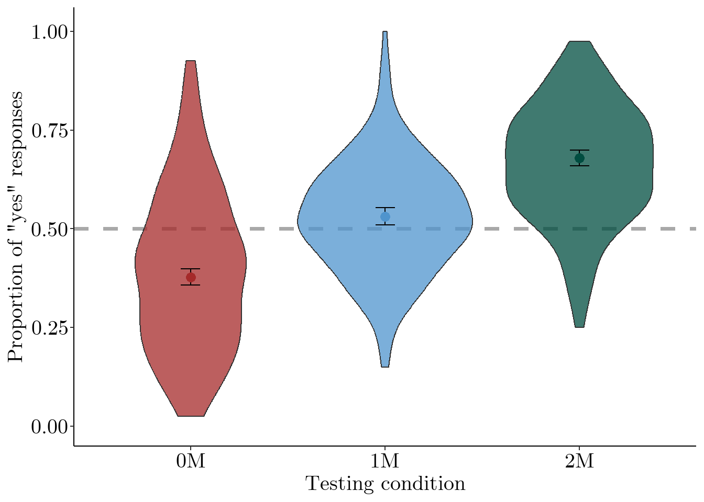
“Yes” - Gender (MAIN + INTERACTION)
ggplot(data_testing_conditions_BLP, aes(x=condition,y=score,fill=Gender,group=interaction(condition,Gender))) +
scale_fill_manual(values=c(cols2[400],cols2[310])) +
geom_hline(yintercept=0.5, linetype="dashed",
color = "darkgray",lwd=1.25) +
geom_boxplot(alpha = 0.75, width=0.75) +
geom_point(position = position_dodge(width=0.75),size=2) +
labs(x = "Condition", y = 'Proportion of "yes" responses') +
theme(panel.grid.major = element_blank(), panel.grid.minor = element_blank(),
panel.background = element_blank(), axis.line = element_line(colour = "black"),
axis.text = element_text(family = "CMU Serif", size = 30, color = "black"),
text=element_text(family="CMU Serif",size=30),
legend.position=c(0.9,0.1),legend.background=element_rect(fill=NA)) +
ylim(0,1.05) +
coord_cartesian(expand = FALSE) +
scale_x_discrete(labels=c("0M", "1M", "2M"));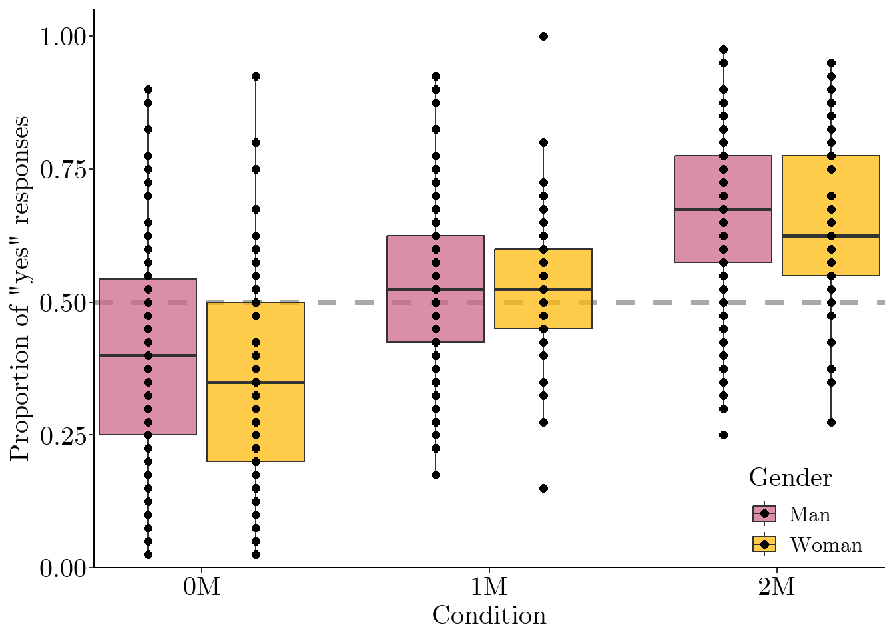
# Women say "yes" more in 1M“Yes” - PC1 (L4) (INTERACTION)
effect_RC1 <- as.data.frame(effect('testing_condition*RC1_L4',
lm_RC1, confint=list(alpha=.95)),
xlevels = list(RC1_L4 = -1.2:5.6,
testing_condition=c('0M','1M','2M')))Warning in Analyze.model(focal.predictors, mod, xlevels, default.levels, : the
predictor scale(trialn) is a one-column matrix that was converted to a vectorggplot(effect_RC1, aes(x=RC1_L4,y=fit)) +
geom_hline(yintercept=0.5, linetype="dashed",
color = "darkgray",lwd=1.25) +
geom_line(aes(color = testing_condition), lwd = 2) +
geom_ribbon(aes(ymin = lower, ymax = upper, fill = testing_condition), alpha = .5) +
scale_color_manual(values=c(cols2[100],cols2[200],"#004D40FF"),
name="Condition",labels=c("0M","1M","2M")) +
scale_fill_manual(values=c(cols2[100],cols2[200],"#004D40FF"),
name="Condition",labels=c("0M","1M","2M")) +
labs(x = "RC1: L4", y = 'Proportion of "yes" responses', title = 'Fitted Line - Lme4') +
theme(panel.grid.major = element_blank(), panel.grid.minor = element_blank(),
panel.background = element_blank(), axis.line = element_line(colour = "black"),
axis.text = element_text(family = "CMU Serif", size = 30, color = "black"),
text=element_text(family="CMU Serif",size=30),
legend.position=c(0.1,0.7),legend.background=element_rect(fill=NA));“Yes” - PC2 (INTERACTION)
effect_RC2 <- as.data.frame(effect('testing_condition*RC2_use_L1vsL2',
lm_RC2, confint=list(alpha=.95)),
xlevels = list(RC2_use_L1vsL2 = -1.9:4,
testing_condition=c('0M','1M','2M')))Warning in Analyze.model(focal.predictors, mod, xlevels, default.levels, : the
predictor scale(trialn) is a one-column matrix that was converted to a vectorggplot(effect_RC2, aes(x=RC2_use_L1vsL2,y=fit)) +
geom_hline(yintercept=0.5, linetype="dashed",
color = "darkgray",lwd=1.25) +
geom_line(aes(color = testing_condition), lwd = 2) +
geom_ribbon(aes(ymin = lower, ymax = upper, fill = testing_condition), alpha = .5) +
scale_color_manual(values=c(cols2[100],cols2[200],"#004D40FF"),
name="Condition",labels=c("0M","1M","2M")) +
scale_fill_manual(values=c(cols2[100],cols2[200],"#004D40FF"),
name="Condition",labels=c("0M","1M","2M")) +
labs(x = "RC2: L1 vs L2 Use", y = 'Proportion of "yes" responses', title = 'Fitted Line - Lme4') +
theme(panel.grid.major = element_blank(), panel.grid.minor = element_blank(),
panel.background = element_blank(), axis.line = element_line(colour = "black"),
axis.text = element_text(family = "CMU Serif", size = 30, color = "black"),
text=element_text(family="CMU Serif",size=30),
legend.position=c(0.1,0.9),legend.background=element_rect(fill=NA));# More L2 use = greater morph fam effect“Yes” - Entropy (INTERACTION)
effect_ent <- as.data.frame(effect('testing_condition*ent',
lm_ent, confint=list(alpha=.95)),
xlevels = list(ent = 0:2,
testing_condition=c('0M','1M','2M')))Warning in Analyze.model(focal.predictors, mod, xlevels, default.levels, : the
predictor scale(trialn) is a one-column matrix that was converted to a vectorggplot(effect_ent, aes(x = ent, y = fit)) +
geom_hline(yintercept=0.5, linetype="dashed",
color = "darkgray",lwd=1.25) +
geom_line(aes(color = testing_condition), lwd = 2) +
geom_ribbon(aes(ymin = lower, ymax = upper, fill = testing_condition), alpha = .5) +
scale_color_manual(values=c(cols2[100],cols2[200],"#004D40FF"),
name="Condition",labels=c("0M","1M","2M")) +
scale_fill_manual(values=c(cols2[100],cols2[200],"#004D40FF"),
name="Condition",labels=c("0M","1M","2M")) +
theme(panel.grid.major = element_blank(), panel.grid.minor = element_blank(),
panel.background = element_blank(), axis.line = element_line(colour = "black"),
axis.text = element_text(family = "CMU Serif", size = 30, color = "black"),
text=element_text(family="CMU Serif",size=30),
legend.position=c(0.1,0.9),legend.background=element_rect(fill=NA)) +
labs(x = 'Mulilingual balance (entropy)', y = 'Proportion of "yes" responses', title = 'Fitted Line - Lme4');“Yes” - Use Entropy (INTERACTION)
effect_use_ent <- as.data.frame(effect('testing_condition*use_ent',
lm_use_ent, confint=list(alpha=.95)),
xlevels = list(ent = 0:2,
testing_condition=c('0M','1M','2M')))Warning in Analyze.model(focal.predictors, mod, xlevels, default.levels, : the
predictor scale(trialn) is a one-column matrix that was converted to a vectorggplot(effect_use_ent, aes(x = use_ent, y = fit)) +
geom_hline(yintercept=0.5, linetype="dashed",
color = "darkgray",lwd=1.25) +
geom_line(aes(color = testing_condition), lwd = 2) +
geom_ribbon(aes(ymin = lower, ymax = upper, fill = testing_condition), alpha = .5) +
scale_color_manual(values=c(cols2[100],cols2[200],"#004D40FF"),
name="Condition",labels=c("0M","1M","2M")) +
scale_fill_manual(values=c(cols2[100],cols2[200],"#004D40FF"),
name="Condition",labels=c("0M","1M","2M")) +
theme(panel.grid.major = element_blank(), panel.grid.minor = element_blank(),
panel.background = element_blank(), axis.line = element_line(colour = "black"),
axis.text = element_text(family = "CMU Serif", size = 30, color = "black"),
text=element_text(family="CMU Serif",size=30),
legend.position=c(0.1,0.9),legend.background=element_rect(fill=NA)) +
labs(x = 'Mulilingual balance (use entropy)', y = 'Proportion of "yes" responses', title = 'Fitted Line - Lme4');“Yes” - Multilingual Experience (INTERACTION)
effect_multiexp <- as.data.frame(effect('testing_condition*scale(multiexp)',
lm_multiexp, confint=list(alpha=.95)),
xlevels = list(multiexp = 179:644,
testing_condition=c('0M','1M','2M')))Warning in Analyze.model(focal.predictors, mod, xlevels, default.levels, : the
predictors scale(trialn), scale(multiexp) are one-column matrices that were
converted to vectorsggplot(effect_multiexp, aes(x = multiexp, y = fit)) +
geom_hline(yintercept=0.5, linetype="dashed",
color = "darkgray",lwd=1.25) +
geom_line(aes(color = testing_condition), lwd = 2) +
geom_ribbon(aes(ymin = lower, ymax = upper, fill = testing_condition), alpha = .5) +
scale_color_manual(values=c(cols2[100],cols2[200],"#004D40FF"),
name="Condition",labels=c("0M","1M","2M")) +
scale_fill_manual(values=c(cols2[100],cols2[200],"#004D40FF"),
name="Condition",labels=c("0M","1M","2M")) +
theme(panel.grid.major = element_blank(), panel.grid.minor = element_blank(),
panel.background = element_blank(), axis.line = element_line(colour = "black"),
axis.text = element_text(family = "CMU Serif", size = 30, color = "black"),
text=element_text(family="CMU Serif",size=30),
legend.position=c(0.1,0.9),legend.background=element_rect(fill=NA)) +
labs(x = 'Mulilingual experience', y = 'Proportion of "yes" responses', title = 'Fitted Line - Lme4');# More multiexp = more "yes" responses overall“Yes” - L1-L2 Difference (INTERACTION)
effect_L1L2diff <- as.data.frame(effect('testing_condition*scale(L1_L2_diff)',
lm_L1L2diff, confint=list(alpha=.95)),
xlevels = list(L1_L2_diff = 0:218,
testing_condition=c('0M','1M','2M')));Warning in Analyze.model(focal.predictors, mod, xlevels, default.levels, : the
predictors scale(trialn), scale(L1_L2_diff) are one-column matrices that were
converted to vectorsggplot(effect_L1L2diff, aes(x = L1_L2_diff, y = fit)) +
geom_hline(yintercept=0.5, linetype="dashed",
color = "darkgray",lwd=1.25) +
geom_line(aes(color = testing_condition), lwd = 2) +
geom_ribbon(aes(ymin = lower, ymax = upper, fill = testing_condition), alpha = .5) +
scale_color_manual(values=c(cols2[100],cols2[200],"#004D40FF"),
name="Condition",labels=c("0M","1M","2M")) +
scale_fill_manual(values=c(cols2[100],cols2[200],"#004D40FF"),
name="Condition",labels=c("0M","1M","2M")) +
theme(panel.grid.major = element_blank(), panel.grid.minor = element_blank(),
panel.background = element_blank(), axis.line = element_line(colour = "black"),
axis.text = element_text(family = "CMU Serif", size = 30, color = "black"),
text=element_text(family="CMU Serif",size=30),
legend.position=c(0.9,0.9),legend.background=element_rect(fill=NA)) +
labs(x = 'Bilingual balance (L1-L2 difference)', y = 'Proportion of "yes" responses', title = 'Fitted Line - Lme4');“Yes” - Cosine Similarity (MAIN EFFECT)
effect_cossim <- as.data.frame(effect('testing_condition*cossim',
lm_cossim, confint=list(alpha=.95)),
xlevels = list(L1_L2_diff = 0:1,
testing_condition=c('0M','1M','2M')));
ggplot(effect_cossim, aes(x = cossim, y = fit)) +
geom_hline(yintercept=0.5, linetype="dashed",
color = "darkgray",lwd=1.25) +
geom_line(aes(color = testing_condition), lwd = 2) +
geom_ribbon(aes(ymin = lower, ymax = upper, fill = testing_condition), alpha = .5) +
scale_color_manual(values=c(cols2[100],cols2[200],"#004D40FF"),
name="Condition",labels=c("0M","1M","2M")) +
scale_fill_manual(values=c(cols2[100],cols2[200],"#004D40FF"),
name="Condition",labels=c("0M","1M","2M")) +
theme(panel.grid.major = element_blank(), panel.grid.minor = element_blank(),
panel.background = element_blank(), axis.line = element_line(colour = "black"),
axis.text = element_text(family = "CMU Serif", size = 30, color = "black"),
text=element_text(family="CMU Serif",size=30),
legend.position=c(0.9,0.1),legend.background=element_rect(fill=NA)) +
labs(x = 'Multilingual balance (cosine similarity)', y = 'Proportion of "yes" responses', title = 'Fitted Line - Lme4');“Yes” - Cosine Similarity (no monolinguals) (MAIN EFFECT)
effect_cossim_nomonos <- as.data.frame(effect('testing_condition*cossim',
lm_cossim_nomonos, confint=list(alpha=.95)),
xlevels = list(L1_L2_diff = 0:1,
testing_condition=c('0M','1M','2M')));
ggplot(effect_cossim_nomonos, aes(x = cossim, y = fit)) +
geom_hline(yintercept=0.5, linetype="dashed",
color = "darkgray",lwd=1.25) +
geom_line(aes(color = testing_condition), lwd = 2) +
geom_ribbon(aes(ymin = lower, ymax = upper, fill = testing_condition), alpha = .5) +
scale_color_manual(values=c(cols2[100],cols2[200],"#004D40FF"),
name="Condition",labels=c("0M","1M","2M")) +
scale_fill_manual(values=c(cols2[100],cols2[200],"#004D40FF"),
name="Condition",labels=c("0M","1M","2M")) +
theme(panel.grid.major = element_blank(), panel.grid.minor = element_blank(),
panel.background = element_blank(), axis.line = element_line(colour = "black"),
axis.text = element_text(family = "CMU Serif", size = 30, color = "black"),
text=element_text(family="CMU Serif",size=30),
legend.position=c(0.9,0.1),legend.background=element_rect(fill=NA)) +
labs(x = 'Multilingual balance (cosine similarity - no monolinguals)', y = 'Proportion of "yes" responses', title = 'Fitted Line - Lme4');“Yes” - Category (INTERACTION)
ggplot(data_testing_conditions_BLP, aes(x=condition,y=score,fill=category,group=interaction(condition,category))) +
scale_fill_manual(values=c(cols2[100],cols2[310],cols2[200],cols2[285])) +
geom_hline(yintercept=0.5, linetype="dashed",
color = "darkgray",lwd=1.25) +
geom_boxplot(alpha = 0.75, width=0.75) +
geom_point(position = position_dodge(width=0.75),size=2) +
labs(x = "Condition", y = 'Proportion of "yes" responses') +
ylim(0,1.05) +
coord_cartesian(expand = FALSE) +
scale_x_discrete(labels=c("0M", "1M", "2M")) +
theme(panel.grid.major = element_blank(), panel.grid.minor = element_blank(),
panel.background = element_blank(), axis.line = element_line(colour = "black"),
axis.text = element_text(family = "CMU Serif", size = 30, color = "black"),
text=element_text(family="CMU Serif",size=30),
legend.position=c(0.9,0.1),legend.background=element_rect(fill=NA));BLP_2Mscores <- data_BLP_testing[!duplicated(data_BLP_testing$sbj_ID), ];
data_testing_2M_aggr <- data_testing_2M_aggr[data_testing_2M_aggr$response=="meanYes",];
ggplot(data_testing_2M_aggr, aes(x=expected, y=meanValue, fill=expected)) +
geom_hline(yintercept=0.5, linetype="dashed", color="darkgrey",lwd=1.25) +
geom_violin(alpha=0.75,width=1) +
geom_errorbar(aes(x=1,ymin=effect_2M$lower[[1]],ymax=effect_2M$upper[[1]]),
width=.1) + # false alarm
annotate("point",x=1,y=effect_2M$fit[[1]],colour="darkred",size=3) + # false alarm
geom_errorbar(aes(x=2,ymin=effect_2M$lower[[2]],ymax=effect_2M$upper[[2]]),
width=.1) + # hit
annotate("point",x=2,y=effect_2M$fit[[2]],colour="lightblue",size=3) + # hit
scale_fill_manual(values=c(cols2[100],cols2[200])) +
scale_x_discrete(labels=c('Between-language', 'Within-language')) +
labs(x = "String nature", y = 'Proportion of "yes" responses') +
theme(panel.grid.major = element_blank(), panel.grid.minor = element_blank(),
panel.background = element_blank(), axis.line = element_line(colour = "black"),
axis.text = element_text(family = "CMU Serif", size = 30, color = "black"),
text=element_text(family="CMU Serif",size=30),
legend.position="none",legend.background=element_rect(fill=NA));2M - PC2 (MAIN EFFECT)
ggplot(data_BLP_testing, aes(x=RC2_use_L1vsL2,y=yes_2M)) +
geom_hline(yintercept=50,linetype="dashed",color="darkgrey") +
geom_point(size=2) +
geom_smooth(method="lm",formula=y~x,color="red") +
labs(x = "PC2 (L1-L2 use)", y = 'Percent of 2M "yes" responses') +
ylim(0,101) +
xlim(min(data_BLP_testing$RC2_use_L1vsL2)-0.1,max(data_BLP_testing$RC2_use_L1vsL2)+0.1) +
coord_cartesian(expand = FALSE) +
theme(panel.grid.major = element_blank(), panel.grid.minor = element_blank(),
panel.background = element_blank(), axis.line = element_line(colour = "black"),
axis.text = element_text(family = "CMU Serif", size = 30, color = "black"),
text=element_text(family="CMU Serif",size=30),
legend.position="inside",legend.position.inside = c(0.85,0.09),
legend.background=element_rect(fill=NA));2M - Use Entropy (MAIN EFFECT)
ggplot(data_BLP_testing, aes(x=use_ent,y=yes_2M)) +
geom_hline(yintercept=50,linetype="dashed",color="darkgrey") +
geom_point(size=2) +
geom_smooth(method="lm",formula=y~x,color="red") +
labs(x = "Multilingual balance (use entropy)", y = 'Percent of 2M "yes" responses') +
ylim(0,101) +
xlim(min(data_BLP_testing$use_ent)-0.1,max(data_BLP_testing$use_ent)+0.1) +
coord_cartesian(expand = FALSE) +
theme(panel.grid.major = element_blank(), panel.grid.minor = element_blank(),
panel.background = element_blank(), axis.line = element_line(colour = "black"),
axis.text = element_text(family = "CMU Serif", size = 30, color = "black"),
text=element_text(family="CMU Serif",size=30),
legend.position="inside",legend.position.inside = c(0.85,0.09),
legend.background=element_rect(fill=NA));2M - Multilingual Experience (MAIN EFFECT)
ggplot(data_BLP_testing, aes(x=multiexp,y=yes_2M)) +
geom_hline(yintercept=50,linetype="dashed",color="darkgrey") +
geom_point(size=2) +
geom_smooth(method="lm",formula=y~x,color="red") +
labs(x = "Multilingual experience", y = 'Percent of 2M "yes" responses') +
ylim(0,101) +
xlim(min(data_BLP_testing$multiexp)-5,max(data_BLP_testing$multiexp)+5) +
coord_cartesian(expand = FALSE) +
theme(panel.grid.major = element_blank(), panel.grid.minor = element_blank(),
panel.background = element_blank(), axis.line = element_line(colour = "black"),
axis.text = element_text(family = "CMU Serif", size = 30, color = "black"),
text=element_text(family="CMU Serif",size=30),
legend.position="inside",legend.position.inside = c(0.85,0.09),
legend.background=element_rect(fill=NA));2M - L1-L2 Difference (MAIN EFFECT)
ggplot(data_BLP_testing, aes(x=L1_L2_diff,y=yes_2M)) +
geom_hline(yintercept=50,linetype="dashed",color="darkgrey") +
geom_point(size=2) +
geom_smooth(method="lm",formula=y~x,color="red") +
labs(x = "Bilingual balance (L1-L2 difference)", y = 'Percent of 2M "yes" responses') +
ylim(0,101) +
xlim(min(data_BLP_testing$L1_L2_diff)-2,max(data_BLP_testing$L1_L2_diff)+2) +
coord_cartesian(expand = FALSE) +
theme(panel.grid.major = element_blank(), panel.grid.minor = element_blank(),
panel.background = element_blank(), axis.line = element_line(colour = "black"),
axis.text = element_text(family = "CMU Serif", size = 30, color = "black"),
text=element_text(family="CMU Serif",size=30),
legend.position="inside",legend.position.inside = c(0.85,0.09),
legend.background=element_rect(fill=NA));2M - Cosine Similarity (MAIN EFFECT + INTERACTION)
ggplot(data_BLP_testing, aes(x=cossim,y=score_2M)) +
geom_hline(yintercept=0.5,linetype="dashed",color="darkgrey") +
geom_point(size=4) +
geom_smooth(method="lm",formula=y~x,color="red") +
labs(x = "Multilingual balance (cosine similarity)", y = '2M accuracy') +
ylim(0.3,0.7) +
xlim(min(data_BLP_testing$cossim)-0.01,max(data_BLP_testing$cossim)+0.01) +
coord_cartesian(expand = FALSE) +
theme(panel.grid.major = element_blank(), panel.grid.minor = element_blank(),
panel.background = element_blank(), axis.line = element_line(colour = "black"),
axis.text = element_text(family = "CMU Serif", size = 30, color = "black"),
text=element_text(family="CMU Serif",size=30),
legend.position="inside",legend.position.inside = c(0.85,0.09),
legend.background=element_rect(fill=NA));ggplot(data_BLP_testing, aes(x=cossim,y=yes_2M)) +
geom_hline(yintercept=50,linetype="dashed",color="darkgrey") +
geom_point(size=2) +
geom_smooth(method="lm",formula=y~x,color="red") +
labs(x = "Multilingual balance (cosine similarity)", y = 'Percent of 2M "yes" responses') +
ylim(0,101) +
xlim(min(data_BLP_testing$cossim)-0.01,max(data_BLP_testing$cossim)+0.01) +
coord_cartesian(expand = FALSE) +
theme(panel.grid.major = element_blank(), panel.grid.minor = element_blank(),
panel.background = element_blank(), axis.line = element_line(colour = "black"),
axis.text = element_text(family = "CMU Serif", size = 30, color = "black"),
text=element_text(family="CMU Serif",size=30),
legend.position="inside",legend.position.inside = c(0.85,0.09),
legend.background=element_rect(fill=NA));2M - Cosine Similarity (no monolinguals) (MAIN EFFECT + INTERACTION)
ggplot(data_BLP_testing[data_BLP_testing$L2Score>0,], aes(x=cossim,y=score_2M)) +
geom_hline(yintercept=0.5,linetype="dashed",color="darkgrey") +
geom_point(size=4) +
geom_smooth(method="lm",formula=y~x,color="red") +
labs(x = "Multilingual balance (cosine similarity - no monolinguals)", y = '2M accuracy') +
ylim(0.3,0.7) +
xlim(min(data_BLP_testing$cossim)-0.01,max(data_BLP_testing$cossim)+0.01) +
coord_cartesian(expand = FALSE) +
theme(panel.grid.major = element_blank(), panel.grid.minor = element_blank(),
panel.background = element_blank(), axis.line = element_line(colour = "black"),
axis.text = element_text(family = "CMU Serif", size = 30, color = "black"),
text=element_text(family="CMU Serif",size=30),
legend.position="inside",legend.position.inside = c(0.85,0.09),
legend.background=element_rect(fill=NA));ggplot(data_BLP_testing[data_BLP$L2Score>0,], aes(x=cossim,y=yes_2M)) +
geom_hline(yintercept=50,linetype="dashed",color="darkgrey") +
geom_point(size=2) +
geom_smooth(method="lm",formula=y~x,color="red") +
labs(x = "Multilingual balance (cosine similarity - without monolinguals)", y = 'Percent of 2M "yes" responses') +
ylim(0,101) +
xlim(min(data_BLP_testing$cossim)-0.01,max(data_BLP_testing$cossim)+0.01) +
coord_cartesian(expand = FALSE) +
theme(panel.grid.major = element_blank(), panel.grid.minor = element_blank(),
panel.background = element_blank(), axis.line = element_line(colour = "black"),
axis.text = element_text(family = "CMU Serif", size = 30, color = "black"),
text=element_text(family="CMU Serif",size=30),
legend.position="inside",legend.position.inside = c(0.85,0.09),
legend.background=element_rect(fill=NA));2M - Use Cosine Similarity (MAIN EFFECT + INTERACTION)
ggplot(data_BLP_testing, aes(x=use_cossim,y=score_2M)) +
geom_hline(yintercept=0.5,linetype="dashed",color="darkgrey") +
geom_point(size=2) +
geom_smooth(method="lm",formula=y~x,color="red") +
labs(x = "Multilingual balance (use cosine similarity)", y = '2M accuracy') +
ylim(0,1.1) +
xlim(min(data_BLP_testing$use_cossim)-0.01,max(data_BLP_testing$use_cossim)+0.01) +
coord_cartesian(expand = FALSE) +
theme(panel.grid.major = element_blank(), panel.grid.minor = element_blank(),
panel.background = element_blank(), axis.line = element_line(colour = "black"),
axis.text = element_text(family = "CMU Serif", size = 30, color = "black"),
text=element_text(family="CMU Serif",size=30),
legend.position="inside",legend.position.inside = c(0.85,0.09),
legend.background=element_rect(fill=NA));ggplot(data_BLP_testing, aes(x=use_cossim,y=yes_2M)) +
geom_hline(yintercept=50,linetype="dashed",color="darkgrey") +
geom_point(size=2) +
geom_smooth(method="lm",formula=y~x,color="red") +
labs(x = "Multilingual balance (use cosine similarity)", y = 'Percent of 2M "yes" responses') +
ylim(0,101) +
xlim(min(data_BLP_testing$use_cossim)-0.01,max(data_BLP_testing$use_cossim)+0.01) +
coord_cartesian(expand = FALSE) +
theme(panel.grid.major = element_blank(), panel.grid.minor = element_blank(),
panel.background = element_blank(), axis.line = element_line(colour = "black"),
axis.text = element_text(family = "CMU Serif", size = 30, color = "black"),
text=element_text(family="CMU Serif",size=30),
legend.position="inside",legend.position.inside = c(0.85,0.09),
legend.background=element_rect(fill=NA));2M - Script (MAIN EFFECT)
ggplot(BLP_2Mscores, aes(x=script,y=yes_2M)) +
geom_hline(yintercept=50,linetype="dashed",color="darkgrey") +
geom_boxplot(fill="darkgrey") +
labs(x = "Script", y = 'Percent of 2M "yes" responses') +
scale_x_discrete(labels=c('Same','Mixed')) +
scale_y_continuous(expand=c(0, 0), limits=c(0, 101)) +
theme(panel.grid.major = element_blank(), panel.grid.minor = element_blank(),
panel.background = element_blank(), axis.line = element_line(colour = "black"),
axis.text = element_text(family = "CMU Serif", size = 30, color = "black"),
text=element_text(family="CMU Serif",size=30),
legend.background=element_rect(fill=NA));t.test(BLP_2Mscores$score_2M[BLP_2Mscores$script=='same'],mu=0.5);
One Sample t-test
data: BLP_2Mscores$score_2M[BLP_2Mscores$script == "same"]
t = 1.8889, df = 89, p-value = 0.06216
alternative hypothesis: true mean is not equal to 0.5
95 percent confidence interval:
0.4993799 0.5245089
sample estimates:
mean of x
0.5119444 t.test(BLP_2Mscores$score_2M[BLP_2Mscores$script=='mixed'],mu=0.5);
One Sample t-test
data: BLP_2Mscores$score_2M[BLP_2Mscores$script == "mixed"]
t = 1.9052, df = 104, p-value = 0.05952
alternative hypothesis: true mean is not equal to 0.5
95 percent confidence interval:
0.4995136 0.5242959
sample estimates:
mean of x
0.5119048 t.test(BLP_2Mscores$dprime[BLP_2Mscores$script=='same'],mu=0);
One Sample t-test
data: BLP_2Mscores$dprime[BLP_2Mscores$script == "same"]
t = 1.5962, df = 89, p-value = 0.114
alternative hypothesis: true mean is not equal to 0
95 percent confidence interval:
-0.01429631 0.13109631
sample estimates:
mean of x
0.0584 t.test(BLP_2Mscores$dprime[BLP_2Mscores$script=='mixed'],mu=0);
One Sample t-test
data: BLP_2Mscores$dprime[BLP_2Mscores$script == "mixed"]
t = 2.0551, df = 104, p-value = 0.04237
alternative hypothesis: true mean is not equal to 0
95 percent confidence interval:
0.002674232 0.149801959
sample estimates:
mean of x
0.0762381 2M - Category (INTERACTION)
ggplot(BLP_2Mscores, aes(x=category,y=score_2M)) +
geom_hline(yintercept=0.5,linetype="dashed",color="darkgrey") +
geom_boxplot(fill="darkgrey") +
labs(x = "Multilingual category", y = '2M accuracy') +
scale_x_discrete(labels=c('Monolingual','Bilingual','Trilingual','Quadrilingual')) +
scale_y_continuous(expand=c(0,0), limits=c(0,1.01)) +
theme(panel.grid.major = element_blank(), panel.grid.minor = element_blank(),
panel.background = element_blank(), axis.line = element_line(colour = "black"),
axis.text = element_text(family = "CMU Serif", size = 30, color = "black"),
text=element_text(family="CMU Serif",size=30),
legend.background=element_rect(fill=NA));t.test(BLP_2Mscores$score_2M[BLP_2Mscores$category=='mono'],mu=0.5);
One Sample t-test
data: BLP_2Mscores$score_2M[BLP_2Mscores$category == "mono"]
t = -0.61243, df = 22, p-value = 0.5465
alternative hypothesis: true mean is not equal to 0.5
95 percent confidence interval:
0.4618581 0.5207506
sample estimates:
mean of x
0.4913043 t.test(BLP_2Mscores$score_2M[BLP_2Mscores$category=='bi'],mu=0.5);
One Sample t-test
data: BLP_2Mscores$score_2M[BLP_2Mscores$category == "bi"]
t = 3.4551, df = 90, p-value = 0.0008411
alternative hypothesis: true mean is not equal to 0.5
95 percent confidence interval:
0.5088737 0.5328846
sample estimates:
mean of x
0.5208791 t.test(BLP_2Mscores$score_2M[BLP_2Mscores$category=='tri'],mu=0.5);
One Sample t-test
data: BLP_2Mscores$score_2M[BLP_2Mscores$category == "tri"]
t = 1.0292, df = 54, p-value = 0.308
alternative hypothesis: true mean is not equal to 0.5
95 percent confidence interval:
0.4913826 0.5267992
sample estimates:
mean of x
0.5090909 t.test(BLP_2Mscores$score_2M[BLP_2Mscores$category=='quadri'],mu=0.5);
One Sample t-test
data: BLP_2Mscores$score_2M[BLP_2Mscores$category == "quadri"]
t = 0.39763, df = 25, p-value = 0.6943
alternative hypothesis: true mean is not equal to 0.5
95 percent confidence interval:
0.4799059 0.5297094
sample estimates:
mean of x
0.5048077 t.test(BLP_2Mscores$dprime[BLP_2Mscores$category=='mono'],mu=0);
One Sample t-test
data: BLP_2Mscores$dprime[BLP_2Mscores$category == "mono"]
t = -0.44474, df = 22, p-value = 0.6608
alternative hypothesis: true mean is not equal to 0
95 percent confidence interval:
-0.2206138 0.1427008
sample estimates:
mean of x
-0.03895652 t.test(BLP_2Mscores$dprime[BLP_2Mscores$category=='bi'],mu=0);
One Sample t-test
data: BLP_2Mscores$dprime[BLP_2Mscores$category == "bi"]
t = 3.2529, df = 90, p-value = 0.001609
alternative hypothesis: true mean is not equal to 0
95 percent confidence interval:
0.04251881 0.17594273
sample estimates:
mean of x
0.1092308 t.test(BLP_2Mscores$dprime[BLP_2Mscores$category=='tri'],mu=0);
One Sample t-test
data: BLP_2Mscores$dprime[BLP_2Mscores$category == "tri"]
t = 1.202, df = 54, p-value = 0.2346
alternative hypothesis: true mean is not equal to 0
95 percent confidence interval:
-0.04368783 0.17448783
sample estimates:
mean of x
0.0654 t.test(BLP_2Mscores$dprime[BLP_2Mscores$category=='quadri'],mu=0);
One Sample t-test
data: BLP_2Mscores$dprime[BLP_2Mscores$category == "quadri"]
t = 0.3304, df = 25, p-value = 0.7438
alternative hypothesis: true mean is not equal to 0
95 percent confidence interval:
-0.1247962 0.1724885
sample estimates:
mean of x
0.02384615 data_BLP_short <- subset(data_BLP, select=c(HistoryL1Score,HistoryL2Score,HistoryL3Score,HistoryL4Score,UseL1Score,UseL2Score,UseL3Score,UseL4Score,ProficiencyL1Score,ProficiencyL2Score,ProficiencyL3Score,ProficiencyL4Score,AttitudeL1Score,AttitudeL2Score,AttitudeL3Score,AttitudeL4Score,L1Score,L2Score,L3Score,L4Score,var,ent,use_ent,cossim,use_cossim,multiexp,L1_L2_diff,RC3_L3,RC1_L4,RC2_use_L1vsL2,RC8_hist_L2));
plot(varclus(as.matrix(data_BLP_short)),cex=2,lwd=2)